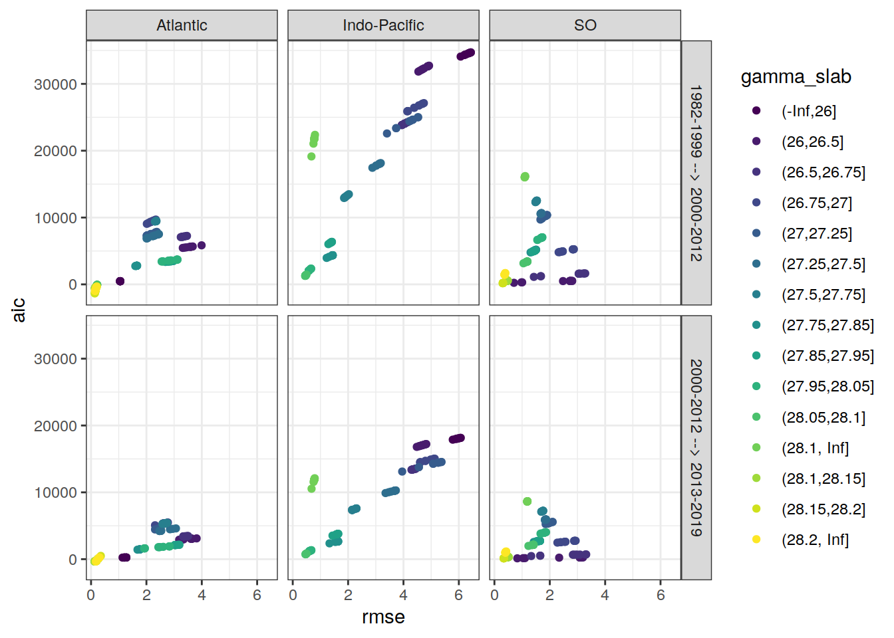

Last updated: 2021-02-03
Checks: 7 0
Knit directory: emlr_mod_v_140/
This reproducible R Markdown analysis was created with workflowr (version 1.6.2). The Checks tab describes the reproducibility checks that were applied when the results were created. The Past versions tab lists the development history.
Great! Since the R Markdown file has been committed to the Git repository, you know the exact version of the code that produced these results.
Great job! The global environment was empty. Objects defined in the global environment can affect the analysis in your R Markdown file in unknown ways. For reproduciblity it’s best to always run the code in an empty environment.
The command set.seed(20200707) was run prior to running the code in the R Markdown file. Setting a seed ensures that any results that rely on randomness, e.g. subsampling or permutations, are reproducible.
Great job! Recording the operating system, R version, and package versions is critical for reproducibility.
Nice! There were no cached chunks for this analysis, so you can be confident that you successfully produced the results during this run.
Great job! Using relative paths to the files within your workflowr project makes it easier to run your code on other machines.
Great! You are using Git for version control. Tracking code development and connecting the code version to the results is critical for reproducibility.
The results in this page were generated with repository version 818a48d. See the Past versions tab to see a history of the changes made to the R Markdown and HTML files.
Note that you need to be careful to ensure that all relevant files for the analysis have been committed to Git prior to generating the results (you can use wflow_publish or wflow_git_commit). workflowr only checks the R Markdown file, but you know if there are other scripts or data files that it depends on. Below is the status of the Git repository when the results were generated:
Ignored files:
Ignored: .Rhistory
Ignored: .Rproj.user/
Unstaged changes:
Modified: data/auxillary/params_local.rds
Note that any generated files, e.g. HTML, png, CSS, etc., are not included in this status report because it is ok for generated content to have uncommitted changes.
These are the previous versions of the repository in which changes were made to the R Markdown (analysis/eMLR_model_fitting.Rmd) and HTML (docs/eMLR_model_fitting.html) files. If you’ve configured a remote Git repository (see ?wflow_git_remote), click on the hyperlinks in the table below to view the files as they were in that past version.
| File | Version | Author | Date | Message |
|---|---|---|---|---|
| html | 8730b5c | Donghe-Zhu | 2021-01-30 | Build site. |
| Rmd | e1f6429 | Jens Müller | 2021-01-29 | Initial commit |
Required are:
GLODAP <-
read_csv(paste(path_version_data,
"GLODAPv2.2020_MLR_fitting_ready.csv",
sep = ""))Find all possible combinations of following considered predictor variables:
# the following code is a workaround to find all predictor combinations
# using the olsrr package and fit all models for one era, slab, and basin
i_basin <- unique(GLODAP$basin)[1]
i_era <- unique(GLODAP$era)[1]
# subset one basin and era for fitting
GLODAP_basin_era <- GLODAP %>%
filter(basin == i_basin, era == i_era)
i_gamma_slab <- unique(GLODAP_basin_era$gamma_slab)[1]
print(i_gamma_slab)
# subset one gamma slab
GLODAP_basin_era_slab <- GLODAP_basin_era %>%
filter(gamma_slab == i_gamma_slab)
# fit the full linear model, i.e. all predictor combinations
lm_full <- lm(paste(
params_local$MLR_target,
paste(params_local$MLR_predictors, collapse = " + "),
sep = " ~ "
),
data = GLODAP_basin_era_slab)
# fit linear models for all possible predictor combinations
# unfortunately, this functions does not provide model coefficients (yet)
lm_all <- ols_step_all_possible(lm_full)
# convert to tibble
lm_all <- as_tibble(lm_all)
# extract relevant columns and format model formula
lm_all <- lm_all %>%
select(n, predictors) %>%
mutate(lm_coeff = str_replace_all(predictors, " ", " + "),
lm_coeff = paste(params_local$MLR_target, "~", lm_coeff))
# remove predictor combinations with nitrate and phosphate
lm_all <- lm_all %>%
mutate(lm_coeff_filter = str_remove(lm_coeff, "phosphate_star")) %>%
filter(!(
str_detect(lm_coeff_filter, "nitrate") &
str_detect(lm_coeff_filter, "phosphate")
)) %>%
select(-lm_coeff_filter)
# remove helper objects
rm(i_gamma_slab,
i_era,
i_basin,
GLODAP_basin_era,
GLODAP_basin_era_slab,
lm_full)Select combinations with a total number of predictors in the range:
lm_all <- lm_all %>%
filter(n >= params_local$MLR_predictors_min,
n <= params_local$MLR_predictors_max)This results in a total number of MLR models of:
Individual linear regression models were fitted for the chosen target variable:
as a function of each predictor combination. Fitting was performed separately within each basin, era, and slab. Model diagnostics, such as the root mean squared error (RMSE), were calculated for each fitted model.
# loop across all basins, era, gamma slabs, and MLRs
# fit all MLR models
for (i_basin in unique(GLODAP$basin)) {
for (i_era in unique(GLODAP$era)) {
# i_basin <- unique(GLODAP$basin)[1]
# i_era <- unique(GLODAP$era)[1]
print(i_basin)
print(i_era)
GLODAP_basin_era <- GLODAP %>%
filter(basin == i_basin, era == i_era)
for (i_gamma_slab in unique(GLODAP_basin_era$gamma_slab)) {
# i_gamma_slab <- unique(GLODAP_basin_era$gamma_slab)[1]
print(i_gamma_slab)
GLODAP_basin_era_slab <- GLODAP_basin_era %>%
filter(gamma_slab == i_gamma_slab)
for (i_predictors in unique(lm_all$predictors)) {
# i_predictors <- unique(lm_all$predictors)[110]
# extract one model definition
i_lm <- lm_all %>%
filter(predictors == i_predictors) %>%
select(lm_coeff) %>%
pull()
# extract number of predictors
i_n_predictors <- lm_all %>%
filter(predictors == i_predictors) %>%
select(n) %>%
pull()
# fit model
i_lm_fit <- lm(as.formula(i_lm),
data = GLODAP_basin_era_slab)
# find max predictor correlation
i_cor_max <- GLODAP_basin_era_slab %>%
select(!!!syms(str_split(i_predictors, " ",
simplify = TRUE))) %>%
correlate(quiet = TRUE) %>%
select(-term) %>%
abs() %>%
max(na.rm = TRUE)
# calculate root mean squared error
i_rmse <- sqrt(c(crossprod(i_lm_fit$residuals)) /
length(i_lm_fit$residuals))
# calculate maximum residual
i_resid_max <- max(abs(i_lm_fit$residuals))
# calculate Akaike information criterion aic
i_aic <- AIC(i_lm_fit)
# collect model coefficients and diagnostics
coefficients <- tidy(i_lm_fit)
coefficients <- coefficients %>%
mutate(
basin = i_basin,
era = i_era,
gamma_slab = i_gamma_slab,
model = i_lm,
rmse = i_rmse,
aic = i_aic,
resid_max = i_resid_max,
n_predictors = i_n_predictors,
na_predictor = anyNA(coefficients$estimate),
cor_max = i_cor_max
)
if (exists("lm_all_fitted")) {
lm_all_fitted <- bind_rows(lm_all_fitted, coefficients)
}
if (!exists("lm_all_fitted")) {
lm_all_fitted <- coefficients
}
}
}
}
}
rm(
i_lm_fit,
coefficients,
i_rmse,
GLODAP_basin_era,
GLODAP_basin_era_slab,
i_lm,
i_basin,
i_era,
i_gamma_slab,
i_predictors,
i_aic,
i_n_predictors,
i_resid_max
)Coefficients are prepared for the mapping of Cant and the chosen target variable.
# select relevant columns
lm_all_fitted <- lm_all_fitted %>%
select(
basin,
gamma_slab,
era,
model,
n_predictors,
term,
estimate,
rmse,
aic,
resid_max,
na_predictor,
cor_max
)
# set coefficient to zero if not fitted (=NA)
lm_all_fitted <- lm_all_fitted %>%
mutate(estimate = if_else(is.na(estimate), 0, estimate))
# Prepare model coefficients for mapping of target variable
lm_all_fitted_wide <- lm_all_fitted %>%
pivot_wider(
values_from = estimate,
names_from = term,
names_prefix = "coeff_",
values_fill = 0
)Within each basin and slab, the following number of best linear regression models was selected:
The criterion used to select the best models was:
The criterion was summed up for two adjacent eras, and the models with lowest summed values were selected.
Please note, that currently the lm() function produces NAs for some predictors. It is not yet entirely clear when this happens, but presumably it is caused by some form of collinearity between predictors, such that including another predictor does not help to explain the target variable any better. The issues also expresses as exactly identical rmse values of different models. As an interim solution, models with fitted NA predictors were not included.
# remove models with predictors fitted as NA
lm_all_fitted_wide <- lm_all_fitted_wide %>%
filter(na_predictor == FALSE)# calculate RMSE sum for adjacent eras
lm_all_fitted_wide_eras <- lm_all_fitted_wide %>%
select(basin, gamma_slab, model, era, rmse, aic, resid_max) %>%
arrange(era) %>%
group_by(basin, gamma_slab, model) %>%
mutate(
eras = paste(lag(era), era, sep = " --> "),
rmse_sum = rmse + lag(rmse),
aic_sum = aic + lag(aic)
) %>%
ungroup() %>%
select(-c(era)) %>%
drop_na()
# subset models with lowest summed criterion
# chose which criterion is applied
if (params_local$MLR_criterion == "aic") {
lm_best <- lm_all_fitted_wide_eras %>%
group_by(basin, gamma_slab, eras) %>%
slice_min(order_by = aic_sum,
with_ties = FALSE,
n = params_local$MLR_number) %>%
ungroup() %>%
arrange(basin, gamma_slab, eras, model)
} else {
lm_best <- lm_all_fitted_wide_eras %>%
group_by(basin, gamma_slab, eras) %>%
slice_min(order_by = rmse_sum,
with_ties = FALSE,
n = params_local$MLR_number) %>%
ungroup() %>%
arrange(basin, gamma_slab, eras, model)
}
# print table
lm_best %>%
kable() %>%
add_header_above() %>%
kable_styling() %>%
scroll_box(width = "100%", height = "400px")| basin | gamma_slab | model | rmse | aic | resid_max | eras | rmse_sum | aic_sum |
|---|---|---|---|---|---|---|---|---|
| Atlantic | (-Inf,26] | cstar_tref ~ sal + aou + phosphate + phosphate_star | 1.0492038 | 475.5625582 | 4.3578441 | 1982-1999 –> 2000-2012 | 2.3855522 | 1198.45637 |
| Atlantic | (-Inf,26] | cstar_tref ~ sal + aou + silicate + phosphate + phosphate_star | 1.0480832 | 477.2248679 | 4.2990206 | 1982-1999 –> 2000-2012 | 2.3837757 | 1201.91446 |
| Atlantic | (-Inf,26] | cstar_tref ~ sal + temp + aou + nitrate + phosphate_star | 1.0458289 | 476.5444531 | 4.1992972 | 1982-1999 –> 2000-2012 | 2.3833703 | 1201.80949 |
| Atlantic | (-Inf,26] | cstar_tref ~ sal + temp + aou + phosphate | 1.0547002 | 477.2136518 | 4.5473106 | 1982-1999 –> 2000-2012 | 2.3926132 | 1200.59424 |
| Atlantic | (-Inf,26] | cstar_tref ~ sal + temp + aou + phosphate + phosphate_star | 1.0447877 | 476.2297176 | 3.9913380 | 1982-1999 –> 2000-2012 | 2.3809752 | 1201.07344 |
| Atlantic | (-Inf,26] | cstar_tref ~ sal + temp + aou + phosphate_star | 1.0561323 | 477.6424413 | 4.5846540 | 1982-1999 –> 2000-2012 | 2.3943969 | 1201.13232 |
| Atlantic | (-Inf,26] | cstar_tref ~ sal + temp + aou + silicate + phosphate | 1.0538228 | 478.9506540 | 4.4968455 | 1982-1999 –> 2000-2012 | 2.3907671 | 1204.02994 |
| Atlantic | (-Inf,26] | cstar_tref ~ sal + temp + aou + silicate + phosphate_star | 1.0553928 | 479.4210903 | 4.5407576 | 1982-1999 –> 2000-2012 | 2.3925975 | 1204.58138 |
| Atlantic | (-Inf,26] | cstar_tref ~ sal + temp + phosphate + phosphate_star | 1.0578357 | 478.1516779 | 4.6251063 | 1982-1999 –> 2000-2012 | 2.3970155 | 1201.92597 |
| Atlantic | (-Inf,26] | cstar_tref ~ sal + temp + silicate + phosphate + phosphate_star | 1.0571098 | 479.9347531 | 4.5806815 | 1982-1999 –> 2000-2012 | 2.3951210 | 1205.34589 |
| Atlantic | (-Inf,26] | cstar_tref ~ sal + aou + phosphate + phosphate_star | 1.2725075 | 251.0296204 | 3.6583670 | 2000-2012 –> 2013-2019 | 2.3217113 | 726.59218 |
| Atlantic | (-Inf,26] | cstar_tref ~ sal + aou + silicate + phosphate + phosphate_star | 1.1936365 | 243.8158001 | 3.2379740 | 2000-2012 –> 2013-2019 | 2.2417197 | 721.04067 |
| Atlantic | (-Inf,26] | cstar_tref ~ sal + temp + aou + nitrate + phosphate_star | 1.1377961 | 236.9165675 | 2.7865695 | 2000-2012 –> 2013-2019 | 2.1836250 | 713.46102 |
| Atlantic | (-Inf,26] | cstar_tref ~ sal + temp + aou + nitrate + silicate | 1.2083604 | 245.5812177 | 2.6912257 | 2000-2012 –> 2013-2019 | 2.2954998 | 734.36757 |
| Atlantic | (-Inf,26] | cstar_tref ~ sal + temp + aou + phosphate | 1.2744476 | 251.2489910 | 3.7740146 | 2000-2012 –> 2013-2019 | 2.3291478 | 728.46264 |
| Atlantic | (-Inf,26] | cstar_tref ~ sal + temp + aou + phosphate + phosphate_star | 1.2718853 | 252.9591906 | 3.5478791 | 2000-2012 –> 2013-2019 | 2.3166730 | 729.18891 |
| Atlantic | (-Inf,26] | cstar_tref ~ sal + temp + aou + phosphate_star | 1.2749024 | 251.3003703 | 3.7918094 | 2000-2012 –> 2013-2019 | 2.3310347 | 728.94281 |
| Atlantic | (-Inf,26] | cstar_tref ~ sal + temp + aou + silicate + phosphate | 1.1990801 | 244.4710222 | 3.3796520 | 2000-2012 –> 2013-2019 | 2.2529029 | 723.42168 |
| Atlantic | (-Inf,26] | cstar_tref ~ sal + temp + aou + silicate + phosphate_star | 1.2012446 | 244.7307230 | 3.4250804 | 2000-2012 –> 2013-2019 | 2.2566374 | 724.15181 |
| Atlantic | (-Inf,26] | cstar_tref ~ sal + temp + silicate + phosphate + phosphate_star | 1.2024324 | 244.8730447 | 3.4452953 | 2000-2012 –> 2013-2019 | 2.2595421 | 724.80780 |
| Atlantic | (26,26.5] | cstar_tref ~ sal + aou + silicate + phosphate + phosphate_star | 3.5443539 | 5597.3324051 | 13.4662233 | 1982-1999 –> 2000-2012 | 6.9995324 | 13651.58188 |
| Atlantic | (26,26.5] | cstar_tref ~ sal + temp + aou + nitrate | 3.4407983 | 5533.6554424 | 15.6589828 | 1982-1999 –> 2000-2012 | 6.8875354 | 13578.50785 |
| Atlantic | (26,26.5] | cstar_tref ~ sal + temp + aou + nitrate + phosphate_star | 3.3720857 | 5493.6975747 | 14.5377708 | 1982-1999 –> 2000-2012 | 6.7475069 | 13477.32449 |
| Atlantic | (26,26.5] | cstar_tref ~ sal + temp + aou + nitrate + silicate | 3.3140799 | 5457.6066209 | 14.9918101 | 1982-1999 –> 2000-2012 | 6.6603260 | 13414.98229 |
| Atlantic | (26,26.5] | cstar_tref ~ sal + temp + aou + silicate | 3.9927752 | 5843.1241172 | 18.1346690 | 1982-1999 –> 2000-2012 | 7.9720707 | 14322.45519 |
| Atlantic | (26,26.5] | cstar_tref ~ sal + temp + aou + silicate + phosphate | 3.5976862 | 5628.3972286 | 14.0846702 | 1982-1999 –> 2000-2012 | 7.1389932 | 13757.10292 |
| Atlantic | (26,26.5] | cstar_tref ~ sal + temp + aou + silicate + phosphate_star | 3.6046520 | 5632.4206154 | 14.1850927 | 1982-1999 –> 2000-2012 | 7.1565388 | 13770.14714 |
| Atlantic | (26,26.5] | cstar_tref ~ sal + temp + nitrate + silicate + phosphate_star | 3.6360191 | 5650.4421512 | 14.7219472 | 1982-1999 –> 2000-2012 | 7.2509459 | 13841.36885 |
| Atlantic | (26,26.5] | cstar_tref ~ sal + temp + silicate + phosphate + phosphate_star | 3.6059532 | 5633.1713398 | 14.2183254 | 1982-1999 –> 2000-2012 | 7.1620346 | 13774.46693 |
| Atlantic | (26,26.5] | cstar_tref ~ sal + temp + silicate + phosphate_star | 3.6722318 | 5669.0553297 | 16.3679712 | 1982-1999 –> 2000-2012 | 7.5024485 | 14032.91968 |
| Atlantic | (26,26.5] | cstar_tref ~ sal + aou + silicate + phosphate + phosphate_star | 3.6054876 | 3050.3686130 | 11.1243922 | 2000-2012 –> 2013-2019 | 7.1498416 | 8647.70102 |
| Atlantic | (26,26.5] | cstar_tref ~ sal + temp + aou + nitrate | 3.3429398 | 2963.3869819 | 10.3637214 | 2000-2012 –> 2013-2019 | 6.7837381 | 8497.04242 |
| Atlantic | (26,26.5] | cstar_tref ~ sal + temp + aou + nitrate + phosphate_star | 3.3034813 | 2952.0408984 | 10.0229111 | 2000-2012 –> 2013-2019 | 6.6755670 | 8445.73847 |
| Atlantic | (26,26.5] | cstar_tref ~ sal + temp + aou + nitrate + silicate | 3.1825680 | 2910.1287047 | 9.4627336 | 2000-2012 –> 2013-2019 | 6.4966480 | 8367.73533 |
| Atlantic | (26,26.5] | cstar_tref ~ sal + temp + aou + silicate + phosphate | 3.6368457 | 3060.1021140 | 10.4768916 | 2000-2012 –> 2013-2019 | 7.2345318 | 8688.49934 |
| Atlantic | (26,26.5] | cstar_tref ~ sal + temp + aou + silicate + phosphate_star | 3.6408932 | 3061.3523589 | 10.4893496 | 2000-2012 –> 2013-2019 | 7.2455452 | 8693.77297 |
| Atlantic | (26,26.5] | cstar_tref ~ sal + temp + nitrate + silicate + phosphate_star | 3.6167804 | 3053.8835866 | 10.5237002 | 2000-2012 –> 2013-2019 | 7.2527995 | 8704.32574 |
| Atlantic | (26,26.5] | cstar_tref ~ sal + temp + silicate + phosphate | 3.8134105 | 3111.3878262 | 11.1352167 | 2000-2012 –> 2013-2019 | 7.7899991 | 8946.06254 |
| Atlantic | (26,26.5] | cstar_tref ~ sal + temp + silicate + phosphate + phosphate_star | 3.6406124 | 3061.2656473 | 10.4898621 | 2000-2012 –> 2013-2019 | 7.2465656 | 8694.43699 |
| Atlantic | (26,26.5] | cstar_tref ~ sal + temp + silicate + phosphate_star | 3.6468894 | 3061.2019453 | 10.4063646 | 2000-2012 –> 2013-2019 | 7.3191212 | 8730.25727 |
| Atlantic | (26.5,26.75] | cstar_tref ~ aou + silicate + phosphate + phosphate_star | 3.3727467 | 7178.2914763 | 10.7243667 | 1982-1999 –> 2000-2012 | 6.4872186 | 16577.35466 |
| Atlantic | (26.5,26.75] | cstar_tref ~ sal + aou + silicate + phosphate | 3.3303244 | 7143.8624556 | 10.1582800 | 1982-1999 –> 2000-2012 | 6.4360999 | 16532.65245 |
| Atlantic | (26.5,26.75] | cstar_tref ~ sal + aou + silicate + phosphate + phosphate_star | 3.2843587 | 7108.0590248 | 10.5247223 | 1982-1999 –> 2000-2012 | 6.3355501 | 16433.70428 |
| Atlantic | (26.5,26.75] | cstar_tref ~ sal + temp + aou + silicate + phosphate | 3.2964180 | 7118.0279001 | 10.5109060 | 1982-1999 –> 2000-2012 | 6.3652079 | 16464.80301 |
| Atlantic | (26.5,26.75] | cstar_tref ~ sal + temp + aou + silicate + phosphate_star | 3.3125149 | 7131.2777197 | 10.5523314 | 1982-1999 –> 2000-2012 | 6.4028241 | 16503.72606 |
| Atlantic | (26.5,26.75] | cstar_tref ~ sal + temp + silicate + phosphate + phosphate_star | 3.3168229 | 7134.8128618 | 10.5593163 | 1982-1999 –> 2000-2012 | 6.4138058 | 16515.18682 |
| Atlantic | (26.5,26.75] | cstar_tref ~ temp + aou + nitrate + silicate + phosphate_star | 3.3435115 | 7156.6115389 | 11.0105664 | 1982-1999 –> 2000-2012 | 6.4965794 | 16602.92486 |
| Atlantic | (26.5,26.75] | cstar_tref ~ temp + aou + silicate + phosphate | 3.4337671 | 7227.0623719 | 10.8089588 | 1982-1999 –> 2000-2012 | 6.6131766 | 16701.94184 |
| Atlantic | (26.5,26.75] | cstar_tref ~ temp + aou + silicate + phosphate + phosphate_star | 3.2415884 | 7072.4053982 | 10.0491820 | 1982-1999 –> 2000-2012 | 6.2239552 | 16314.22857 |
| Atlantic | (26.5,26.75] | cstar_tref ~ temp + aou + silicate + phosphate_star | 3.4651325 | 7251.7951708 | 10.8919683 | 1982-1999 –> 2000-2012 | 6.6787016 | 16765.93747 |
| Atlantic | (26.5,26.75] | cstar_tref ~ aou + silicate + phosphate + phosphate_star | 3.4450544 | 3443.3946871 | 11.3466443 | 2000-2012 –> 2013-2019 | 6.8178011 | 10621.68616 |
| Atlantic | (26.5,26.75] | cstar_tref ~ sal + aou + nitrate + silicate + phosphate_star | 3.4853031 | 3460.4016522 | 9.9449249 | 2000-2012 –> 2013-2019 | 6.9462887 | 10710.93978 |
| Atlantic | (26.5,26.75] | cstar_tref ~ sal + aou + silicate + phosphate | 3.3611477 | 3411.5375638 | 10.4660887 | 2000-2012 –> 2013-2019 | 6.6914721 | 10555.40002 |
| Atlantic | (26.5,26.75] | cstar_tref ~ sal + aou + silicate + phosphate + phosphate_star | 3.3363780 | 3403.9810106 | 10.7144118 | 2000-2012 –> 2013-2019 | 6.6207366 | 10512.04004 |
| Atlantic | (26.5,26.75] | cstar_tref ~ sal + temp + aou + silicate + phosphate | 3.3445545 | 3407.1434582 | 10.7277964 | 2000-2012 –> 2013-2019 | 6.6409725 | 10525.17136 |
| Atlantic | (26.5,26.75] | cstar_tref ~ sal + temp + aou + silicate + phosphate_star | 3.3594523 | 3412.8857180 | 10.8878591 | 2000-2012 –> 2013-2019 | 6.6719672 | 10544.16344 |
| Atlantic | (26.5,26.75] | cstar_tref ~ sal + temp + silicate + phosphate + phosphate_star | 3.3631670 | 3414.3135204 | 10.9361612 | 2000-2012 –> 2013-2019 | 6.6799899 | 10549.12638 |
| Atlantic | (26.5,26.75] | cstar_tref ~ temp + aou + nitrate + silicate + phosphate_star | 3.4054258 | 3430.4466004 | 9.5018855 | 2000-2012 –> 2013-2019 | 6.7489373 | 10587.05814 |
| Atlantic | (26.5,26.75] | cstar_tref ~ temp + aou + silicate + phosphate | 3.5051227 | 3465.7279623 | 11.3834465 | 2000-2012 –> 2013-2019 | 6.9388898 | 10692.79033 |
| Atlantic | (26.5,26.75] | cstar_tref ~ temp + aou + silicate + phosphate + phosphate_star | 3.3285183 | 3400.9337733 | 11.1260032 | 2000-2012 –> 2013-2019 | 6.5701066 | 10473.33917 |
| Atlantic | (26.75,27] | cstar_tref ~ aou + silicate + phosphate + phosphate_star | 2.1608919 | 9356.6134164 | 15.2322922 | 1982-1999 –> 2000-2012 | 3.8655083 | 20016.34118 |
| Atlantic | (26.75,27] | cstar_tref ~ sal + aou + silicate + phosphate | 2.1205644 | 9276.2096645 | 17.9450752 | 1982-1999 –> 2000-2012 | 3.9632502 | 20360.71696 |
| Atlantic | (26.75,27] | cstar_tref ~ sal + aou + silicate + phosphate + phosphate_star | 2.0150942 | 9060.4718086 | 14.1929877 | 1982-1999 –> 2000-2012 | 3.6685116 | 19555.87536 |
| Atlantic | (26.75,27] | cstar_tref ~ sal + temp + aou + silicate + phosphate | 2.0721249 | 9179.5860049 | 14.1852345 | 1982-1999 –> 2000-2012 | 3.7872525 | 19874.84163 |
| Atlantic | (26.75,27] | cstar_tref ~ sal + temp + aou + silicate + phosphate_star | 2.1507424 | 9338.5198782 | 22.8281773 | 1982-1999 –> 2000-2012 | 3.9108945 | 20175.10339 |
| Atlantic | (26.75,27] | cstar_tref ~ sal + temp + silicate + phosphate + phosphate_star | 2.1803807 | 9396.9335816 | 25.8356758 | 1982-1999 –> 2000-2012 | 3.9559413 | 20281.05402 |
| Atlantic | (26.75,27] | cstar_tref ~ temp + aou + nitrate + silicate + phosphate_star | 2.2560885 | 9542.6134942 | 15.8146255 | 1982-1999 –> 2000-2012 | 4.0882000 | 20597.73284 |
| Atlantic | (26.75,27] | cstar_tref ~ temp + aou + silicate + phosphate | 2.2671761 | 9561.5371861 | 15.8556951 | 1982-1999 –> 2000-2012 | 4.1008291 | 20619.24361 |
| Atlantic | (26.75,27] | cstar_tref ~ temp + aou + silicate + phosphate + phosphate_star | 2.1557967 | 9348.5380810 | 19.2601021 | 1982-1999 –> 2000-2012 | 3.6479228 | 19284.13041 |
| Atlantic | (26.75,27] | cstar_tref ~ temp + aou + silicate + phosphate_star | 2.3393246 | 9695.2417178 | 16.9658625 | 1982-1999 –> 2000-2012 | 4.2284899 | 20915.61339 |
| Atlantic | (26.75,27] | cstar_tref ~ aou + silicate + phosphate + phosphate_star | 2.7579341 | 5467.7285635 | 27.8630855 | 2000-2012 –> 2013-2019 | 4.9188259 | 14824.34198 |
| Atlantic | (26.75,27] | cstar_tref ~ sal + aou + nitrate + silicate + phosphate_star | 2.6413897 | 5372.9263797 | 21.1206682 | 2000-2012 –> 2013-2019 | 5.0063466 | 15116.67896 |
| Atlantic | (26.75,27] | cstar_tref ~ sal + aou + silicate + phosphate | 2.6063943 | 5341.0239223 | 24.8434412 | 2000-2012 –> 2013-2019 | 4.7269587 | 14617.23359 |
| Atlantic | (26.75,27] | cstar_tref ~ sal + aou + silicate + phosphate + phosphate_star | 2.5950428 | 5333.2381803 | 25.4741707 | 2000-2012 –> 2013-2019 | 4.6101370 | 14393.70999 |
| Atlantic | (26.75,27] | cstar_tref ~ sal + aou + silicate + phosphate_star | 2.6767952 | 5400.7788164 | 23.7846217 | 2000-2012 –> 2013-2019 | 5.0479467 | 15153.69603 |
| Atlantic | (26.75,27] | cstar_tref ~ sal + temp + aou + silicate + phosphate | 2.6063657 | 5342.9993530 | 24.8816347 | 2000-2012 –> 2013-2019 | 4.6784906 | 14522.58536 |
| Atlantic | (26.75,27] | cstar_tref ~ sal + temp + aou + silicate + phosphate_star | 2.6436309 | 5374.8279402 | 25.0893644 | 2000-2012 –> 2013-2019 | 4.7943733 | 14713.34782 |
| Atlantic | (26.75,27] | cstar_tref ~ sal + temp + silicate + phosphate + phosphate_star | 2.6552629 | 5384.6710782 | 25.1149369 | 2000-2012 –> 2013-2019 | 4.8356436 | 14781.60466 |
| Atlantic | (26.75,27] | cstar_tref ~ temp + aou + nitrate + silicate + phosphate_star | 2.7759227 | 5484.3045017 | 22.8492521 | 2000-2012 –> 2013-2019 | 5.0320112 | 15026.91800 |
| Atlantic | (26.75,27] | cstar_tref ~ temp + aou + silicate + phosphate + phosphate_star | 2.3110503 | 5073.3883143 | 22.0043753 | 2000-2012 –> 2013-2019 | 4.4668470 | 14421.92640 |
| Atlantic | (27,27.25] | cstar_tref ~ sal + aou + silicate + phosphate | 2.0250912 | 7307.7159173 | 9.3807341 | 1982-1999 –> 2000-2012 | 3.7447144 | 16116.95820 |
| Atlantic | (27,27.25] | cstar_tref ~ sal + aou + silicate + phosphate + phosphate_star | 2.0072484 | 7279.3253051 | 9.7017253 | 1982-1999 –> 2000-2012 | 3.6183821 | 15798.22804 |
| Atlantic | (27,27.25] | cstar_tref ~ sal + temp + aou + nitrate + phosphate_star | 2.1714157 | 7549.2876289 | 13.7695546 | 1982-1999 –> 2000-2012 | 3.8356300 | 16213.60408 |
| Atlantic | (27,27.25] | cstar_tref ~ sal + temp + aou + phosphate | 2.3742152 | 7853.9012008 | 12.1429914 | 1982-1999 –> 2000-2012 | 4.2263793 | 16996.22674 |
| Atlantic | (27,27.25] | cstar_tref ~ sal + temp + aou + phosphate + phosphate_star | 2.3210685 | 7778.1578157 | 14.1099732 | 1982-1999 –> 2000-2012 | 4.1730415 | 16922.02063 |
| Atlantic | (27,27.25] | cstar_tref ~ sal + temp + aou + silicate + phosphate | 2.0148260 | 7292.2646151 | 9.3883458 | 1982-1999 –> 2000-2012 | 3.6145946 | 15779.41047 |
| Atlantic | (27,27.25] | cstar_tref ~ sal + temp + aou + silicate + phosphate_star | 2.0359536 | 7328.0862820 | 8.6521412 | 1982-1999 –> 2000-2012 | 3.6652699 | 15897.33254 |
| Atlantic | (27,27.25] | cstar_tref ~ sal + temp + nitrate + silicate + phosphate_star | 2.1614728 | 7533.5271745 | 8.7074507 | 1982-1999 –> 2000-2012 | 4.0349596 | 16729.20215 |
| Atlantic | (27,27.25] | cstar_tref ~ sal + temp + silicate + phosphate + phosphate_star | 2.0406890 | 7336.0641545 | 8.5013493 | 1982-1999 –> 2000-2012 | 3.6834472 | 15942.16805 |
| Atlantic | (27,27.25] | cstar_tref ~ temp + aou + nitrate + silicate + phosphate_star | 2.1502220 | 7515.6061171 | 12.8861292 | 1982-1999 –> 2000-2012 | 3.8839356 | 16363.45622 |
| Atlantic | (27,27.25] | cstar_tref ~ sal + aou + nitrate + silicate + phosphate_star | 2.3112528 | 4446.2142611 | 10.6624255 | 2000-2012 –> 2013-2019 | 4.4358419 | 11920.63745 |
| Atlantic | (27,27.25] | cstar_tref ~ sal + aou + silicate + phosphate | 2.4264509 | 4539.7431240 | 13.9625358 | 2000-2012 –> 2013-2019 | 4.4515421 | 11847.45904 |
| Atlantic | (27,27.25] | cstar_tref ~ sal + aou + silicate + phosphate + phosphate_star | 2.4198641 | 4536.4044470 | 14.2305742 | 2000-2012 –> 2013-2019 | 4.4271125 | 11815.72975 |
| Atlantic | (27,27.25] | cstar_tref ~ sal + aou + silicate + phosphate_star | 2.4537027 | 4561.6780993 | 14.9835525 | 2000-2012 –> 2013-2019 | 4.6724715 | 12183.04779 |
| Atlantic | (27,27.25] | cstar_tref ~ sal + silicate + phosphate + phosphate_star | 2.4701167 | 4574.7725503 | 15.1052250 | 2000-2012 –> 2013-2019 | 4.7371689 | 12270.06903 |
| Atlantic | (27,27.25] | cstar_tref ~ sal + temp + aou + nitrate + silicate | 2.4169001 | 4533.9973028 | 19.5575522 | 2000-2012 –> 2013-2019 | 4.5569673 | 12033.34729 |
| Atlantic | (27,27.25] | cstar_tref ~ sal + temp + aou + silicate + phosphate | 2.4120191 | 4530.0269920 | 14.3657953 | 2000-2012 –> 2013-2019 | 4.4268451 | 11822.29161 |
| Atlantic | (27,27.25] | cstar_tref ~ sal + temp + aou + silicate + phosphate_star | 2.4324626 | 4546.6030487 | 14.3792540 | 2000-2012 –> 2013-2019 | 4.4684162 | 11874.68933 |
| Atlantic | (27,27.25] | cstar_tref ~ sal + temp + nitrate + silicate + phosphate_star | 2.5160096 | 4612.9273387 | 15.3018424 | 2000-2012 –> 2013-2019 | 4.6774824 | 12146.45451 |
| Atlantic | (27,27.25] | cstar_tref ~ sal + temp + silicate + phosphate + phosphate_star | 2.4360162 | 4549.4701952 | 14.3742943 | 2000-2012 –> 2013-2019 | 4.4767052 | 11885.53435 |
| Atlantic | (27.25,27.5] | cstar_tref ~ sal + aou + nitrate + phosphate_star | 2.2783378 | 7281.8110728 | 12.9691453 | 1982-1999 –> 2000-2012 | 4.6881725 | 17632.44915 |
| Atlantic | (27.25,27.5] | cstar_tref ~ sal + aou + nitrate + silicate | 2.2388191 | 7225.0839579 | 12.0830959 | 1982-1999 –> 2000-2012 | 4.5226843 | 17334.22929 |
| Atlantic | (27.25,27.5] | cstar_tref ~ sal + aou + nitrate + silicate + phosphate_star | 2.2249112 | 7206.8812527 | 13.1379972 | 1982-1999 –> 2000-2012 | 4.4362899 | 17172.95232 |
| Atlantic | (27.25,27.5] | cstar_tref ~ sal + temp + aou + nitrate | 2.0478599 | 6936.0490797 | 15.6234120 | 1982-1999 –> 2000-2012 | 3.8061324 | 15868.79904 |
| Atlantic | (27.25,27.5] | cstar_tref ~ sal + temp + aou + nitrate + phosphate_star | 2.0062322 | 6871.4685349 | 13.6015772 | 1982-1999 –> 2000-2012 | 3.6434264 | 15485.29589 |
| Atlantic | (27.25,27.5] | cstar_tref ~ sal + temp + aou + nitrate + silicate | 2.0187330 | 6891.6066839 | 14.5715494 | 1982-1999 –> 2000-2012 | 3.6660378 | 15533.12636 |
| Atlantic | (27.25,27.5] | cstar_tref ~ temp + aou + nitrate | 2.4518761 | 7517.7976652 | 15.0667238 | 1982-1999 –> 2000-2012 | 4.2959606 | 16662.88251 |
| Atlantic | (27.25,27.5] | cstar_tref ~ temp + aou + nitrate + phosphate_star | 2.4080396 | 7461.3103609 | 17.0152980 | 1982-1999 –> 2000-2012 | 4.2365015 | 16570.12710 |
| Atlantic | (27.25,27.5] | cstar_tref ~ temp + aou + nitrate + silicate | 2.4361730 | 7498.9674242 | 14.2153496 | 1982-1999 –> 2000-2012 | 4.1836374 | 16403.98301 |
| Atlantic | (27.25,27.5] | cstar_tref ~ temp + aou + nitrate + silicate + phosphate_star | 2.3121875 | 7331.6238130 | 16.5099918 | 1982-1999 –> 2000-2012 | 4.0506846 | 16215.49782 |
| Atlantic | (27.25,27.5] | cstar_tref ~ sal + aou + nitrate | 2.5315398 | 4254.7614075 | 17.3212618 | 2000-2012 –> 2013-2019 | 4.8109801 | 11536.14096 |
| Atlantic | (27.25,27.5] | cstar_tref ~ sal + aou + nitrate + phosphate_star | 2.5244498 | 4251.6906907 | 18.1263712 | 2000-2012 –> 2013-2019 | 4.8027876 | 11533.50176 |
| Atlantic | (27.25,27.5] | cstar_tref ~ sal + aou + nitrate + silicate | 2.5311276 | 4256.4669738 | 17.4690433 | 2000-2012 –> 2013-2019 | 4.7699467 | 11481.55093 |
| Atlantic | (27.25,27.5] | cstar_tref ~ sal + aou + nitrate + silicate + phosphate_star | 2.5215176 | 4251.5894594 | 18.0824185 | 2000-2012 –> 2013-2019 | 4.7464288 | 11458.47071 |
| Atlantic | (27.25,27.5] | cstar_tref ~ sal + temp + aou + nitrate | 2.4756961 | 4216.4319210 | 17.6104371 | 2000-2012 –> 2013-2019 | 4.5235560 | 11152.48100 |
| Atlantic | (27.25,27.5] | cstar_tref ~ sal + temp + aou + nitrate + phosphate_star | 2.4756960 | 4218.4318796 | 17.6081363 | 2000-2012 –> 2013-2019 | 4.4819282 | 11089.90041 |
| Atlantic | (27.25,27.5] | cstar_tref ~ sal + temp + aou + nitrate + silicate | 2.4753224 | 4218.1590189 | 17.7494577 | 2000-2012 –> 2013-2019 | 4.4940554 | 11109.76570 |
| Atlantic | (27.25,27.5] | cstar_tref ~ temp + aou + nitrate + phosphate_star | 2.9520190 | 4534.5815731 | 17.5806423 | 2000-2012 –> 2013-2019 | 5.3600585 | 11995.89193 |
| Atlantic | (27.25,27.5] | cstar_tref ~ temp + aou + nitrate + silicate | 3.0658229 | 4602.9722340 | 13.3327837 | 2000-2012 –> 2013-2019 | 5.5019959 | 12101.93966 |
| Atlantic | (27.25,27.5] | cstar_tref ~ temp + aou + nitrate + silicate + phosphate_star | 2.8515321 | 4473.9652800 | 17.6060112 | 2000-2012 –> 2013-2019 | 5.1637196 | 11805.58909 |
| Atlantic | (27.5,27.75] | cstar_tref ~ sal + temp + aou + nitrate + phosphate_star | 2.3438113 | 9455.6408425 | 16.4643796 | 1982-1999 –> 2000-2012 | 4.4760312 | 21616.64318 |
| Atlantic | (27.5,27.75] | cstar_tref ~ sal + temp + aou + phosphate + phosphate_star | 2.3075871 | 9390.8760850 | 16.0914994 | 1982-1999 –> 2000-2012 | 4.4239676 | 21510.25739 |
| Atlantic | (27.5,27.75] | cstar_tref ~ sal + temp + aou + phosphate_star | 2.3553197 | 9474.0071256 | 16.7287172 | 1982-1999 –> 2000-2012 | 4.5121702 | 21697.12103 |
| Atlantic | (27.5,27.75] | cstar_tref ~ sal + temp + aou + silicate + phosphate_star | 2.3539368 | 9473.5651757 | 17.1082120 | 1982-1999 –> 2000-2012 | 4.4979050 | 21665.23929 |
| Atlantic | (27.5,27.75] | cstar_tref ~ sal + temp + nitrate + phosphate_star | 2.3542194 | 9472.0642753 | 16.6717118 | 1982-1999 –> 2000-2012 | 4.5146519 | 21704.44089 |
| Atlantic | (27.5,27.75] | cstar_tref ~ sal + temp + nitrate + silicate + phosphate_star | 2.3527441 | 9471.4578051 | 17.0612821 | 1982-1999 –> 2000-2012 | 4.5003023 | 21672.47101 |
| Atlantic | (27.5,27.75] | cstar_tref ~ sal + temp + phosphate + phosphate_star | 2.3560092 | 9475.2242933 | 16.7638042 | 1982-1999 –> 2000-2012 | 4.5113248 | 21694.36440 |
| Atlantic | (27.5,27.75] | cstar_tref ~ sal + temp + phosphate_star | 2.3602574 | 9480.7149899 | 17.1503846 | 1982-1999 –> 2000-2012 | 4.5414599 | 21764.49945 |
| Atlantic | (27.5,27.75] | cstar_tref ~ sal + temp + silicate + phosphate + phosphate_star | 2.3546463 | 9474.8181864 | 17.1405940 | 1982-1999 –> 2000-2012 | 4.4968909 | 21662.00303 |
| Atlantic | (27.5,27.75] | cstar_tref ~ sal + temp + silicate + phosphate_star | 2.3591982 | 9480.8485674 | 17.4947698 | 1982-1999 –> 2000-2012 | 4.5324744 | 21746.31173 |
| Atlantic | (27.5,27.75] | cstar_tref ~ sal + temp + aou + nitrate + phosphate_star | 2.6812111 | 5377.6119027 | 18.6365378 | 2000-2012 –> 2013-2019 | 5.0250224 | 14833.25275 |
| Atlantic | (27.5,27.75] | cstar_tref ~ sal + temp + aou + phosphate + phosphate_star | 2.5792371 | 5291.1437522 | 17.7062520 | 2000-2012 –> 2013-2019 | 4.8868241 | 14682.01984 |
| Atlantic | (27.5,27.75] | cstar_tref ~ sal + temp + aou + phosphate_star | 2.6930488 | 5385.4358134 | 18.3772087 | 2000-2012 –> 2013-2019 | 5.0483685 | 14859.44294 |
| Atlantic | (27.5,27.75] | cstar_tref ~ sal + temp + aou + silicate + phosphate_star | 2.6676325 | 5366.2897340 | 19.9843851 | 2000-2012 –> 2013-2019 | 5.0215694 | 14839.85491 |
| Atlantic | (27.5,27.75] | cstar_tref ~ sal + temp + nitrate + phosphate_star | 2.6969790 | 5388.6878830 | 18.3962426 | 2000-2012 –> 2013-2019 | 5.0511984 | 14860.75216 |
| Atlantic | (27.5,27.75] | cstar_tref ~ sal + temp + nitrate + silicate + phosphate_star | 2.6707969 | 5368.9334063 | 20.0144762 | 2000-2012 –> 2013-2019 | 5.0235410 | 14840.39121 |
| Atlantic | (27.5,27.75] | cstar_tref ~ sal + temp + phosphate + phosphate_star | 2.6969132 | 5388.6334842 | 18.4447021 | 2000-2012 –> 2013-2019 | 5.0529225 | 14863.85778 |
| Atlantic | (27.5,27.75] | cstar_tref ~ sal + temp + phosphate_star | 2.7461576 | 5426.9849277 | 19.8349516 | 2000-2012 –> 2013-2019 | 5.1064150 | 14907.69992 |
| Atlantic | (27.5,27.75] | cstar_tref ~ sal + temp + silicate + phosphate + phosphate_star | 2.6715610 | 5369.5712595 | 20.0496977 | 2000-2012 –> 2013-2019 | 5.0262072 | 14844.38945 |
| Atlantic | (27.5,27.75] | cstar_tref ~ sal + temp + silicate + phosphate_star | 2.7266246 | 5413.0666403 | 21.3221643 | 2000-2012 –> 2013-2019 | 5.0858228 | 14893.91521 |
| Atlantic | (27.75,27.85] | cstar_tref ~ sal + aou + phosphate + phosphate_star | 1.6354065 | 2771.2383808 | 13.3517370 | 1982-1999 –> 2000-2012 | 3.3492292 | 6534.12439 |
| Atlantic | (27.75,27.85] | cstar_tref ~ sal + aou + silicate + phosphate + phosphate_star | 1.6267617 | 2765.5851457 | 14.5734851 | 1982-1999 –> 2000-2012 | 3.2965550 | 6480.60424 |
| Atlantic | (27.75,27.85] | cstar_tref ~ sal + temp + aou + nitrate + phosphate_star | 1.6516196 | 2787.4834752 | 12.8583358 | 1982-1999 –> 2000-2012 | 3.3880977 | 6577.53153 |
| Atlantic | (27.75,27.85] | cstar_tref ~ sal + temp + aou + phosphate | 1.6437637 | 2778.5987184 | 13.4263647 | 1982-1999 –> 2000-2012 | 3.3664861 | 6551.40846 |
| Atlantic | (27.75,27.85] | cstar_tref ~ sal + temp + aou + phosphate + phosphate_star | 1.5992193 | 2740.9277037 | 12.1339144 | 1982-1999 –> 2000-2012 | 3.2778246 | 6466.03163 |
| Atlantic | (27.75,27.85] | cstar_tref ~ sal + temp + aou + silicate + phosphate | 1.6360802 | 2773.8331340 | 14.5982784 | 1982-1999 –> 2000-2012 | 3.3135078 | 6497.59228 |
| Atlantic | (27.75,27.85] | cstar_tref ~ sal + temp + aou + silicate + phosphate_star | 1.6517965 | 2787.6380779 | 14.7352390 | 1982-1999 –> 2000-2012 | 3.3409598 | 6524.75540 |
| Atlantic | (27.75,27.85] | cstar_tref ~ sal + temp + nitrate + silicate + phosphate_star | 1.6544437 | 2789.9504039 | 14.8891973 | 1982-1999 –> 2000-2012 | 3.3405153 | 6523.55763 |
| Atlantic | (27.75,27.85] | cstar_tref ~ sal + temp + silicate + phosphate + phosphate_star | 1.6535346 | 2789.1567845 | 14.7399711 | 1982-1999 –> 2000-2012 | 3.3439506 | 6527.69445 |
| Atlantic | (27.75,27.85] | cstar_tref ~ temp + aou + silicate + phosphate + phosphate_star | 1.6657015 | 2799.7430000 | 14.2357594 | 1982-1999 –> 2000-2012 | 3.3491948 | 6530.41802 |
| Atlantic | (27.75,27.85] | cstar_tref ~ sal + aou + phosphate + phosphate_star | 1.7438081 | 1449.8071331 | 12.2711012 | 2000-2012 –> 2013-2019 | 3.3792145 | 4221.04551 |
| Atlantic | (27.75,27.85] | cstar_tref ~ sal + aou + silicate + phosphate + phosphate_star | 1.7268302 | 1444.6845377 | 13.7518672 | 2000-2012 –> 2013-2019 | 3.3535919 | 4210.26968 |
| Atlantic | (27.75,27.85] | cstar_tref ~ sal + temp + aou + nitrate + phosphate_star | 1.7636372 | 1460.0386193 | 12.1461515 | 2000-2012 –> 2013-2019 | 3.4152568 | 4247.52209 |
| Atlantic | (27.75,27.85] | cstar_tref ~ sal + temp + aou + phosphate | 1.7514864 | 1453.0056124 | 12.4013009 | 2000-2012 –> 2013-2019 | 3.3952501 | 4231.60433 |
| Atlantic | (27.75,27.85] | cstar_tref ~ sal + temp + aou + phosphate + phosphate_star | 1.6780668 | 1423.8309133 | 10.6183742 | 2000-2012 –> 2013-2019 | 3.2772860 | 4164.75862 |
| Atlantic | (27.75,27.85] | cstar_tref ~ sal + temp + aou + phosphate_star | 1.7689756 | 1460.2388926 | 12.7586368 | 2000-2012 –> 2013-2019 | 3.4274348 | 4251.68989 |
| Atlantic | (27.75,27.85] | cstar_tref ~ sal + temp + aou + silicate + phosphate | 1.7358820 | 1448.4906379 | 13.8613147 | 2000-2012 –> 2013-2019 | 3.3719622 | 4222.32377 |
| Atlantic | (27.75,27.85] | cstar_tref ~ sal + temp + aou + silicate + phosphate_star | 1.7547046 | 1456.3420425 | 14.1928028 | 2000-2012 –> 2013-2019 | 3.4065011 | 4243.98012 |
| Atlantic | (27.75,27.85] | cstar_tref ~ sal + temp + nitrate + silicate + phosphate_star | 1.7565920 | 1457.1246694 | 14.3667633 | 2000-2012 –> 2013-2019 | 3.4110357 | 4247.07507 |
| Atlantic | (27.75,27.85] | cstar_tref ~ sal + temp + silicate + phosphate + phosphate_star | 1.7566379 | 1457.1437073 | 14.2159376 | 2000-2012 –> 2013-2019 | 3.4101726 | 4246.30049 |
| Atlantic | (27.85,27.95] | cstar_tref ~ aou + silicate + phosphate + phosphate_star | 2.8412740 | 3430.9092372 | 20.0203261 | 1982-1999 –> 2000-2012 | 5.7998788 | 8259.94399 |
| Atlantic | (27.85,27.95] | cstar_tref ~ sal + aou + silicate + phosphate + phosphate_star | 2.7709000 | 3398.0976801 | 20.1418519 | 1982-1999 –> 2000-2012 | 5.7244719 | 8225.85675 |
| Atlantic | (27.85,27.95] | cstar_tref ~ sal + temp + aou + nitrate + silicate | 2.8881429 | 3455.6184983 | 21.1221380 | 1982-1999 –> 2000-2012 | 5.9340662 | 8342.61528 |
| Atlantic | (27.85,27.95] | cstar_tref ~ sal + temp + aou + phosphate + phosphate_star | 2.7808350 | 3403.0654108 | 20.6486441 | 1982-1999 –> 2000-2012 | 5.8720788 | 8318.47864 |
| Atlantic | (27.85,27.95] | cstar_tref ~ sal + temp + aou + silicate + phosphate | 2.8772505 | 3450.3738667 | 20.1802195 | 1982-1999 –> 2000-2012 | 5.8300293 | 8277.61627 |
| Atlantic | (27.85,27.95] | cstar_tref ~ sal + temp + aou + silicate + phosphate_star | 2.9793379 | 3498.7678045 | 20.2845791 | 1982-1999 –> 2000-2012 | 5.9327852 | 8326.44572 |
| Atlantic | (27.85,27.95] | cstar_tref ~ temp + aou + nitrate + silicate + phosphate_star | 2.9086574 | 3465.4426035 | 21.2167232 | 1982-1999 –> 2000-2012 | 5.8434073 | 8280.90157 |
| Atlantic | (27.85,27.95] | cstar_tref ~ temp + aou + phosphate + phosphate_star | 2.7871773 | 3404.2274548 | 20.7413865 | 1982-1999 –> 2000-2012 | 5.8806820 | 8319.04731 |
| Atlantic | (27.85,27.95] | cstar_tref ~ temp + aou + silicate + phosphate | 2.9499423 | 3483.0051177 | 20.0719954 | 1982-1999 –> 2000-2012 | 5.9039978 | 8309.07917 |
| Atlantic | (27.85,27.95] | cstar_tref ~ temp + aou + silicate + phosphate + phosphate_star | 2.6878487 | 3355.8593868 | 20.1028452 | 1982-1999 –> 2000-2012 | 5.6412180 | 8183.48649 |
| Atlantic | (27.85,27.95] | cstar_tref ~ aou + silicate + phosphate + phosphate_star | 3.0542817 | 2116.4508686 | 18.0269148 | 2000-2012 –> 2013-2019 | 5.8955557 | 5547.36011 |
| Atlantic | (27.85,27.95] | cstar_tref ~ sal + aou + silicate + phosphate + phosphate_star | 3.0317519 | 2112.3057046 | 17.9822303 | 2000-2012 –> 2013-2019 | 5.8026519 | 5510.40338 |
| Atlantic | (27.85,27.95] | cstar_tref ~ sal + temp + aou + nitrate + silicate | 3.1447300 | 2142.6732573 | 18.9813348 | 2000-2012 –> 2013-2019 | 6.0328729 | 5598.29176 |
| Atlantic | (27.85,27.95] | cstar_tref ~ sal + temp + aou + phosphate + phosphate_star | 3.1817733 | 2152.3930967 | 18.7816098 | 2000-2012 –> 2013-2019 | 5.9626083 | 5555.45851 |
| Atlantic | (27.85,27.95] | cstar_tref ~ sal + temp + aou + silicate + phosphate | 3.0407759 | 2114.7725463 | 18.0277960 | 2000-2012 –> 2013-2019 | 5.9180264 | 5565.14641 |
| Atlantic | (27.85,27.95] | cstar_tref ~ sal + temp + aou + silicate + phosphate_star | 3.0491027 | 2117.0422773 | 18.0687314 | 2000-2012 –> 2013-2019 | 6.0284406 | 5615.81008 |
| Atlantic | (27.85,27.95] | cstar_tref ~ temp + aou + nitrate + silicate + phosphate_star | 3.1182188 | 2135.6463927 | 18.1103786 | 2000-2012 –> 2013-2019 | 6.0268762 | 5601.08900 |
| Atlantic | (27.85,27.95] | cstar_tref ~ temp + aou + phosphate + phosphate_star | 3.1908755 | 2152.7640965 | 18.7561375 | 2000-2012 –> 2013-2019 | 5.9780528 | 5556.99155 |
| Atlantic | (27.85,27.95] | cstar_tref ~ temp + aou + silicate + phosphate | 3.0888952 | 2125.8041809 | 18.1159102 | 2000-2012 –> 2013-2019 | 6.0388375 | 5608.80930 |
| Atlantic | (27.85,27.95] | cstar_tref ~ temp + aou + silicate + phosphate + phosphate_star | 3.0207158 | 2109.2788576 | 17.8578045 | 2000-2012 –> 2013-2019 | 5.7085645 | 5465.13824 |
| Atlantic | (27.95,28.05] | cstar_tref ~ sal + temp + aou + nitrate + phosphate_star | 2.5491702 | 3418.9055110 | 13.4535702 | 1982-1999 –> 2000-2012 | 4.8234934 | 7882.77886 |
| Atlantic | (27.95,28.05] | cstar_tref ~ sal + temp + aou + silicate + phosphate_star | 3.1223151 | 3712.1642004 | 22.1400867 | 1982-1999 –> 2000-2012 | 6.8744392 | 9170.30781 |
| Atlantic | (27.95,28.05] | cstar_tref ~ sal + temp + nitrate + phosphate_star | 2.8822286 | 3594.4684145 | 14.6692924 | 1982-1999 –> 2000-2012 | 6.2531155 | 8837.81965 |
| Atlantic | (27.95,28.05] | cstar_tref ~ sal + temp + nitrate + silicate + phosphate_star | 2.7899707 | 3549.4260758 | 18.1748625 | 1982-1999 –> 2000-2012 | 5.9901931 | 8691.59351 |
| Atlantic | (27.95,28.05] | cstar_tref ~ sal + temp + silicate + phosphate + phosphate_star | 3.1176154 | 3709.9860437 | 21.8324808 | 1982-1999 –> 2000-2012 | 6.8686487 | 9167.55224 |
| Atlantic | (27.95,28.05] | cstar_tref ~ temp + aou + nitrate + phosphate_star | 2.5928883 | 3441.4940712 | 13.9368647 | 1982-1999 –> 2000-2012 | 4.8700740 | 7905.86546 |
| Atlantic | (27.95,28.05] | cstar_tref ~ temp + aou + nitrate + silicate + phosphate_star | 2.5849087 | 3439.0371527 | 13.5046374 | 1982-1999 –> 2000-2012 | 4.8323074 | 7879.25904 |
| Atlantic | (27.95,28.05] | cstar_tref ~ temp + aou + silicate + phosphate + phosphate_star | 3.0943625 | 3699.1605551 | 18.3736306 | 1982-1999 –> 2000-2012 | 6.8421502 | 9155.00761 |
| Atlantic | (27.95,28.05] | cstar_tref ~ temp + nitrate + phosphate_star | 3.0944464 | 3695.1997685 | 16.3877482 | 1982-1999 –> 2000-2012 | 6.7831416 | 9115.48344 |
| Atlantic | (27.95,28.05] | cstar_tref ~ temp + nitrate + silicate + phosphate_star | 2.8215315 | 3563.6917628 | 20.6751203 | 1982-1999 –> 2000-2012 | 6.0658508 | 8731.03808 |
| Atlantic | (27.95,28.05] | cstar_tref ~ sal + temp + aou + nitrate + phosphate_star | 1.9389059 | 1620.5801644 | 15.2656653 | 2000-2012 –> 2013-2019 | 4.4880762 | 5039.48568 |
| Atlantic | (27.95,28.05] | cstar_tref ~ sal + temp + aou + silicate + phosphate_star | 2.8383959 | 1914.8011040 | 13.9583534 | 2000-2012 –> 2013-2019 | 5.9607110 | 5626.96530 |
| Atlantic | (27.95,28.05] | cstar_tref ~ sal + temp + nitrate + phosphate_star | 2.4863072 | 1810.5570237 | 15.0933297 | 2000-2012 –> 2013-2019 | 5.3685358 | 5405.02544 |
| Atlantic | (27.95,28.05] | cstar_tref ~ sal + temp + nitrate + silicate + phosphate_star | 2.4314591 | 1795.3360243 | 13.7188849 | 2000-2012 –> 2013-2019 | 5.2214298 | 5344.76210 |
| Atlantic | (27.95,28.05] | cstar_tref ~ sal + temp + silicate + phosphate + phosphate_star | 2.8350282 | 1913.8846001 | 13.8967441 | 2000-2012 –> 2013-2019 | 5.9526436 | 5623.87064 |
| Atlantic | (27.95,28.05] | cstar_tref ~ temp + aou + nitrate + phosphate_star | 1.9424018 | 1619.9708427 | 14.5879054 | 2000-2012 –> 2013-2019 | 4.5352901 | 5061.46491 |
| Atlantic | (27.95,28.05] | cstar_tref ~ temp + aou + nitrate + silicate + phosphate_star | 1.9183328 | 1612.3449546 | 15.4301667 | 2000-2012 –> 2013-2019 | 4.5032416 | 5051.38211 |
| Atlantic | (27.95,28.05] | cstar_tref ~ temp + aou + silicate + phosphate + phosphate_star | 2.8196164 | 1909.6763894 | 13.5039640 | 2000-2012 –> 2013-2019 | 5.9139789 | 5608.83694 |
| Atlantic | (27.95,28.05] | cstar_tref ~ temp + nitrate + phosphate_star | 2.6073429 | 1845.2525848 | 16.7126542 | 2000-2012 –> 2013-2019 | 5.7017893 | 5540.45235 |
| Atlantic | (27.95,28.05] | cstar_tref ~ temp + nitrate + silicate + phosphate_star | 2.4606514 | 1802.5495198 | 13.8311274 | 2000-2012 –> 2013-2019 | 5.2821830 | 5366.24128 |
| Atlantic | (28.05,28.1] | cstar_tref ~ aou + silicate + phosphate + phosphate_star | 0.2179047 | -79.3496622 | 1.3640876 | 1982-1999 –> 2000-2012 | 0.3337049 | -947.26878 |
| Atlantic | (28.05,28.1] | cstar_tref ~ sal + aou + silicate + phosphate + phosphate_star | 0.2109412 | -105.6708211 | 1.4763185 | 1982-1999 –> 2000-2012 | 0.3259563 | -979.71285 |
| Atlantic | (28.05,28.1] | cstar_tref ~ sal + temp + aou + silicate + phosphate | 0.2175423 | -78.8013830 | 1.4425099 | 1982-1999 –> 2000-2012 | 0.3337872 | -940.14322 |
| Atlantic | (28.05,28.1] | cstar_tref ~ sal + temp + aou + silicate + phosphate_star | 0.2223054 | -59.9148730 | 1.4246008 | 1982-1999 –> 2000-2012 | 0.3404537 | -901.86471 |
| Atlantic | (28.05,28.1] | cstar_tref ~ sal + temp + nitrate + silicate + phosphate_star | 0.2116058 | -102.9280505 | 1.3617026 | 1982-1999 –> 2000-2012 | 0.3278949 | -963.81579 |
| Atlantic | (28.05,28.1] | cstar_tref ~ sal + temp + silicate + phosphate + phosphate_star | 0.2230792 | -56.8848587 | 1.4207290 | 1982-1999 –> 2000-2012 | 0.3413411 | -897.68723 |
| Atlantic | (28.05,28.1] | cstar_tref ~ temp + aou + nitrate + silicate + phosphate_star | 0.2026977 | -140.4320462 | 1.1989259 | 1982-1999 –> 2000-2012 | 0.3184343 | -1007.00668 |
| Atlantic | (28.05,28.1] | cstar_tref ~ temp + aou + silicate + phosphate | 0.2187243 | -76.0761218 | 1.3972803 | 1982-1999 –> 2000-2012 | 0.3351243 | -937.82645 |
| Atlantic | (28.05,28.1] | cstar_tref ~ temp + aou + silicate + phosphate + phosphate_star | 0.2176361 | -78.4253437 | 1.3751833 | 1982-1999 –> 2000-2012 | 0.3331923 | -946.86274 |
| Atlantic | (28.05,28.1] | cstar_tref ~ temp + nitrate + silicate + phosphate_star | 0.2117907 | -104.1663554 | 1.3461511 | 1982-1999 –> 2000-2012 | 0.3300322 | -947.17451 |
| Atlantic | (28.05,28.1] | cstar_tref ~ sal + aou + phosphate + phosphate_star | 0.2500674 | 27.0745728 | 0.9325065 | 2000-2012 –> 2013-2019 | 0.4621040 | -76.08002 |
| Atlantic | (28.05,28.1] | cstar_tref ~ sal + aou + silicate + phosphate + phosphate_star | 0.2472173 | 23.8245532 | 1.0717180 | 2000-2012 –> 2013-2019 | 0.4581585 | -81.84627 |
| Atlantic | (28.05,28.1] | cstar_tref ~ sal + temp + aou + nitrate + phosphate_star | 0.2584387 | 44.1554998 | 0.9340872 | 2000-2012 –> 2013-2019 | 0.4760692 | -34.29225 |
| Atlantic | (28.05,28.1] | cstar_tref ~ sal + temp + aou + phosphate | 0.2570448 | 39.6785413 | 0.9210413 | 2000-2012 –> 2013-2019 | 0.4751181 | -38.99685 |
| Atlantic | (28.05,28.1] | cstar_tref ~ sal + temp + aou + phosphate + phosphate_star | 0.2362004 | 2.9455564 | 1.0819569 | 2000-2012 –> 2013-2019 | 0.4378010 | -142.21867 |
| Atlantic | (28.05,28.1] | cstar_tref ~ sal + temp + aou + silicate + phosphate | 0.2552708 | 38.5068225 | 1.1720676 | 2000-2012 –> 2013-2019 | 0.4728131 | -40.29456 |
| Atlantic | (28.05,28.1] | cstar_tref ~ sal + temp + nitrate + silicate + phosphate_star | 0.2481330 | 25.5178382 | 1.0565888 | 2000-2012 –> 2013-2019 | 0.4597388 | -77.41021 |
| Atlantic | (28.05,28.1] | cstar_tref ~ temp + aou + nitrate + silicate + phosphate_star | 0.2412331 | 12.6016075 | 1.0576928 | 2000-2012 –> 2013-2019 | 0.4439308 | -127.83044 |
| Atlantic | (28.05,28.1] | cstar_tref ~ temp + aou + silicate + phosphate + phosphate_star | 0.2589000 | 44.9724007 | 1.3338851 | 2000-2012 –> 2013-2019 | 0.4765361 | -33.45294 |
| Atlantic | (28.05,28.1] | cstar_tref ~ temp + nitrate + silicate + phosphate_star | 0.2498995 | 26.7669599 | 1.1561502 | 2000-2012 –> 2013-2019 | 0.4616902 | -77.39940 |
| Atlantic | (28.1,28.15] | cstar_tref ~ sal + aou + silicate + phosphate + phosphate_star | 0.1394443 | -582.3456119 | 1.0824605 | 1982-1999 –> 2000-2012 | 0.2743304 | -1472.97554 |
| Atlantic | (28.1,28.15] | cstar_tref ~ sal + temp + aou + nitrate + phosphate_star | 0.1388360 | -587.0758948 | 1.2255421 | 1982-1999 –> 2000-2012 | 0.2653542 | -1576.84707 |
| Atlantic | (28.1,28.15] | cstar_tref ~ sal + temp + aou + phosphate + phosphate_star | 0.1477619 | -519.6583436 | 1.2699131 | 1982-1999 –> 2000-2012 | 0.3101636 | -1122.91392 |
| Atlantic | (28.1,28.15] | cstar_tref ~ sal + temp + aou + silicate + phosphate | 0.1413974 | -567.2962236 | 1.1077546 | 1982-1999 –> 2000-2012 | 0.2772035 | -1447.40398 |
| Atlantic | (28.1,28.15] | cstar_tref ~ sal + temp + aou + silicate + phosphate_star | 0.1428962 | -555.8874899 | 1.1218747 | 1982-1999 –> 2000-2012 | 0.2796776 | -1424.91708 |
| Atlantic | (28.1,28.15] | cstar_tref ~ sal + temp + nitrate + silicate + phosphate_star | 0.1530748 | -481.4367100 | 1.1335755 | 1982-1999 –> 2000-2012 | 0.2949131 | -1294.26946 |
| Atlantic | (28.1,28.15] | cstar_tref ~ sal + temp + silicate + phosphate + phosphate_star | 0.1430848 | -554.4604237 | 1.1249335 | 1982-1999 –> 2000-2012 | 0.2799199 | -1422.88225 |
| Atlantic | (28.1,28.15] | cstar_tref ~ temp + aou + nitrate + phosphate_star | 0.1576027 | -451.8958141 | 1.4966383 | 1982-1999 –> 2000-2012 | 0.2858731 | -1422.37448 |
| Atlantic | (28.1,28.15] | cstar_tref ~ temp + aou + nitrate + silicate + phosphate_star | 0.1549911 | -467.9756571 | 1.5279244 | 1982-1999 –> 2000-2012 | 0.2748469 | -1541.48871 |
| Atlantic | (28.1,28.15] | cstar_tref ~ temp + aou + silicate + phosphate + phosphate_star | 0.1566336 | -456.5697948 | 1.2740811 | 1982-1999 –> 2000-2012 | 0.3008900 | -1243.23369 |
| Atlantic | (28.1,28.15] | cstar_tref ~ sal + aou + phosphate + phosphate_star | 0.1409161 | -299.4157065 | 0.6463000 | 2000-2012 –> 2013-2019 | 0.2889791 | -818.87080 |
| Atlantic | (28.1,28.15] | cstar_tref ~ sal + aou + silicate + phosphate + phosphate_star | 0.1282569 | -351.6339749 | 0.4661753 | 2000-2012 –> 2013-2019 | 0.2677013 | -933.97959 |
| Atlantic | (28.1,28.15] | cstar_tref ~ sal + temp + aou + nitrate + phosphate_star | 0.1350440 | -321.9322622 | 0.5302770 | 2000-2012 –> 2013-2019 | 0.2738801 | -909.00816 |
| Atlantic | (28.1,28.15] | cstar_tref ~ sal + temp + aou + phosphate | 0.1412766 | -297.9439483 | 0.6252421 | 2000-2012 –> 2013-2019 | 0.2901987 | -811.13984 |
| Atlantic | (28.1,28.15] | cstar_tref ~ sal + temp + aou + phosphate + phosphate_star | 0.1409148 | -297.4208967 | 0.6451259 | 2000-2012 –> 2013-2019 | 0.2886767 | -817.07924 |
| Atlantic | (28.1,28.15] | cstar_tref ~ sal + temp + aou + phosphate_star | 0.1418456 | -295.6286329 | 0.6132415 | 2000-2012 –> 2013-2019 | 0.2915303 | -803.29766 |
| Atlantic | (28.1,28.15] | cstar_tref ~ sal + temp + aou + silicate + phosphate | 0.1305243 | -341.5400847 | 0.4627303 | 2000-2012 –> 2013-2019 | 0.2719217 | -908.83631 |
| Atlantic | (28.1,28.15] | cstar_tref ~ sal + temp + aou + silicate + phosphate_star | 0.1322538 | -333.9581739 | 0.4590119 | 2000-2012 –> 2013-2019 | 0.2751500 | -889.84566 |
| Atlantic | (28.1,28.15] | cstar_tref ~ sal + temp + phosphate + phosphate_star | 0.1419848 | -295.0637948 | 0.6109580 | 2000-2012 –> 2013-2019 | 0.2918076 | -801.73487 |
| Atlantic | (28.1,28.15] | cstar_tref ~ sal + temp + silicate + phosphate + phosphate_star | 0.1325312 | -332.7510231 | 0.4591722 | 2000-2012 –> 2013-2019 | 0.2756160 | -887.21145 |
| Atlantic | (28.15,28.2] | cstar_tref ~ aou + nitrate + silicate + phosphate_star | 0.2115108 | -298.7889979 | 0.9914532 | 1982-1999 –> 2000-2012 | 0.5602435 | 979.99578 |
| Atlantic | (28.15,28.2] | cstar_tref ~ sal + aou + nitrate | 0.1574471 | -982.6698392 | 0.9830553 | 1982-1999 –> 2000-2012 | 0.3636269 | -1527.46540 |
| Atlantic | (28.15,28.2] | cstar_tref ~ sal + aou + nitrate + phosphate_star | 0.1550542 | -1016.0477142 | 0.9483180 | 1982-1999 –> 2000-2012 | 0.3595782 | -1586.79067 |
| Atlantic | (28.15,28.2] | cstar_tref ~ sal + aou + nitrate + silicate | 0.1567453 | -990.9892289 | 0.9661276 | 1982-1999 –> 2000-2012 | 0.3491822 | -1772.87154 |
| Atlantic | (28.15,28.2] | cstar_tref ~ sal + aou + nitrate + silicate + phosphate_star | 0.1338912 | -1353.0327195 | 0.6859787 | 1982-1999 –> 2000-2012 | 0.3082551 | -2474.74523 |
| Atlantic | (28.15,28.2] | cstar_tref ~ sal + temp + aou + nitrate | 0.1524700 | -1054.8702821 | 0.9618507 | 1982-1999 –> 2000-2012 | 0.3578764 | -1610.69316 |
| Atlantic | (28.15,28.2] | cstar_tref ~ sal + temp + aou + nitrate + phosphate_star | 0.1507808 | -1078.6059721 | 1.0067407 | 1982-1999 –> 2000-2012 | 0.3544158 | -1662.44764 |
| Atlantic | (28.15,28.2] | cstar_tref ~ sal + temp + aou + nitrate + silicate | 0.1372783 | -1295.3228401 | 0.8080558 | 1982-1999 –> 2000-2012 | 0.3178075 | -2296.59800 |
| Atlantic | (28.15,28.2] | cstar_tref ~ temp + aou + nitrate + phosphate_star | 0.1954484 | -481.2320472 | 0.8411604 | 1982-1999 –> 2000-2012 | 0.4479340 | -321.79734 |
| Atlantic | (28.15,28.2] | cstar_tref ~ temp + aou + nitrate + silicate + phosphate_star | 0.1703992 | -796.0542748 | 0.7124229 | 1982-1999 –> 2000-2012 | 0.3927223 | -1075.57265 |
| Atlantic | (28.15,28.2] | cstar_tref ~ sal + aou + nitrate | 0.2156021 | -136.7663848 | 1.9725799 | 2000-2012 –> 2013-2019 | 0.3730492 | -1119.43622 |
| Atlantic | (28.15,28.2] | cstar_tref ~ sal + aou + nitrate + phosphate_star | 0.2000269 | -230.1440140 | 1.4705162 | 2000-2012 –> 2013-2019 | 0.3550811 | -1246.19173 |
| Atlantic | (28.15,28.2] | cstar_tref ~ sal + aou + nitrate + silicate | 0.1903257 | -293.3813460 | 1.3866890 | 2000-2012 –> 2013-2019 | 0.3470711 | -1284.37057 |
| Atlantic | (28.15,28.2] | cstar_tref ~ sal + aou + nitrate + silicate + phosphate_star | 0.1879213 | -307.5531446 | 1.4575343 | 2000-2012 –> 2013-2019 | 0.3218125 | -1660.58586 |
| Atlantic | (28.15,28.2] | cstar_tref ~ sal + temp + aou + nitrate | 0.2014321 | -221.2395589 | 1.5147713 | 2000-2012 –> 2013-2019 | 0.3539021 | -1276.10984 |
| Atlantic | (28.15,28.2] | cstar_tref ~ sal + temp + aou + nitrate + phosphate_star | 0.2000267 | -228.1456820 | 1.4705008 | 2000-2012 –> 2013-2019 | 0.3508075 | -1306.75165 |
| Atlantic | (28.15,28.2] | cstar_tref ~ sal + temp + aou + nitrate + silicate | 0.1898163 | -294.7909507 | 1.4151881 | 2000-2012 –> 2013-2019 | 0.3270946 | -1590.11379 |
| Atlantic | (28.15,28.2] | cstar_tref ~ temp + aou + nitrate + phosphate_star | 0.2618247 | 112.3080454 | 2.0624265 | 2000-2012 –> 2013-2019 | 0.4572731 | -368.92400 |
| Atlantic | (28.15,28.2] | cstar_tref ~ temp + aou + nitrate + silicate | 0.3521764 | 489.4012098 | 2.6290300 | 2000-2012 –> 2013-2019 | 0.6108150 | 655.28189 |
| Atlantic | (28.15,28.2] | cstar_tref ~ temp + aou + nitrate + silicate + phosphate_star | 0.2394319 | 0.5830451 | 1.9671533 | 2000-2012 –> 2013-2019 | 0.4098310 | -795.47123 |
| Atlantic | (28.2, Inf] | cstar_tref ~ sal + aou + nitrate | 0.1973403 | -379.4239149 | 1.9207165 | 1982-1999 –> 2000-2012 | 0.4817501 | 31.01892 |
| Atlantic | (28.2, Inf] | cstar_tref ~ sal + aou + nitrate + phosphate_star | 0.1541931 | -848.6675542 | 0.7135736 | 1982-1999 –> 2000-2012 | 0.3663878 | -1162.05962 |
| Atlantic | (28.2, Inf] | cstar_tref ~ sal + aou + nitrate + silicate | 0.1744896 | -612.4775343 | 0.9944731 | 1982-1999 –> 2000-2012 | 0.4081182 | -687.41598 |
| Atlantic | (28.2, Inf] | cstar_tref ~ sal + aou + nitrate + silicate + phosphate_star | 0.1427395 | -994.0896712 | 0.8634543 | 1982-1999 –> 2000-2012 | 0.3506627 | -1355.87253 |
| Atlantic | (28.2, Inf] | cstar_tref ~ sal + temp + aou + nitrate | 0.1699451 | -662.8823080 | 0.9546421 | 1982-1999 –> 2000-2012 | 0.4311036 | -461.78346 |
| Atlantic | (28.2, Inf] | cstar_tref ~ sal + temp + aou + nitrate + phosphate_star | 0.1455796 | -956.4596396 | 0.8058697 | 1982-1999 –> 2000-2012 | 0.3220379 | -1724.84397 |
| Atlantic | (28.2, Inf] | cstar_tref ~ sal + temp + aou + nitrate + silicate | 0.1698189 | -662.3010289 | 0.9333870 | 1982-1999 –> 2000-2012 | 0.4014157 | -756.88416 |
| Atlantic | (28.2, Inf] | cstar_tref ~ temp + aou + nitrate + phosphate_star | 0.2001405 | -350.5129137 | 1.1835805 | 1982-1999 –> 2000-2012 | 0.5554589 | 613.52902 |
| Atlantic | (28.2, Inf] | cstar_tref ~ temp + aou + nitrate + silicate | 0.1873725 | -476.4213471 | 1.2751196 | 1982-1999 –> 2000-2012 | 0.5425853 | 486.88314 |
| Atlantic | (28.2, Inf] | cstar_tref ~ temp + aou + nitrate + silicate + phosphate_star | 0.1862717 | -485.6754946 | 1.3306437 | 1982-1999 –> 2000-2012 | 0.5404322 | 472.27744 |
| Atlantic | (28.2, Inf] | cstar_tref ~ sal + aou + nitrate | 0.2864800 | 196.4127031 | 2.5941915 | 2000-2012 –> 2013-2019 | 0.4838204 | -183.01121 |
| Atlantic | (28.2, Inf] | cstar_tref ~ sal + aou + nitrate + phosphate_star | 0.2005924 | -195.0462133 | 1.3544749 | 2000-2012 –> 2013-2019 | 0.3547854 | -1043.71377 |
| Atlantic | (28.2, Inf] | cstar_tref ~ sal + aou + nitrate + silicate | 0.2343110 | -23.5130276 | 1.6064160 | 2000-2012 –> 2013-2019 | 0.4088006 | -635.99056 |
| Atlantic | (28.2, Inf] | cstar_tref ~ sal + aou + nitrate + silicate + phosphate_star | 0.1875683 | -267.1597642 | 0.8704042 | 2000-2012 –> 2013-2019 | 0.3303078 | -1261.24944 |
| Atlantic | (28.2, Inf] | cstar_tref ~ sal + temp + aou + nitrate | 0.2391746 | -0.8316886 | 1.3726034 | 2000-2012 –> 2013-2019 | 0.4091197 | -663.71400 |
| Atlantic | (28.2, Inf] | cstar_tref ~ sal + temp + aou + nitrate + phosphate_star | 0.1734652 | -353.4548377 | 1.4208576 | 2000-2012 –> 2013-2019 | 0.3190448 | -1309.91448 |
| Atlantic | (28.2, Inf] | cstar_tref ~ sal + temp + aou + nitrate + silicate | 0.2324457 | -30.3367085 | 1.4787637 | 2000-2012 –> 2013-2019 | 0.4022646 | -692.63774 |
| Atlantic | (28.2, Inf] | cstar_tref ~ temp + aou + nitrate + phosphate_star | 0.3038456 | 263.3838907 | 2.0040299 | 2000-2012 –> 2013-2019 | 0.5039860 | -87.12902 |
| Atlantic | (28.2, Inf] | cstar_tref ~ temp + aou + nitrate + silicate | 0.2991133 | 246.0543408 | 2.0911786 | 2000-2012 –> 2013-2019 | 0.4864858 | -230.36701 |
| Atlantic | (28.2, Inf] | cstar_tref ~ temp + aou + nitrate + silicate + phosphate_star | 0.2982717 | 244.9436937 | 2.0512928 | 2000-2012 –> 2013-2019 | 0.4845435 | -240.73180 |
| Indo-Pacific | (-Inf,26] | cstar_tref ~ sal + aou + phosphate + phosphate_star | 6.2360939 | 34376.5179250 | 29.9685673 | 1982-1999 –> 2000-2012 | 12.7664702 | 81783.00523 |
| Indo-Pacific | (-Inf,26] | cstar_tref ~ sal + aou + silicate + phosphate + phosphate_star | 6.1928478 | 34304.9199551 | 29.5273536 | 1982-1999 –> 2000-2012 | 12.6725136 | 81601.29062 |
| Indo-Pacific | (-Inf,26] | cstar_tref ~ sal + temp + aou + nitrate + phosphate_star | 6.0656694 | 34085.4664060 | 34.0216497 | 1982-1999 –> 2000-2012 | 12.4297634 | 81123.00357 |
| Indo-Pacific | (-Inf,26] | cstar_tref ~ sal + temp + aou + phosphate | 6.3644017 | 34591.9111334 | 30.3176066 | 1982-1999 –> 2000-2012 | 13.0134347 | 82257.37310 |
| Indo-Pacific | (-Inf,26] | cstar_tref ~ sal + temp + aou + phosphate + phosphate_star | 6.2323348 | 34372.1407757 | 29.8694812 | 1982-1999 –> 2000-2012 | 12.7612356 | 81777.37841 |
| Indo-Pacific | (-Inf,26] | cstar_tref ~ sal + temp + aou + phosphate_star | 6.4317544 | 34703.2458715 | 30.4628322 | 1982-1999 –> 2000-2012 | 13.1401391 | 82496.51744 |
| Indo-Pacific | (-Inf,26] | cstar_tref ~ sal + temp + aou + silicate + phosphate | 6.3160008 | 34513.1738898 | 29.8497761 | 1982-1999 –> 2000-2012 | 12.9040860 | 82048.19652 |
| Indo-Pacific | (-Inf,26] | cstar_tref ~ sal + temp + aou + silicate + phosphate_star | 6.3788089 | 34617.8251364 | 29.9652791 | 1982-1999 –> 2000-2012 | 13.0199305 | 82268.16435 |
| Indo-Pacific | (-Inf,26] | cstar_tref ~ sal + temp + phosphate + phosphate_star | 6.4322172 | 34704.0067834 | 30.5191400 | 1982-1999 –> 2000-2012 | 13.1452524 | 82507.24501 |
| Indo-Pacific | (-Inf,26] | cstar_tref ~ sal + temp + silicate + phosphate + phosphate_star | 6.3838810 | 34626.2312789 | 30.0489026 | 1982-1999 –> 2000-2012 | 13.0342711 | 82296.62839 |
| Indo-Pacific | (-Inf,26] | cstar_tref ~ sal + aou + phosphate + phosphate_star | 5.9530030 | 18043.9572913 | 24.8937268 | 2000-2012 –> 2013-2019 | 12.1890969 | 52420.47522 |
| Indo-Pacific | (-Inf,26] | cstar_tref ~ sal + aou + silicate + phosphate + phosphate_star | 5.8787943 | 17975.3339916 | 24.1274152 | 2000-2012 –> 2013-2019 | 12.0716422 | 52280.25395 |
| Indo-Pacific | (-Inf,26] | cstar_tref ~ sal + temp + aou + nitrate + phosphate_star | 5.7807890 | 17880.6851673 | 29.0371659 | 2000-2012 –> 2013-2019 | 11.8464584 | 51966.15157 |
| Indo-Pacific | (-Inf,26] | cstar_tref ~ sal + temp + aou + phosphate | 6.0699879 | 18153.5216473 | 25.7176815 | 2000-2012 –> 2013-2019 | 12.4343896 | 52745.43278 |
| Indo-Pacific | (-Inf,26] | cstar_tref ~ sal + temp + aou + phosphate + phosphate_star | 5.9511813 | 18044.2341536 | 24.7705850 | 2000-2012 –> 2013-2019 | 12.1835161 | 52416.37493 |
| Indo-Pacific | (-Inf,26] | cstar_tref ~ sal + temp + aou + silicate + phosphate | 5.9886169 | 18079.5384540 | 24.9064180 | 2000-2012 –> 2013-2019 | 12.3046177 | 52592.71234 |
| Indo-Pacific | (-Inf,26] | cstar_tref ~ sal + temp + aou + silicate + phosphate_star | 6.0477578 | 18134.8650930 | 25.1292575 | 2000-2012 –> 2013-2019 | 12.4265667 | 52752.69023 |
| Indo-Pacific | (-Inf,26] | cstar_tref ~ sal + temp + nitrate + phosphate_star | 5.9306722 | 18022.7984298 | 27.5422716 | 2000-2012 –> 2013-2019 | 12.3141336 | 52646.33446 |
| Indo-Pacific | (-Inf,26] | cstar_tref ~ sal + temp + nitrate + silicate + phosphate_star | 5.9267104 | 18021.0362256 | 27.3595754 | 2000-2012 –> 2013-2019 | 12.3070268 | 52641.36034 |
| Indo-Pacific | (-Inf,26] | cstar_tref ~ sal + temp + silicate + phosphate + phosphate_star | 6.0482073 | 18135.2835576 | 25.1952662 | 2000-2012 –> 2013-2019 | 12.4320884 | 52761.51484 |
| Indo-Pacific | (26,26.5] | cstar_tref ~ aou + silicate + phosphate + phosphate_star | 4.8772756 | 32618.2708412 | 41.7349156 | 1982-1999 –> 2000-2012 | 9.5093971 | 77476.34842 |
| Indo-Pacific | (26,26.5] | cstar_tref ~ sal + aou + silicate + phosphate + phosphate_star | 4.5387228 | 31839.2778896 | 43.7366220 | 1982-1999 –> 2000-2012 | 8.7811733 | 75364.37494 |
| Indo-Pacific | (26,26.5] | cstar_tref ~ sal + temp + aou + nitrate + phosphate_star | 4.8732312 | 32611.2650219 | 52.4461006 | 1982-1999 –> 2000-2012 | 9.3203292 | 76852.06778 |
| Indo-Pacific | (26,26.5] | cstar_tref ~ sal + temp + aou + silicate + phosphate | 4.5972029 | 31978.2608757 | 39.9466263 | 1982-1999 –> 2000-2012 | 8.8916713 | 75688.49856 |
| Indo-Pacific | (26,26.5] | cstar_tref ~ sal + temp + aou + silicate + phosphate_star | 4.6702501 | 32149.4009847 | 38.5622127 | 1982-1999 –> 2000-2012 | 9.0197595 | 76053.11295 |
| Indo-Pacific | (26,26.5] | cstar_tref ~ sal + temp + silicate + phosphate + phosphate_star | 4.6786070 | 32168.8092816 | 39.5746597 | 1982-1999 –> 2000-2012 | 9.0396276 | 76112.67451 |
| Indo-Pacific | (26,26.5] | cstar_tref ~ temp + aou + nitrate + silicate + phosphate_star | 4.7468521 | 32326.0177685 | 49.2620011 | 1982-1999 –> 2000-2012 | 9.1449428 | 76398.47442 |
| Indo-Pacific | (26,26.5] | cstar_tref ~ temp + aou + silicate + phosphate | 4.8836514 | 32632.4530772 | 40.4064523 | 1982-1999 –> 2000-2012 | 9.4934799 | 77417.23967 |
| Indo-Pacific | (26,26.5] | cstar_tref ~ temp + aou + silicate + phosphate + phosphate_star | 4.8704336 | 32605.0310057 | 41.2998501 | 1982-1999 –> 2000-2012 | 9.4796435 | 77389.77888 |
| Indo-Pacific | (26,26.5] | cstar_tref ~ temp + aou + silicate + phosphate_star | 4.9237293 | 32721.1797544 | 49.7471800 | 1982-1999 –> 2000-2012 | 9.5483116 | 77554.51099 |
| Indo-Pacific | (26,26.5] | cstar_tref ~ aou + silicate + phosphate + phosphate_star | 4.8221258 | 17222.8663824 | 40.3488812 | 2000-2012 –> 2013-2019 | 9.6994014 | 49841.13722 |
| Indo-Pacific | (26,26.5] | cstar_tref ~ sal + aou + silicate + phosphate + phosphate_star | 4.4815941 | 16803.6126080 | 46.1900332 | 2000-2012 –> 2013-2019 | 9.0203169 | 48642.89050 |
| Indo-Pacific | (26,26.5] | cstar_tref ~ sal + temp + aou + nitrate + phosphate_star | 4.7861862 | 17181.8358458 | 50.7470989 | 2000-2012 –> 2013-2019 | 9.6594175 | 49793.10087 |
| Indo-Pacific | (26,26.5] | cstar_tref ~ sal + temp + aou + silicate + phosphate | 4.5713284 | 16917.6461722 | 39.7335019 | 2000-2012 –> 2013-2019 | 9.1685314 | 48895.90705 |
| Indo-Pacific | (26,26.5] | cstar_tref ~ sal + temp + aou + silicate + phosphate_star | 4.6511214 | 17017.1816673 | 36.5566719 | 2000-2012 –> 2013-2019 | 9.3213715 | 49166.58265 |
| Indo-Pacific | (26,26.5] | cstar_tref ~ sal + temp + nitrate + silicate + phosphate_star | 4.6963542 | 17072.8503632 | 36.9246091 | 2000-2012 –> 2013-2019 | 9.6138764 | 49782.33597 |
| Indo-Pacific | (26,26.5] | cstar_tref ~ sal + temp + silicate + phosphate + phosphate_star | 4.6557423 | 17022.8934293 | 36.3745282 | 2000-2012 –> 2013-2019 | 9.3343493 | 49191.70271 |
| Indo-Pacific | (26,26.5] | cstar_tref ~ sal + temp + silicate + phosphate_star | 4.7308237 | 17112.9137775 | 34.8668443 | 2000-2012 –> 2013-2019 | 9.6494996 | 49822.94581 |
| Indo-Pacific | (26,26.5] | cstar_tref ~ temp + aou + nitrate + silicate + phosphate_star | 4.5772124 | 16925.0450303 | 45.7195416 | 2000-2012 –> 2013-2019 | 9.3240644 | 49251.06280 |
| Indo-Pacific | (26,26.5] | cstar_tref ~ temp + aou + silicate + phosphate + phosphate_star | 4.8127496 | 17213.6712211 | 38.8375973 | 2000-2012 –> 2013-2019 | 9.6831832 | 49818.70223 |
| Indo-Pacific | (26.5,26.75] | cstar_tref ~ aou + silicate + phosphate + phosphate_star | 4.0546161 | 24078.8678518 | 22.3581891 | 1982-1999 –> 2000-2012 | 8.0016719 | 57191.73449 |
| Indo-Pacific | (26.5,26.75] | cstar_tref ~ sal + aou + silicate + phosphate + phosphate_star | 3.9438120 | 23844.2949199 | 20.4830181 | 1982-1999 –> 2000-2012 | 7.6993981 | 56369.61516 |
| Indo-Pacific | (26.5,26.75] | cstar_tref ~ sal + temp + aou + nitrate + phosphate_star | 4.0277581 | 24024.1233991 | 29.4590488 | 1982-1999 –> 2000-2012 | 7.9101660 | 56943.19587 |
| Indo-Pacific | (26.5,26.75] | cstar_tref ~ sal + temp + aou + silicate + phosphate | 4.0637389 | 24100.0565579 | 20.7793361 | 1982-1999 –> 2000-2012 | 7.9220345 | 56945.26579 |
| Indo-Pacific | (26.5,26.75] | cstar_tref ~ sal + temp + aou + silicate + phosphate_star | 4.1414276 | 24261.7415607 | 26.0676575 | 1982-1999 –> 2000-2012 | 8.0648534 | 57305.41603 |
| Indo-Pacific | (26.5,26.75] | cstar_tref ~ sal + temp + nitrate + phosphate_star | 4.0363705 | 24040.3604265 | 30.8145514 | 1982-1999 –> 2000-2012 | 7.9441300 | 57034.59930 |
| Indo-Pacific | (26.5,26.75] | cstar_tref ~ sal + temp + nitrate + silicate + phosphate_star | 3.9420572 | 23840.4950202 | 27.3257938 | 1982-1999 –> 2000-2012 | 7.8250275 | 56761.28452 |
| Indo-Pacific | (26.5,26.75] | cstar_tref ~ sal + temp + silicate + phosphate + phosphate_star | 4.1376444 | 24253.9384949 | 25.6713855 | 1982-1999 –> 2000-2012 | 8.0635838 | 57305.20648 |
| Indo-Pacific | (26.5,26.75] | cstar_tref ~ temp + aou + nitrate + silicate + phosphate_star | 4.0277915 | 24024.1942408 | 33.2108036 | 1982-1999 –> 2000-2012 | 8.0184863 | 57269.42280 |
| Indo-Pacific | (26.5,26.75] | cstar_tref ~ temp + aou + silicate + phosphate + phosphate_star | 3.9458514 | 23848.7088413 | 23.7921959 | 1982-1999 –> 2000-2012 | 7.8106187 | 56713.78794 |
| Indo-Pacific | (26.5,26.75] | cstar_tref ~ aou + silicate + phosphate + phosphate_star | 4.4254119 | 13520.4911820 | 24.9112112 | 2000-2012 –> 2013-2019 | 8.4800280 | 37599.35903 |
| Indo-Pacific | (26.5,26.75] | cstar_tref ~ sal + aou + silicate + phosphate + phosphate_star | 4.3199526 | 13410.3863975 | 24.6916724 | 2000-2012 –> 2013-2019 | 8.2637646 | 37254.68132 |
| Indo-Pacific | (26.5,26.75] | cstar_tref ~ sal + temp + aou + nitrate + phosphate_star | 4.3653999 | 13459.0294394 | 33.0541803 | 2000-2012 –> 2013-2019 | 8.3931579 | 37483.15284 |
| Indo-Pacific | (26.5,26.75] | cstar_tref ~ sal + temp + aou + silicate + phosphate | 4.4417007 | 13539.5678312 | 24.4985770 | 2000-2012 –> 2013-2019 | 8.5054396 | 37639.62439 |
| Indo-Pacific | (26.5,26.75] | cstar_tref ~ sal + temp + nitrate + phosphate_star | 4.4273185 | 13522.4932489 | 39.1854662 | 2000-2012 –> 2013-2019 | 8.4636890 | 37562.85368 |
| Indo-Pacific | (26.5,26.75] | cstar_tref ~ sal + temp + nitrate + silicate + phosphate_star | 4.2887363 | 13376.6776501 | 34.8420240 | 2000-2012 –> 2013-2019 | 8.2307935 | 37217.17267 |
| Indo-Pacific | (26.5,26.75] | cstar_tref ~ temp + aou + nitrate + phosphate_star | 4.4297229 | 13525.0168465 | 33.1064604 | 2000-2012 –> 2013-2019 | 8.5456312 | 37731.98479 |
| Indo-Pacific | (26.5,26.75] | cstar_tref ~ temp + aou + nitrate + silicate + phosphate_star | 4.3368286 | 13428.5085435 | 32.2595908 | 2000-2012 –> 2013-2019 | 8.3646201 | 37452.70278 |
| Indo-Pacific | (26.5,26.75] | cstar_tref ~ temp + aou + silicate + phosphate + phosphate_star | 4.3137865 | 13403.7473329 | 23.1641121 | 2000-2012 –> 2013-2019 | 8.2596379 | 37252.45617 |
| Indo-Pacific | (26.5,26.75] | cstar_tref ~ temp + nitrate + silicate + phosphate_star | 4.3478487 | 13438.3043881 | 34.5430589 | 2000-2012 –> 2013-2019 | 8.3763663 | 37462.03775 |
| Indo-Pacific | (26.75,27] | cstar_tref ~ aou + phosphate + phosphate_star | 4.5587116 | 26768.5087226 | 19.1945134 | 1982-1999 –> 2000-2012 | 8.5373800 | 62779.43920 |
| Indo-Pacific | (26.75,27] | cstar_tref ~ aou + silicate + phosphate + phosphate_star | 4.5583246 | 26769.7349207 | 19.0779671 | 1982-1999 –> 2000-2012 | 8.5369273 | 62782.45338 |
| Indo-Pacific | (26.75,27] | cstar_tref ~ sal + aou + phosphate + phosphate_star | 4.3904749 | 26427.7981926 | 21.4038278 | 1982-1999 –> 2000-2012 | 8.0962279 | 61527.03030 |
| Indo-Pacific | (26.75,27] | cstar_tref ~ sal + aou + silicate + phosphate + phosphate_star | 4.3862266 | 26420.9752077 | 21.0605286 | 1982-1999 –> 2000-2012 | 8.0872756 | 61505.87489 |
| Indo-Pacific | (26.75,27] | cstar_tref ~ sal + temp + aou + nitrate + phosphate_star | 4.7368412 | 27121.8524983 | 21.7761659 | 1982-1999 –> 2000-2012 | 8.8384086 | 63527.94931 |
| Indo-Pacific | (26.75,27] | cstar_tref ~ sal + temp + aou + phosphate | 4.6812597 | 27012.2775470 | 20.5384095 | 1982-1999 –> 2000-2012 | 8.6966826 | 63143.44366 |
| Indo-Pacific | (26.75,27] | cstar_tref ~ sal + temp + aou + phosphate + phosphate_star | 4.1556325 | 25928.7764545 | 23.0206730 | 1982-1999 –> 2000-2012 | 7.6982624 | 60451.17863 |
| Indo-Pacific | (26.75,27] | cstar_tref ~ sal + temp + aou + silicate + phosphate | 4.6793940 | 27010.6445367 | 20.2740594 | 1982-1999 –> 2000-2012 | 8.6928960 | 63137.65808 |
| Indo-Pacific | (26.75,27] | cstar_tref ~ temp + aou + phosphate + phosphate_star | 4.1598161 | 25935.9472159 | 23.1614170 | 1982-1999 –> 2000-2012 | 7.7437292 | 60605.32053 |
| Indo-Pacific | (26.75,27] | cstar_tref ~ temp + aou + silicate + phosphate + phosphate_star | 4.1362281 | 25886.1196857 | 21.9180570 | 1982-1999 –> 2000-2012 | 7.7019358 | 60492.01106 |
| Indo-Pacific | (26.75,27] | cstar_tref ~ aou + phosphate + phosphate_star | 4.9804533 | 14890.3404835 | 18.4345342 | 2000-2012 –> 2013-2019 | 9.5391649 | 41658.84921 |
| Indo-Pacific | (26.75,27] | cstar_tref ~ aou + silicate + phosphate + phosphate_star | 4.9804504 | 14892.3376484 | 18.4452760 | 2000-2012 –> 2013-2019 | 9.5387750 | 41662.07257 |
| Indo-Pacific | (26.75,27] | cstar_tref ~ sal + aou + phosphate + phosphate_star | 4.7927943 | 14703.3765563 | 19.7027300 | 2000-2012 –> 2013-2019 | 9.1832692 | 41131.17475 |
| Indo-Pacific | (26.75,27] | cstar_tref ~ sal + aou + silicate + phosphate + phosphate_star | 4.7910605 | 14703.5963954 | 19.4544536 | 2000-2012 –> 2013-2019 | 9.1772872 | 41124.57160 |
| Indo-Pacific | (26.75,27] | cstar_tref ~ sal + temp + aou + nitrate + phosphate_star | 5.1295254 | 15039.4422256 | 21.1505961 | 2000-2012 –> 2013-2019 | 9.8663666 | 42161.29472 |
| Indo-Pacific | (26.75,27] | cstar_tref ~ sal + temp + aou + phosphate | 5.0945479 | 15003.7785127 | 19.2368318 | 2000-2012 –> 2013-2019 | 9.7758075 | 42016.05606 |
| Indo-Pacific | (26.75,27] | cstar_tref ~ sal + temp + aou + phosphate + phosphate_star | 4.6048662 | 14508.5766156 | 17.1326056 | 2000-2012 –> 2013-2019 | 8.7604987 | 40437.35307 |
| Indo-Pacific | (26.75,27] | cstar_tref ~ sal + temp + aou + silicate + phosphate | 5.0940952 | 15005.3413783 | 19.0925327 | 2000-2012 –> 2013-2019 | 9.7734892 | 42015.98591 |
| Indo-Pacific | (26.75,27] | cstar_tref ~ temp + aou + phosphate + phosphate_star | 4.6128201 | 14515.0674866 | 16.6134065 | 2000-2012 –> 2013-2019 | 8.7726362 | 40451.01470 |
| Indo-Pacific | (26.75,27] | cstar_tref ~ temp + aou + silicate + phosphate + phosphate_star | 4.5994232 | 14502.7576801 | 16.6240534 | 2000-2012 –> 2013-2019 | 8.7356513 | 40388.87737 |
| Indo-Pacific | (27,27.25] | cstar_tref ~ aou + phosphate + phosphate_star | 4.3453467 | 24656.5681986 | 49.2875875 | 1982-1999 –> 2000-2012 | 7.8071783 | 55355.50118 |
| Indo-Pacific | (27,27.25] | cstar_tref ~ aou + silicate + phosphate + phosphate_star | 4.2336742 | 24436.3826880 | 43.0543060 | 1982-1999 –> 2000-2012 | 7.6345327 | 54932.35764 |
| Indo-Pacific | (27,27.25] | cstar_tref ~ sal + aou + phosphate + phosphate_star | 4.3158154 | 24600.3724211 | 51.0072982 | 1982-1999 –> 2000-2012 | 7.7016451 | 55045.26427 |
| Indo-Pacific | (27,27.25] | cstar_tref ~ sal + aou + silicate + phosphate + phosphate_star | 4.2143064 | 24399.2526775 | 44.7114638 | 1982-1999 –> 2000-2012 | 7.5507703 | 54676.73929 |
| Indo-Pacific | (27,27.25] | cstar_tref ~ sal + temp + aou + phosphate + phosphate_star | 3.7349914 | 23368.8616226 | 42.9143849 | 1982-1999 –> 2000-2012 | 6.7282481 | 52394.33781 |
| Indo-Pacific | (27,27.25] | cstar_tref ~ sal + temp + nitrate + silicate + phosphate_star | 4.5196761 | 24996.2512972 | 63.6735034 | 1982-1999 –> 2000-2012 | 7.9542024 | 55607.84859 |
| Indo-Pacific | (27,27.25] | cstar_tref ~ temp + aou + nitrate + silicate + phosphate_star | 4.3243017 | 24619.1367362 | 50.1571966 | 1982-1999 –> 2000-2012 | 7.7734614 | 55279.77227 |
| Indo-Pacific | (27,27.25] | cstar_tref ~ temp + aou + phosphate + phosphate_star | 3.7387791 | 23375.5116467 | 42.2525000 | 1982-1999 –> 2000-2012 | 6.7614943 | 52511.94640 |
| Indo-Pacific | (27,27.25] | cstar_tref ~ temp + aou + silicate + phosphate + phosphate_star | 3.4041802 | 22577.4068316 | 30.9255112 | 1982-1999 –> 2000-2012 | 6.2015505 | 50822.23662 |
| Indo-Pacific | (27,27.25] | cstar_tref ~ temp + nitrate + silicate + phosphate_star | 4.5313368 | 25016.2405221 | 62.9179070 | 1982-1999 –> 2000-2012 | 7.9914714 | 55711.51811 |
| Indo-Pacific | (27,27.25] | cstar_tref ~ aou + phosphate + phosphate_star | 5.3749102 | 14545.9897502 | 40.6000302 | 2000-2012 –> 2013-2019 | 9.7202569 | 39202.55795 |
| Indo-Pacific | (27,27.25] | cstar_tref ~ aou + silicate + phosphate + phosphate_star | 5.0787920 | 14282.3280763 | 32.6832487 | 2000-2012 –> 2013-2019 | 9.3124661 | 38718.71076 |
| Indo-Pacific | (27,27.25] | cstar_tref ~ sal + aou + phosphate + phosphate_star | 5.3618493 | 14536.5841535 | 41.7191525 | 2000-2012 –> 2013-2019 | 9.6776647 | 39136.95657 |
| Indo-Pacific | (27,27.25] | cstar_tref ~ sal + aou + silicate + phosphate + phosphate_star | 5.0701758 | 14276.3681434 | 33.6277311 | 2000-2012 –> 2013-2019 | 9.2844822 | 38675.62082 |
| Indo-Pacific | (27,27.25] | cstar_tref ~ sal + temp + aou + phosphate + phosphate_star | 4.5554949 | 13774.5584281 | 35.2893459 | 2000-2012 –> 2013-2019 | 8.2904863 | 37143.42005 |
| Indo-Pacific | (27,27.25] | cstar_tref ~ sal + temp + aou + silicate + phosphate | 5.2435334 | 14433.9791587 | 29.1344436 | 2000-2012 –> 2013-2019 | 9.7026933 | 39315.19242 |
| Indo-Pacific | (27,27.25] | cstar_tref ~ temp + aou + nitrate + silicate + phosphate_star | 5.2740156 | 14461.1529911 | 34.1511699 | 2000-2012 –> 2013-2019 | 9.5983174 | 39080.28973 |
| Indo-Pacific | (27,27.25] | cstar_tref ~ temp + aou + phosphate + phosphate_star | 4.5558378 | 13772.9113115 | 35.4736376 | 2000-2012 –> 2013-2019 | 8.2946169 | 37148.42296 |
| Indo-Pacific | (27,27.25] | cstar_tref ~ temp + aou + silicate + phosphate | 5.2622994 | 14448.7270123 | 30.8068538 | 2000-2012 –> 2013-2019 | 9.7248570 | 39334.44036 |
| Indo-Pacific | (27,27.25] | cstar_tref ~ temp + aou + silicate + phosphate + phosphate_star | 3.9533412 | 13109.9262055 | 24.4569335 | 2000-2012 –> 2013-2019 | 7.3575214 | 35687.33304 |
| Indo-Pacific | (27.25,27.5] | cstar_tref ~ sal + aou + nitrate + silicate + phosphate_star | 3.0170713 | 17777.5047944 | 30.6141183 | 1982-1999 –> 2000-2012 | 5.8968935 | 41156.38222 |
| Indo-Pacific | (27.25,27.5] | cstar_tref ~ sal + aou + silicate + phosphate | 3.1457999 | 18069.6474339 | 28.6949446 | 1982-1999 –> 2000-2012 | 6.0864043 | 41643.56885 |
| Indo-Pacific | (27.25,27.5] | cstar_tref ~ sal + aou + silicate + phosphate + phosphate_star | 3.1346725 | 18046.7012210 | 29.1767786 | 1982-1999 –> 2000-2012 | 6.0487445 | 41537.11519 |
| Indo-Pacific | (27.25,27.5] | cstar_tref ~ sal + aou + silicate + phosphate_star | 3.1793247 | 18144.2758190 | 30.2231362 | 1982-1999 –> 2000-2012 | 6.1281915 | 41744.66718 |
| Indo-Pacific | (27.25,27.5] | cstar_tref ~ sal + silicate + phosphate + phosphate_star | 3.1493898 | 18077.6766494 | 29.8455275 | 1982-1999 –> 2000-2012 | 6.0757661 | 41605.84076 |
| Indo-Pacific | (27.25,27.5] | cstar_tref ~ sal + temp + aou + silicate + phosphate | 3.1202129 | 18014.1520533 | 29.4518972 | 1982-1999 –> 2000-2012 | 6.0220192 | 41464.77333 |
| Indo-Pacific | (27.25,27.5] | cstar_tref ~ sal + temp + aou + silicate + phosphate_star | 3.1574691 | 18097.7137333 | 29.4623290 | 1982-1999 –> 2000-2012 | 6.0846595 | 41630.50177 |
| Indo-Pacific | (27.25,27.5] | cstar_tref ~ sal + temp + silicate + phosphate + phosphate_star | 3.1464564 | 18073.1164631 | 29.5363811 | 1982-1999 –> 2000-2012 | 6.0679684 | 41587.58622 |
| Indo-Pacific | (27.25,27.5] | cstar_tref ~ temp + aou + nitrate + silicate + phosphate_star | 3.0094328 | 17759.6586184 | 29.1482995 | 1982-1999 –> 2000-2012 | 5.9385710 | 41298.72235 |
| Indo-Pacific | (27.25,27.5] | cstar_tref ~ temp + aou + silicate + phosphate + phosphate_star | 2.8774108 | 17443.8388755 | 30.1555714 | 1982-1999 –> 2000-2012 | 5.6901545 | 40600.37457 |
| Indo-Pacific | (27.25,27.5] | cstar_tref ~ sal + aou + nitrate + silicate + phosphate_star | 3.4636269 | 10014.9955686 | 28.8274843 | 2000-2012 –> 2013-2019 | 6.4806982 | 27792.50036 |
| Indo-Pacific | (27.25,27.5] | cstar_tref ~ sal + aou + silicate + phosphate | 3.7245872 | 10285.9757760 | 26.5119634 | 2000-2012 –> 2013-2019 | 6.8703871 | 28355.62321 |
| Indo-Pacific | (27.25,27.5] | cstar_tref ~ sal + aou + silicate + phosphate + phosphate_star | 3.6867091 | 10249.5622039 | 27.5141850 | 2000-2012 –> 2013-2019 | 6.8213816 | 28296.26342 |
| Indo-Pacific | (27.25,27.5] | cstar_tref ~ sal + aou + silicate + phosphate_star | 3.7035693 | 10264.7092756 | 28.4138948 | 2000-2012 –> 2013-2019 | 6.8828941 | 28408.98509 |
| Indo-Pacific | (27.25,27.5] | cstar_tref ~ sal + silicate + phosphate + phosphate_star | 3.6875866 | 10248.4565706 | 27.7368313 | 2000-2012 –> 2013-2019 | 6.8369764 | 28326.13322 |
| Indo-Pacific | (27.25,27.5] | cstar_tref ~ sal + temp + aou + silicate + phosphate | 3.6579924 | 10220.1755604 | 27.9920522 | 2000-2012 –> 2013-2019 | 6.7782053 | 28234.32761 |
| Indo-Pacific | (27.25,27.5] | cstar_tref ~ sal + temp + aou + silicate + phosphate_star | 3.7004256 | 10263.5179866 | 28.0095581 | 2000-2012 –> 2013-2019 | 6.8578947 | 28361.23172 |
| Indo-Pacific | (27.25,27.5] | cstar_tref ~ sal + temp + silicate + phosphate + phosphate_star | 3.6852335 | 10248.0577604 | 28.1152441 | 2000-2012 –> 2013-2019 | 6.8316899 | 28321.17422 |
| Indo-Pacific | (27.25,27.5] | cstar_tref ~ temp + aou + nitrate + silicate + phosphate_star | 3.5497395 | 10107.2843807 | 33.8094442 | 2000-2012 –> 2013-2019 | 6.5591723 | 27866.94300 |
| Indo-Pacific | (27.25,27.5] | cstar_tref ~ temp + aou + silicate + phosphate + phosphate_star | 3.3526141 | 9892.5752799 | 28.9794819 | 2000-2012 –> 2013-2019 | 6.2300248 | 27336.41416 |
| Indo-Pacific | (27.5,27.75] | cstar_tref ~ sal + aou + nitrate + silicate + phosphate_star | 1.8542474 | 12924.8866415 | 13.2838580 | 1982-1999 –> 2000-2012 | 3.4799789 | 30094.38329 |
| Indo-Pacific | (27.5,27.75] | cstar_tref ~ sal + aou + silicate + phosphate + phosphate_star | 1.8834035 | 13023.8007420 | 9.5549910 | 1982-1999 –> 2000-2012 | 3.5338959 | 30329.43049 |
| Indo-Pacific | (27.5,27.75] | cstar_tref ~ sal + aou + silicate + phosphate_star | 1.9027986 | 13086.7555124 | 12.4473296 | 1982-1999 –> 2000-2012 | 3.5535107 | 30391.58410 |
| Indo-Pacific | (27.5,27.75] | cstar_tref ~ sal + silicate + phosphate + phosphate_star | 1.9247016 | 13159.3181099 | 14.1925496 | 1982-1999 –> 2000-2012 | 3.5760715 | 30467.73487 |
| Indo-Pacific | (27.5,27.75] | cstar_tref ~ sal + temp + aou + silicate + phosphate | 1.8808520 | 13015.2059790 | 9.5198488 | 1982-1999 –> 2000-2012 | 3.5317875 | 30323.25341 |
| Indo-Pacific | (27.5,27.75] | cstar_tref ~ sal + temp + aou + silicate + phosphate_star | 1.8822945 | 13020.0664618 | 9.5359358 | 1982-1999 –> 2000-2012 | 3.5327824 | 30325.67165 |
| Indo-Pacific | (27.5,27.75] | cstar_tref ~ sal + temp + silicate + phosphate + phosphate_star | 1.8817537 | 13018.2447432 | 9.5293548 | 1982-1999 –> 2000-2012 | 3.5322649 | 30323.97696 |
| Indo-Pacific | (27.5,27.75] | cstar_tref ~ temp + aou + nitrate + silicate + phosphate_star | 1.9773131 | 13332.2950506 | 12.8773083 | 1982-1999 –> 2000-2012 | 3.6743555 | 30888.41122 |
| Indo-Pacific | (27.5,27.75] | cstar_tref ~ temp + aou + silicate + phosphate | 2.0272175 | 13488.3212139 | 11.3198640 | 1982-1999 –> 2000-2012 | 3.7561956 | 31210.34160 |
| Indo-Pacific | (27.5,27.75] | cstar_tref ~ temp + aou + silicate + phosphate + phosphate_star | 1.9727669 | 13317.7012376 | 13.6444897 | 1982-1999 –> 2000-2012 | 3.6813581 | 30934.89819 |
| Indo-Pacific | (27.5,27.75] | cstar_tref ~ aou + nitrate + silicate + phosphate_star | 2.2974055 | 7587.9200456 | 13.1900766 | 2000-2012 –> 2013-2019 | 4.3048717 | 21014.16735 |
| Indo-Pacific | (27.5,27.75] | cstar_tref ~ sal + aou + nitrate + silicate + phosphate_star | 2.1594104 | 7381.4124538 | 13.7085041 | 2000-2012 –> 2013-2019 | 4.0136578 | 20306.29910 |
| Indo-Pacific | (27.5,27.75] | cstar_tref ~ sal + aou + silicate + phosphate + phosphate_star | 2.1483716 | 7364.1614621 | 12.8217994 | 2000-2012 –> 2013-2019 | 4.0317751 | 20387.96220 |
| Indo-Pacific | (27.5,27.75] | cstar_tref ~ sal + aou + silicate + phosphate_star | 2.2370458 | 7498.3027878 | 13.7718692 | 2000-2012 –> 2013-2019 | 4.1398444 | 20585.05830 |
| Indo-Pacific | (27.5,27.75] | cstar_tref ~ sal + silicate + phosphate + phosphate_star | 2.2955622 | 7585.2182760 | 14.9967179 | 2000-2012 –> 2013-2019 | 4.2202638 | 20744.53639 |
| Indo-Pacific | (27.5,27.75] | cstar_tref ~ sal + temp + aou + silicate + phosphate | 2.1449046 | 7358.7250907 | 12.7298567 | 2000-2012 –> 2013-2019 | 4.0257566 | 20373.93107 |
| Indo-Pacific | (27.5,27.75] | cstar_tref ~ sal + temp + aou + silicate + phosphate_star | 2.1461494 | 7360.6780495 | 12.7660610 | 2000-2012 –> 2013-2019 | 4.0284439 | 20380.74451 |
| Indo-Pacific | (27.5,27.75] | cstar_tref ~ sal + temp + silicate + phosphate + phosphate_star | 2.1454909 | 7359.6451300 | 12.7476542 | 2000-2012 –> 2013-2019 | 4.0272446 | 20377.88987 |
| Indo-Pacific | (27.5,27.75] | cstar_tref ~ temp + aou + nitrate + silicate + phosphate_star | 2.2907164 | 7580.1053726 | 13.2792998 | 2000-2012 –> 2013-2019 | 4.2680295 | 20912.40042 |
| Indo-Pacific | (27.5,27.75] | cstar_tref ~ temp + aou + silicate + phosphate + phosphate_star | 2.3016490 | 7596.1316202 | 13.4250461 | 2000-2012 –> 2013-2019 | 4.2744159 | 20913.83286 |
| Indo-Pacific | (27.75,27.85] | cstar_tref ~ aou + silicate + phosphate + phosphate_star | 1.4393241 | 4348.5287948 | 8.0041666 | 1982-1999 –> 2000-2012 | 2.7883962 | 10161.69710 |
| Indo-Pacific | (27.75,27.85] | cstar_tref ~ sal + aou + silicate + phosphate + phosphate_star | 1.4268879 | 4329.4241893 | 7.6562558 | 1982-1999 –> 2000-2012 | 2.7551730 | 10092.16905 |
| Indo-Pacific | (27.75,27.85] | cstar_tref ~ sal + temp + aou + phosphate + phosphate_star | 1.2257896 | 3959.9777954 | 5.7133287 | 1982-1999 –> 2000-2012 | 2.4231295 | 9372.33983 |
| Indo-Pacific | (27.75,27.85] | cstar_tref ~ sal + temp + aou + silicate + phosphate | 1.4378247 | 4347.9939601 | 7.9698577 | 1982-1999 –> 2000-2012 | 2.7722290 | 10126.25577 |
| Indo-Pacific | (27.75,27.85] | cstar_tref ~ sal + temp + aou + silicate + phosphate_star | 1.4351721 | 4343.5031021 | 7.9724211 | 1982-1999 –> 2000-2012 | 2.7646432 | 10109.26081 |
| Indo-Pacific | (27.75,27.85] | cstar_tref ~ sal + temp + silicate + phosphate + phosphate_star | 1.4365283 | 4345.8002439 | 8.0082261 | 1982-1999 –> 2000-2012 | 2.7661797 | 10112.01580 |
| Indo-Pacific | (27.75,27.85] | cstar_tref ~ temp + aou + nitrate + silicate + phosphate_star | 1.4429788 | 4356.6962523 | 8.1238690 | 1982-1999 –> 2000-2012 | 2.7877140 | 10160.99422 |
| Indo-Pacific | (27.75,27.85] | cstar_tref ~ temp + aou + phosphate + phosphate_star | 1.4426877 | 4354.2054884 | 6.9725516 | 1982-1999 –> 2000-2012 | 2.7872451 | 10156.05712 |
| Indo-Pacific | (27.75,27.85] | cstar_tref ~ temp + aou + silicate + phosphate + phosphate_star | 1.3124934 | 4126.1891604 | 6.8457618 | 1982-1999 –> 2000-2012 | 2.5618830 | 9682.20926 |
| Indo-Pacific | (27.75,27.85] | cstar_tref ~ temp + aou + silicate + phosphate_star | 1.4433627 | 4355.3431320 | 8.1927273 | 1982-1999 –> 2000-2012 | 2.7893920 | 10160.88841 |
| Indo-Pacific | (27.75,27.85] | cstar_tref ~ aou + silicate + phosphate + phosphate_star | 1.6407154 | 2657.2460163 | 13.7031008 | 2000-2012 –> 2013-2019 | 3.0800396 | 7005.77481 |
| Indo-Pacific | (27.75,27.85] | cstar_tref ~ sal + aou + silicate + phosphate + phosphate_star | 1.6140386 | 2636.5909926 | 13.0991822 | 2000-2012 –> 2013-2019 | 3.0409264 | 6966.01518 |
| Indo-Pacific | (27.75,27.85] | cstar_tref ~ sal + temp + aou + phosphate + phosphate_star | 1.3286664 | 2367.7039661 | 8.2042737 | 2000-2012 –> 2013-2019 | 2.5544561 | 6327.68176 |
| Indo-Pacific | (27.75,27.85] | cstar_tref ~ sal + temp + aou + silicate + phosphate | 1.6225803 | 2643.8854948 | 13.5460766 | 2000-2012 –> 2013-2019 | 3.0604050 | 6991.87945 |
| Indo-Pacific | (27.75,27.85] | cstar_tref ~ sal + temp + aou + silicate + phosphate_star | 1.6190756 | 2640.8972022 | 13.5827675 | 2000-2012 –> 2013-2019 | 3.0542477 | 6984.40030 |
| Indo-Pacific | (27.75,27.85] | cstar_tref ~ sal + temp + silicate + phosphate + phosphate_star | 1.6200931 | 2641.7653890 | 13.6362004 | 2000-2012 –> 2013-2019 | 3.0566214 | 6987.56563 |
| Indo-Pacific | (27.75,27.85] | cstar_tref ~ temp + aou + nitrate + silicate + phosphate_star | 1.6406123 | 2659.1591558 | 13.9456772 | 2000-2012 –> 2013-2019 | 3.0835911 | 7015.85541 |
| Indo-Pacific | (27.75,27.85] | cstar_tref ~ temp + aou + phosphate + phosphate_star | 1.6225333 | 2641.8453942 | 11.4420005 | 2000-2012 –> 2013-2019 | 3.0652209 | 6996.05088 |
| Indo-Pacific | (27.75,27.85] | cstar_tref ~ temp + aou + silicate + phosphate + phosphate_star | 1.5393786 | 2571.1385959 | 10.1972442 | 2000-2012 –> 2013-2019 | 2.8518720 | 6697.32776 |
| Indo-Pacific | (27.75,27.85] | cstar_tref ~ temp + aou + silicate + phosphate_star | 1.6406255 | 2657.1702968 | 13.9682355 | 2000-2012 –> 2013-2019 | 3.0839882 | 7012.51343 |
| Indo-Pacific | (27.85,27.95] | cstar_tref ~ aou + nitrate + silicate + phosphate_star | 1.4151787 | 6359.7024283 | 11.6575809 | 1982-1999 –> 2000-2012 | 2.6642152 | 14680.01857 |
| Indo-Pacific | (27.85,27.95] | cstar_tref ~ sal + aou + nitrate + silicate + phosphate_star | 1.4125952 | 6355.1355196 | 11.3038103 | 1982-1999 –> 2000-2012 | 2.6595697 | 14669.08780 |
| Indo-Pacific | (27.85,27.95] | cstar_tref ~ sal + aou + silicate + phosphate + phosphate_star | 1.3767808 | 6262.8394080 | 10.8206192 | 1982-1999 –> 2000-2012 | 2.6534586 | 14695.95693 |
| Indo-Pacific | (27.85,27.95] | cstar_tref ~ sal + temp + aou + nitrate + silicate | 1.3490701 | 6189.7644539 | 9.3891373 | 1982-1999 –> 2000-2012 | 2.6103886 | 14561.61334 |
| Indo-Pacific | (27.85,27.95] | cstar_tref ~ sal + temp + aou + phosphate + phosphate_star | 1.2870458 | 6020.6093309 | 8.7933519 | 1982-1999 –> 2000-2012 | 2.3725611 | 13632.63724 |
| Indo-Pacific | (27.85,27.95] | cstar_tref ~ sal + temp + aou + silicate + phosphate | 1.3939133 | 6307.2867874 | 11.2185282 | 1982-1999 –> 2000-2012 | 2.6856001 | 14799.56745 |
| Indo-Pacific | (27.85,27.95] | cstar_tref ~ sal + temp + aou + silicate + phosphate_star | 1.3955915 | 6311.6111153 | 11.3129878 | 1982-1999 –> 2000-2012 | 2.6874401 | 14804.52575 |
| Indo-Pacific | (27.85,27.95] | cstar_tref ~ temp + aou + nitrate + silicate | 1.3683349 | 6238.7241576 | 9.2082326 | 1982-1999 –> 2000-2012 | 2.6475550 | 14679.91157 |
| Indo-Pacific | (27.85,27.95] | cstar_tref ~ temp + aou + nitrate + silicate + phosphate_star | 1.3568501 | 6210.4314395 | 9.3793503 | 1982-1999 –> 2000-2012 | 2.5976136 | 14499.10798 |
| Indo-Pacific | (27.85,27.95] | cstar_tref ~ temp + aou + silicate + phosphate + phosphate_star | 1.3914252 | 6300.8660064 | 9.9533251 | 1982-1999 –> 2000-2012 | 2.6565451 | 14687.94739 |
| Indo-Pacific | (27.85,27.95] | cstar_tref ~ sal + aou + silicate + phosphate + phosphate_star | 1.5919784 | 3732.8502661 | 10.5660006 | 2000-2012 –> 2013-2019 | 2.9687592 | 9995.68967 |
| Indo-Pacific | (27.85,27.95] | cstar_tref ~ sal + temp + aou + nitrate + silicate | 1.5581549 | 3690.4583419 | 9.1488124 | 2000-2012 –> 2013-2019 | 2.9072250 | 9880.22280 |
| Indo-Pacific | (27.85,27.95] | cstar_tref ~ sal + temp + aou + phosphate + phosphate_star | 1.4361554 | 3529.5128393 | 8.9979380 | 2000-2012 –> 2013-2019 | 2.7232012 | 9550.12217 |
| Indo-Pacific | (27.85,27.95] | cstar_tref ~ sal + temp + aou + silicate | 1.6445895 | 3795.0314728 | 13.4198800 | 2000-2012 –> 2013-2019 | 3.0564651 | 10146.33579 |
| Indo-Pacific | (27.85,27.95] | cstar_tref ~ sal + temp + aou + silicate + phosphate | 1.6139344 | 3759.8889316 | 11.0361577 | 2000-2012 –> 2013-2019 | 3.0078477 | 10067.17572 |
| Indo-Pacific | (27.85,27.95] | cstar_tref ~ sal + temp + aou + silicate + phosphate_star | 1.6165799 | 3763.1220642 | 11.1683833 | 2000-2012 –> 2013-2019 | 3.0121714 | 10074.73318 |
| Indo-Pacific | (27.85,27.95] | cstar_tref ~ sal + temp + silicate + phosphate + phosphate_star | 1.6185852 | 3765.5692098 | 11.2197888 | 2000-2012 –> 2013-2019 | 3.0156011 | 10080.84665 |
| Indo-Pacific | (27.85,27.95] | cstar_tref ~ temp + aou + nitrate + silicate | 1.6038431 | 3745.5076106 | 8.9600325 | 2000-2012 –> 2013-2019 | 2.9721781 | 9984.23177 |
| Indo-Pacific | (27.85,27.95] | cstar_tref ~ temp + aou + nitrate + silicate + phosphate_star | 1.5960835 | 3737.9339228 | 9.2774322 | 2000-2012 –> 2013-2019 | 2.9529336 | 9948.36536 |
| Indo-Pacific | (27.85,27.95] | cstar_tref ~ temp + aou + silicate + phosphate + phosphate_star | 1.6427665 | 3794.8421339 | 10.0005178 | 2000-2012 –> 2013-2019 | 3.0341917 | 10095.70814 |
| Indo-Pacific | (27.95,28.05] | cstar_tref ~ aou + silicate + phosphate + phosphate_star | 0.6613106 | 2348.5655420 | 3.2626451 | 1982-1999 –> 2000-2012 | 1.2578203 | 5498.69125 |
| Indo-Pacific | (27.95,28.05] | cstar_tref ~ sal + aou + silicate + phosphate | 0.6342541 | 2251.4829217 | 3.3601225 | 1982-1999 –> 2000-2012 | 1.2614547 | 5576.10275 |
| Indo-Pacific | (27.95,28.05] | cstar_tref ~ sal + aou + silicate + phosphate + phosphate_star | 0.5801738 | 2046.3633101 | 3.0668291 | 1982-1999 –> 2000-2012 | 1.1222674 | 4865.79437 |
| Indo-Pacific | (27.95,28.05] | cstar_tref ~ sal + temp + aou + silicate + phosphate | 0.5807005 | 2048.4725227 | 3.1107181 | 1982-1999 –> 2000-2012 | 1.1238891 | 4874.92133 |
| Indo-Pacific | (27.95,28.05] | cstar_tref ~ sal + temp + aou + silicate + phosphate_star | 0.5812399 | 2050.6301806 | 3.1553323 | 1982-1999 –> 2000-2012 | 1.1253410 | 4882.91731 |
| Indo-Pacific | (27.95,28.05] | cstar_tref ~ sal + temp + nitrate + silicate + phosphate_star | 0.5908625 | 2088.7895263 | 5.5306130 | 1982-1999 –> 2000-2012 | 1.1410992 | 4960.07722 |
| Indo-Pacific | (27.95,28.05] | cstar_tref ~ sal + temp + silicate + phosphate + phosphate_star | 0.5813748 | 2051.1694362 | 3.1662919 | 1982-1999 –> 2000-2012 | 1.1257026 | 4884.90525 |
| Indo-Pacific | (27.95,28.05] | cstar_tref ~ temp + aou + nitrate + silicate + phosphate_star | 0.6596354 | 2344.6710734 | 5.9778740 | 1982-1999 –> 2000-2012 | 1.2522936 | 5474.26713 |
| Indo-Pacific | (27.95,28.05] | cstar_tref ~ temp + aou + silicate + phosphate + phosphate_star | 0.5749226 | 2025.2329788 | 2.9259808 | 1982-1999 –> 2000-2012 | 1.1074497 | 4782.73873 |
| Indo-Pacific | (27.95,28.05] | cstar_tref ~ temp + nitrate + silicate + phosphate_star | 0.6598787 | 2343.5280283 | 5.7094931 | 1982-1999 –> 2000-2012 | 1.2528152 | 5472.75732 |
| Indo-Pacific | (27.95,28.05] | cstar_tref ~ aou + silicate + phosphate + phosphate_star | 0.6657190 | 1323.6179563 | 3.0901877 | 2000-2012 –> 2013-2019 | 1.3270296 | 3672.18350 |
| Indo-Pacific | (27.95,28.05] | cstar_tref ~ sal + aou + silicate + phosphate | 0.6534666 | 1299.5431965 | 3.1086636 | 2000-2012 –> 2013-2019 | 1.2877207 | 3551.02612 |
| Indo-Pacific | (27.95,28.05] | cstar_tref ~ sal + aou + silicate + phosphate + phosphate_star | 0.6051146 | 1201.9150760 | 2.6426945 | 2000-2012 –> 2013-2019 | 1.1852884 | 3248.27839 |
| Indo-Pacific | (27.95,28.05] | cstar_tref ~ sal + temp + aou + silicate + phosphate | 0.6059601 | 1203.7246571 | 2.6446851 | 2000-2012 –> 2013-2019 | 1.1866607 | 3252.19718 |
| Indo-Pacific | (27.95,28.05] | cstar_tref ~ sal + temp + aou + silicate + phosphate_star | 0.6068029 | 1205.5258468 | 2.6420479 | 2000-2012 –> 2013-2019 | 1.1880428 | 3256.15603 |
| Indo-Pacific | (27.95,28.05] | cstar_tref ~ sal + temp + nitrate + silicate + phosphate_star | 0.6155835 | 1224.1450785 | 3.9102434 | 2000-2012 –> 2013-2019 | 1.2064460 | 3312.93460 |
| Indo-Pacific | (27.95,28.05] | cstar_tref ~ sal + temp + silicate + phosphate + phosphate_star | 0.6069777 | 1205.8991058 | 2.6420805 | 2000-2012 –> 2013-2019 | 1.1883525 | 3257.06854 |
| Indo-Pacific | (27.95,28.05] | cstar_tref ~ temp + aou + nitrate + silicate + phosphate_star | 0.6715663 | 1336.9516306 | 3.3640626 | 2000-2012 –> 2013-2019 | 1.3312017 | 3681.62270 |
| Indo-Pacific | (27.95,28.05] | cstar_tref ~ temp + aou + silicate + phosphate + phosphate_star | 0.5922331 | 1174.0283013 | 2.7169734 | 2000-2012 –> 2013-2019 | 1.1671557 | 3199.26128 |
| Indo-Pacific | (27.95,28.05] | cstar_tref ~ temp + nitrate + silicate + phosphate_star | 0.6715817 | 1334.9813500 | 3.4211288 | 2000-2012 –> 2013-2019 | 1.3314604 | 3678.50938 |
| Indo-Pacific | (28.05,28.1] | cstar_tref ~ sal + aou + nitrate + silicate + phosphate_star | 0.4795310 | 1402.5034846 | 3.1382674 | 1982-1999 –> 2000-2012 | 0.9490005 | 3430.04886 |
| Indo-Pacific | (28.05,28.1] | cstar_tref ~ sal + aou + silicate + phosphate | 0.4621065 | 1325.3667754 | 2.5240688 | 1982-1999 –> 2000-2012 | 0.9190226 | 3268.57196 |
| Indo-Pacific | (28.05,28.1] | cstar_tref ~ sal + aou + silicate + phosphate + phosphate_star | 0.4567175 | 1303.5539755 | 2.4275171 | 1982-1999 –> 2000-2012 | 0.9128334 | 3243.43396 |
| Indo-Pacific | (28.05,28.1] | cstar_tref ~ sal + aou + silicate + phosphate_star | 0.4952435 | 1465.9524385 | 2.6603949 | 1982-1999 –> 2000-2012 | 0.9763616 | 3565.95826 |
| Indo-Pacific | (28.05,28.1] | cstar_tref ~ sal + nitrate + silicate + phosphate_star | 0.4832957 | 1416.3783333 | 2.5369659 | 1982-1999 –> 2000-2012 | 0.9535442 | 3446.96091 |
| Indo-Pacific | (28.05,28.1] | cstar_tref ~ sal + temp + aou + silicate + phosphate | 0.4568373 | 1304.0865535 | 2.4288325 | 1982-1999 –> 2000-2012 | 0.9129949 | 3244.24376 |
| Indo-Pacific | (28.05,28.1] | cstar_tref ~ sal + temp + aou + silicate + phosphate_star | 0.4570675 | 1305.1093061 | 2.4292266 | 1982-1999 –> 2000-2012 | 0.9134348 | 3246.66276 |
| Indo-Pacific | (28.05,28.1] | cstar_tref ~ sal + temp + nitrate + silicate + phosphate_star | 0.4482714 | 1265.6615331 | 3.0720258 | 1982-1999 –> 2000-2012 | 0.8963285 | 3151.38547 |
| Indo-Pacific | (28.05,28.1] | cstar_tref ~ sal + temp + silicate + phosphate + phosphate_star | 0.4571160 | 1305.3244913 | 2.4294579 | 1982-1999 –> 2000-2012 | 0.9135298 | 3247.18817 |
| Indo-Pacific | (28.05,28.1] | cstar_tref ~ temp + aou + silicate + phosphate + phosphate_star | 0.4546336 | 1294.2705038 | 2.4086220 | 1982-1999 –> 2000-2012 | 0.9095606 | 3226.22099 |
| Indo-Pacific | (28.05,28.1] | cstar_tref ~ sal + aou + nitrate + silicate + phosphate_star | 0.4790009 | 785.6609647 | 2.5225697 | 2000-2012 –> 2013-2019 | 0.9585320 | 2188.16445 |
| Indo-Pacific | (28.05,28.1] | cstar_tref ~ sal + aou + silicate + phosphate | 0.4782438 | 781.8733163 | 2.7103826 | 2000-2012 –> 2013-2019 | 0.9403503 | 2107.24009 |
| Indo-Pacific | (28.05,28.1] | cstar_tref ~ sal + aou + silicate + phosphate + phosphate_star | 0.4757060 | 777.8611535 | 2.6220126 | 2000-2012 –> 2013-2019 | 0.9324235 | 2081.41513 |
| Indo-Pacific | (28.05,28.1] | cstar_tref ~ sal + nitrate + silicate + phosphate_star | 0.4904495 | 810.3512236 | 2.7325905 | 2000-2012 –> 2013-2019 | 0.9737452 | 2226.72956 |
| Indo-Pacific | (28.05,28.1] | cstar_tref ~ sal + temp + aou + silicate + phosphate | 0.4757604 | 777.9903607 | 2.6230255 | 2000-2012 –> 2013-2019 | 0.9325977 | 2082.07691 |
| Indo-Pacific | (28.05,28.1] | cstar_tref ~ sal + temp + aou + silicate + phosphate_star | 0.4759048 | 778.3332765 | 2.6231400 | 2000-2012 –> 2013-2019 | 0.9329724 | 2083.44258 |
| Indo-Pacific | (28.05,28.1] | cstar_tref ~ sal + temp + nitrate + silicate + phosphate_star | 0.4572542 | 733.1577711 | 2.4130138 | 2000-2012 –> 2013-2019 | 0.9055256 | 1998.81930 |
| Indo-Pacific | (28.05,28.1] | cstar_tref ~ sal + temp + silicate + phosphate + phosphate_star | 0.4759340 | 778.4025354 | 2.6232713 | 2000-2012 –> 2013-2019 | 0.9330500 | 2083.72703 |
| Indo-Pacific | (28.05,28.1] | cstar_tref ~ temp + aou + nitrate + silicate + phosphate_star | 0.4925610 | 817.2057193 | 2.9003756 | 2000-2012 –> 2013-2019 | 0.9977401 | 2325.48118 |
| Indo-Pacific | (28.05,28.1] | cstar_tref ~ temp + aou + silicate + phosphate + phosphate_star | 0.4756293 | 777.6789761 | 2.6025948 | 2000-2012 –> 2013-2019 | 0.9302630 | 2071.94948 |
| Indo-Pacific | (28.1, Inf] | cstar_tref ~ sal + aou + nitrate + silicate + phosphate_star | 0.7861340 | 21972.9954474 | 3.7460043 | 1982-1999 –> 2000-2012 | 1.5770507 | 52723.91650 |
| Indo-Pacific | (28.1, Inf] | cstar_tref ~ sal + aou + silicate + phosphate + phosphate_star | 0.7764916 | 21742.9989329 | 4.8420893 | 1982-1999 –> 2000-2012 | 1.5383986 | 51524.14490 |
| Indo-Pacific | (28.1, Inf] | cstar_tref ~ sal + temp + aou + silicate + phosphate | 0.7771207 | 21758.0924792 | 4.8370707 | 1982-1999 –> 2000-2012 | 1.5392513 | 51546.85223 |
| Indo-Pacific | (28.1, Inf] | cstar_tref ~ sal + temp + aou + silicate + phosphate_star | 0.7775186 | 21767.6326458 | 4.8314997 | 1982-1999 –> 2000-2012 | 1.5398228 | 51562.30395 |
| Indo-Pacific | (28.1, Inf] | cstar_tref ~ sal + temp + nitrate + silicate + phosphate_star | 0.7483213 | 21054.3370835 | 3.9784247 | 1982-1999 –> 2000-2012 | 1.4803001 | 49795.50941 |
| Indo-Pacific | (28.1, Inf] | cstar_tref ~ sal + temp + silicate + phosphate + phosphate_star | 0.7775458 | 21768.2846933 | 4.8316142 | 1982-1999 –> 2000-2012 | 1.5398616 | 51563.35068 |
| Indo-Pacific | (28.1, Inf] | cstar_tref ~ sal + temp + silicate + phosphate_star | 0.8032795 | 22373.0760214 | 5.5982550 | 1982-1999 –> 2000-2012 | 1.5894385 | 52965.41464 |
| Indo-Pacific | (28.1, Inf] | cstar_tref ~ temp + aou + nitrate + silicate + phosphate_star | 0.6753077 | 19141.0900046 | 2.6646187 | 1982-1999 –> 2000-2012 | 1.3451269 | 45579.18684 |
| Indo-Pacific | (28.1, Inf] | cstar_tref ~ temp + aou + silicate + phosphate + phosphate_star | 0.7744993 | 21695.1218258 | 4.9051251 | 1982-1999 –> 2000-2012 | 1.5417070 | 51656.19560 |
| Indo-Pacific | (28.1, Inf] | cstar_tref ~ temp + nitrate + silicate + phosphate_star | 0.7901431 | 22065.7914418 | 3.2330378 | 1982-1999 –> 2000-2012 | 1.5802157 | 52787.00533 |
| Indo-Pacific | (28.1, Inf] | cstar_tref ~ aou + nitrate + silicate + phosphate_star | 0.7891305 | 12053.0234554 | 4.4064628 | 2000-2012 –> 2013-2019 | 1.5836302 | 34221.28563 |
| Indo-Pacific | (28.1, Inf] | cstar_tref ~ sal + aou + nitrate + silicate + phosphate_star | 0.7791371 | 11925.2057059 | 4.2437545 | 2000-2012 –> 2013-2019 | 1.5652711 | 33898.20115 |
| Indo-Pacific | (28.1, Inf] | cstar_tref ~ sal + aou + silicate + phosphate + phosphate_star | 0.7763424 | 11888.6031698 | 4.2785787 | 2000-2012 –> 2013-2019 | 1.5528339 | 33631.60210 |
| Indo-Pacific | (28.1, Inf] | cstar_tref ~ sal + temp + aou + silicate + phosphate | 0.7773139 | 11901.3428230 | 4.2794415 | 2000-2012 –> 2013-2019 | 1.5544347 | 33659.43530 |
| Indo-Pacific | (28.1, Inf] | cstar_tref ~ sal + temp + aou + silicate + phosphate_star | 0.7779155 | 11909.2227935 | 4.2755260 | 2000-2012 –> 2013-2019 | 1.5554342 | 33676.85544 |
| Indo-Pacific | (28.1, Inf] | cstar_tref ~ sal + temp + nitrate + silicate + phosphate_star | 0.7520596 | 11564.9120828 | 3.5332111 | 2000-2012 –> 2013-2019 | 1.5003809 | 32619.24917 |
| Indo-Pacific | (28.1, Inf] | cstar_tref ~ sal + temp + silicate + phosphate + phosphate_star | 0.7779515 | 11909.6935622 | 4.2760690 | 2000-2012 –> 2013-2019 | 1.5554973 | 33677.97826 |
| Indo-Pacific | (28.1, Inf] | cstar_tref ~ temp + aou + nitrate + silicate + phosphate_star | 0.6800660 | 10539.9378299 | 3.0769840 | 2000-2012 –> 2013-2019 | 1.3553737 | 29681.02783 |
| Indo-Pacific | (28.1, Inf] | cstar_tref ~ temp + aou + silicate + phosphate + phosphate_star | 0.7692867 | 11795.6056405 | 4.3360410 | 2000-2012 –> 2013-2019 | 1.5437859 | 33490.72747 |
| Indo-Pacific | (28.1, Inf] | cstar_tref ~ temp + nitrate + silicate + phosphate_star | 0.7933509 | 12107.3541598 | 2.7897695 | 2000-2012 –> 2013-2019 | 1.5834939 | 34173.14560 |
| SO | (26,26.5] | cstar_tref ~ sal + temp + aou + nitrate + phosphate_star | 0.7055448 | 234.4516220 | 1.8539995 | 1982-1999 –> 2000-2012 | 1.6941305 | 611.57595 |
| SO | (26,26.5] | cstar_tref ~ sal + temp + aou + phosphate + phosphate_star | 2.7471036 | 514.4740480 | 11.2693383 | 1982-1999 –> 2000-2012 | 6.2350014 | 1216.87938 |
| SO | (26,26.5] | cstar_tref ~ sal + temp + aou + silicate + phosphate | 2.7385358 | 513.8305616 | 11.4817285 | 1982-1999 –> 2000-2012 | 6.2369968 | 1217.01608 |
| SO | (26,26.5] | cstar_tref ~ sal + temp + aou + silicate + phosphate_star | 2.7254296 | 512.8423060 | 11.4100082 | 1982-1999 –> 2000-2012 | 6.2111286 | 1215.08495 |
| SO | (26,26.5] | cstar_tref ~ sal + temp + nitrate + phosphate_star | 2.8105775 | 517.1796734 | 11.5002146 | 1982-1999 –> 2000-2012 | 6.2001906 | 1210.21049 |
| SO | (26,26.5] | cstar_tref ~ sal + temp + nitrate + silicate + phosphate_star | 2.4778527 | 493.2241599 | 10.1843699 | 1982-1999 –> 2000-2012 | 5.3738196 | 1147.64661 |
| SO | (26,26.5] | cstar_tref ~ sal + temp + silicate + phosphate + phosphate_star | 2.7247157 | 512.7883371 | 11.4146613 | 1982-1999 –> 2000-2012 | 6.2078603 | 1214.84184 |
| SO | (26,26.5] | cstar_tref ~ temp + aou + nitrate + phosphate_star | 1.0023937 | 304.7938596 | 4.5747847 | 1982-1999 –> 2000-2012 | 2.3237890 | 754.78155 |
| SO | (26,26.5] | cstar_tref ~ temp + aou + nitrate + silicate + phosphate_star | 0.9768158 | 301.4691489 | 3.5663094 | 1982-1999 –> 2000-2012 | 2.1945946 | 732.38866 |
| SO | (26,26.5] | cstar_tref ~ temp + aou + silicate + phosphate + phosphate_star | 2.8011962 | 518.4909224 | 11.6880130 | 1982-1999 –> 2000-2012 | 6.2394349 | 1217.19657 |
| SO | (26,26.5] | cstar_tref ~ sal + aou + silicate + phosphate + phosphate_star | 3.0953135 | 253.5898064 | 8.2440313 | 2000-2012 –> 2013-2019 | 5.8773819 | 770.66925 |
| SO | (26,26.5] | cstar_tref ~ sal + temp + aou + nitrate + phosphate_star | 0.8267719 | 129.4989423 | 1.6112817 | 2000-2012 –> 2013-2019 | 1.5323167 | 363.95056 |
| SO | (26,26.5] | cstar_tref ~ sal + temp + aou + silicate + phosphate | 3.0856619 | 253.2962431 | 8.0888582 | 2000-2012 –> 2013-2019 | 5.8241977 | 767.12680 |
| SO | (26,26.5] | cstar_tref ~ sal + temp + aou + silicate + phosphate_star | 3.0868892 | 253.3336257 | 8.0486275 | 2000-2012 –> 2013-2019 | 5.8123188 | 766.17593 |
| SO | (26,26.5] | cstar_tref ~ sal + temp + nitrate + phosphate_star | 3.1352518 | 252.7949144 | 8.0370305 | 2000-2012 –> 2013-2019 | 5.9458293 | 769.97459 |
| SO | (26,26.5] | cstar_tref ~ sal + temp + nitrate + silicate + phosphate_star | 2.3385780 | 227.2372693 | 5.5321437 | 2000-2012 –> 2013-2019 | 4.8164307 | 720.46143 |
| SO | (26,26.5] | cstar_tref ~ sal + temp + silicate + phosphate + phosphate_star | 3.0875443 | 253.3535700 | 8.0376410 | 2000-2012 –> 2013-2019 | 5.8122599 | 766.14191 |
| SO | (26,26.5] | cstar_tref ~ sal + temp + silicate + phosphate_star | 3.1968068 | 254.6225502 | 7.8513989 | 2000-2012 –> 2013-2019 | 5.9273003 | 765.84725 |
| SO | (26,26.5] | cstar_tref ~ temp + aou + nitrate + phosphate_star | 1.1019644 | 154.5070979 | 2.3246978 | 2000-2012 –> 2013-2019 | 2.1043582 | 459.30096 |
| SO | (26,26.5] | cstar_tref ~ temp + aou + nitrate + silicate + phosphate_star | 1.0381247 | 150.8973184 | 2.2629736 | 2000-2012 –> 2013-2019 | 2.0149405 | 452.36647 |
| SO | (26.5,26.75] | cstar_tref ~ aou + nitrate + silicate + phosphate_star | 3.0634697 | 1596.0156948 | 14.8316212 | 1982-1999 –> 2000-2012 | 6.6583175 | 3874.70545 |
| SO | (26.5,26.75] | cstar_tref ~ sal + aou + nitrate + phosphate_star | 3.1102237 | 1605.4670996 | 13.3865164 | 1982-1999 –> 2000-2012 | 6.5963633 | 3858.36326 |
| SO | (26.5,26.75] | cstar_tref ~ sal + aou + nitrate + silicate + phosphate_star | 3.0429219 | 1593.8161999 | 14.2419897 | 1982-1999 –> 2000-2012 | 6.5266828 | 3848.13901 |
| SO | (26.5,26.75] | cstar_tref ~ sal + temp + aou + nitrate + phosphate_star | 1.4246064 | 1120.2484694 | 7.0612044 | 1982-1999 –> 2000-2012 | 3.0792594 | 2749.17354 |
| SO | (26.5,26.75] | cstar_tref ~ sal + temp + aou + phosphate + phosphate_star | 3.2153502 | 1628.2098819 | 10.5226323 | 1982-1999 –> 2000-2012 | 6.7106987 | 3885.32203 |
| SO | (26.5,26.75] | cstar_tref ~ sal + temp + nitrate + silicate + phosphate_star | 3.0508818 | 1595.4463847 | 9.3837276 | 1982-1999 –> 2000-2012 | 6.3638955 | 3807.55569 |
| SO | (26.5,26.75] | cstar_tref ~ temp + aou + nitrate + phosphate_star | 1.6818786 | 1221.8423319 | 7.4624349 | 1982-1999 –> 2000-2012 | 3.5967902 | 2971.47474 |
| SO | (26.5,26.75] | cstar_tref ~ temp + aou + nitrate + silicate + phosphate_star | 1.6697360 | 1219.3209394 | 7.1133689 | 1982-1999 –> 2000-2012 | 3.5488640 | 2955.10787 |
| SO | (26.5,26.75] | cstar_tref ~ temp + aou + phosphate + phosphate_star | 3.2799039 | 1638.6136515 | 10.5986533 | 1982-1999 –> 2000-2012 | 6.8388507 | 3908.87235 |
| SO | (26.5,26.75] | cstar_tref ~ temp + aou + silicate + phosphate + phosphate_star | 3.2469942 | 1634.3209792 | 10.2848760 | 1982-1999 –> 2000-2012 | 6.8034551 | 3905.99273 |
| SO | (26.5,26.75] | cstar_tref ~ aou + nitrate + phosphate_star | 3.0907234 | 687.5934272 | 10.5863352 | 2000-2012 –> 2013-2019 | 6.3264272 | 2315.74086 |
| SO | (26.5,26.75] | cstar_tref ~ aou + nitrate + silicate + phosphate_star | 2.8586117 | 668.8270445 | 10.7899231 | 2000-2012 –> 2013-2019 | 5.9220813 | 2264.84274 |
| SO | (26.5,26.75] | cstar_tref ~ sal + aou + nitrate + phosphate_star | 2.9251771 | 674.9500825 | 10.0430783 | 2000-2012 –> 2013-2019 | 6.0354007 | 2280.41718 |
| SO | (26.5,26.75] | cstar_tref ~ sal + aou + nitrate + silicate + phosphate_star | 2.8346133 | 668.5845216 | 10.4915004 | 2000-2012 –> 2013-2019 | 5.8775352 | 2262.40072 |
| SO | (26.5,26.75] | cstar_tref ~ sal + temp + aou + nitrate + phosphate_star | 1.3294917 | 467.1935630 | 4.9163860 | 2000-2012 –> 2013-2019 | 2.7540981 | 1587.44203 |
| SO | (26.5,26.75] | cstar_tref ~ sal + temp + aou + silicate + phosphate_star | 3.2899907 | 708.2129883 | 10.8830055 | 2000-2012 –> 2013-2019 | 6.5766974 | 2350.11953 |
| SO | (26.5,26.75] | cstar_tref ~ sal + temp + nitrate + silicate + phosphate_star | 2.9884712 | 682.6443256 | 9.1459815 | 2000-2012 –> 2013-2019 | 6.0393530 | 2278.09071 |
| SO | (26.5,26.75] | cstar_tref ~ temp + aou + nitrate + phosphate_star | 1.6548865 | 523.4304747 | 4.9197792 | 2000-2012 –> 2013-2019 | 3.3367651 | 1745.27281 |
| SO | (26.5,26.75] | cstar_tref ~ temp + aou + nitrate + silicate + phosphate_star | 1.6547816 | 525.4136173 | 4.9257339 | 2000-2012 –> 2013-2019 | 3.3245176 | 1744.73456 |
| SO | (26.5,26.75] | cstar_tref ~ temp + aou + silicate + phosphate + phosphate_star | 3.3148729 | 710.2171750 | 10.3205968 | 2000-2012 –> 2013-2019 | 6.5618670 | 2344.53815 |
| SO | (26.75,27] | cstar_tref ~ sal + temp + aou + nitrate + phosphate_star | 2.4036775 | 4885.9812915 | 12.8970219 | 1982-1999 –> 2000-2012 | 5.0261257 | 12120.61317 |
| SO | (26.75,27] | cstar_tref ~ sal + temp + aou + phosphate + phosphate_star | 2.3650556 | 4851.6083929 | 11.6713433 | 1982-1999 –> 2000-2012 | 4.8527893 | 11926.44971 |
| SO | (26.75,27] | cstar_tref ~ sal + temp + aou + phosphate_star | 2.8489529 | 5244.6186658 | 10.1860708 | 1982-1999 –> 2000-2012 | 5.8090525 | 12844.22787 |
| SO | (26.75,27] | cstar_tref ~ sal + temp + aou + silicate + phosphate_star | 2.8283940 | 5231.2501701 | 9.1586744 | 1982-1999 –> 2000-2012 | 5.7833809 | 12827.62141 |
| SO | (26.75,27] | cstar_tref ~ sal + temp + phosphate + phosphate_star | 2.8703274 | 5260.4797578 | 10.3155188 | 1982-1999 –> 2000-2012 | 5.8438473 | 12873.79510 |
| SO | (26.75,27] | cstar_tref ~ sal + temp + silicate + phosphate + phosphate_star | 2.8433092 | 5242.4109016 | 9.0743310 | 1982-1999 –> 2000-2012 | 5.8088340 | 12849.56830 |
| SO | (26.75,27] | cstar_tref ~ temp + aou + nitrate + phosphate_star | 2.4677656 | 4939.8180549 | 13.5857513 | 1982-1999 –> 2000-2012 | 5.1625431 | 12254.88820 |
| SO | (26.75,27] | cstar_tref ~ temp + aou + nitrate + silicate + phosphate_star | 2.4672141 | 4941.3437400 | 13.4599518 | 1982-1999 –> 2000-2012 | 5.1618710 | 12258.27828 |
| SO | (26.75,27] | cstar_tref ~ temp + aou + phosphate + phosphate_star | 2.3658852 | 4850.3526345 | 11.7790894 | 1982-1999 –> 2000-2012 | 4.8536773 | 11923.26504 |
| SO | (26.75,27] | cstar_tref ~ temp + aou + silicate + phosphate + phosphate_star | 2.3191394 | 4810.0058453 | 10.6756905 | 1982-1999 –> 2000-2012 | 4.7542973 | 11820.12478 |
| SO | (26.75,27] | cstar_tref ~ sal + temp + aou + nitrate + phosphate_star | 2.5204682 | 2591.7215262 | 17.3217904 | 2000-2012 –> 2013-2019 | 4.9241457 | 7477.70282 |
| SO | (26.75,27] | cstar_tref ~ sal + temp + aou + phosphate + phosphate_star | 2.3941154 | 2535.1475772 | 15.5973947 | 2000-2012 –> 2013-2019 | 4.7591710 | 7386.75597 |
| SO | (26.75,27] | cstar_tref ~ sal + temp + aou + phosphate_star | 2.9069153 | 2746.6341067 | 11.8371126 | 2000-2012 –> 2013-2019 | 5.7558681 | 7991.25277 |
| SO | (26.75,27] | cstar_tref ~ sal + temp + aou + silicate + phosphate_star | 2.8763685 | 2737.0137992 | 9.5868252 | 2000-2012 –> 2013-2019 | 5.7047625 | 7968.26397 |
| SO | (26.75,27] | cstar_tref ~ sal + temp + phosphate + phosphate_star | 2.9339983 | 2756.8351026 | 11.6279795 | 2000-2012 –> 2013-2019 | 5.8043257 | 8017.31486 |
| SO | (26.75,27] | cstar_tref ~ sal + temp + silicate + phosphate + phosphate_star | 2.8956977 | 2744.3810887 | 9.1121669 | 2000-2012 –> 2013-2019 | 5.7390069 | 7986.79199 |
| SO | (26.75,27] | cstar_tref ~ temp + aou + nitrate + phosphate_star | 2.5663729 | 2609.5753272 | 17.6995339 | 2000-2012 –> 2013-2019 | 5.0341385 | 7549.39338 |
| SO | (26.75,27] | cstar_tref ~ temp + aou + nitrate + silicate + phosphate_star | 2.5605544 | 2609.0785756 | 17.0705169 | 2000-2012 –> 2013-2019 | 5.0277685 | 7550.42232 |
| SO | (26.75,27] | cstar_tref ~ temp + aou + phosphate + phosphate_star | 2.3957372 | 2533.8924621 | 15.4998931 | 2000-2012 –> 2013-2019 | 4.7616224 | 7384.24510 |
| SO | (26.75,27] | cstar_tref ~ temp + aou + silicate + phosphate + phosphate_star | 2.2748295 | 2478.9280053 | 12.6508529 | 2000-2012 –> 2013-2019 | 4.5939689 | 7288.93385 |
| SO | (27,27.25] | cstar_tref ~ sal + temp + aou + nitrate + phosphate_star | 1.8994166 | 10369.9992835 | 18.9144448 | 1982-1999 –> 2000-2012 | 3.7095329 | 24220.77780 |
| SO | (27,27.25] | cstar_tref ~ sal + temp + aou + phosphate + phosphate_star | 1.7156657 | 9858.6257693 | 16.4970589 | 1982-1999 –> 2000-2012 | 3.3035748 | 22808.83415 |
| SO | (27,27.25] | cstar_tref ~ sal + temp + aou + silicate + phosphate | 1.8952830 | 10359.0495156 | 13.6005985 | 1982-1999 –> 2000-2012 | 3.7691672 | 24447.89078 |
| SO | (27,27.25] | cstar_tref ~ sal + temp + aou + silicate + phosphate_star | 1.8324114 | 10189.4955716 | 14.0129707 | 1982-1999 –> 2000-2012 | 3.6402091 | 24031.46072 |
| SO | (27,27.25] | cstar_tref ~ sal + temp + nitrate + silicate + phosphate_star | 1.8766725 | 10309.4534950 | 12.6460672 | 1982-1999 –> 2000-2012 | 3.7140177 | 24262.89460 |
| SO | (27,27.25] | cstar_tref ~ sal + temp + silicate + phosphate + phosphate_star | 1.8429961 | 10218.4440681 | 13.8503965 | 1982-1999 –> 2000-2012 | 3.6584327 | 24089.40283 |
| SO | (27,27.25] | cstar_tref ~ temp + aou + nitrate + phosphate_star | 1.9002603 | 10370.2312203 | 19.2728362 | 1982-1999 –> 2000-2012 | 3.7237639 | 24269.67624 |
| SO | (27,27.25] | cstar_tref ~ temp + aou + nitrate + silicate + phosphate_star | 1.8530732 | 10245.8502101 | 18.9619811 | 1982-1999 –> 2000-2012 | 3.6704902 | 24124.30576 |
| SO | (27,27.25] | cstar_tref ~ temp + aou + phosphate + phosphate_star | 1.7159114 | 9857.3454571 | 16.6672621 | 1982-1999 –> 2000-2012 | 3.3256604 | 22899.48106 |
| SO | (27,27.25] | cstar_tref ~ temp + aou + silicate + phosphate + phosphate_star | 1.6615541 | 9697.5535747 | 16.3323879 | 1982-1999 –> 2000-2012 | 3.2687331 | 22730.70242 |
| SO | (27,27.25] | cstar_tref ~ sal + temp + aou + nitrate + phosphate_star | 2.0975413 | 5568.7596250 | 13.3595862 | 2000-2012 –> 2013-2019 | 3.9969579 | 15938.75891 |
| SO | (27,27.25] | cstar_tref ~ sal + temp + aou + phosphate + phosphate_star | 1.9259139 | 5349.2002802 | 11.1221020 | 2000-2012 –> 2013-2019 | 3.6415796 | 15207.82605 |
| SO | (27,27.25] | cstar_tref ~ sal + temp + aou + silicate + phosphate | 1.9853294 | 5427.3484754 | 8.4094954 | 2000-2012 –> 2013-2019 | 3.8806124 | 15786.39799 |
| SO | (27,27.25] | cstar_tref ~ sal + temp + aou + silicate + phosphate_star | 1.9306015 | 5355.4528556 | 8.6195738 | 2000-2012 –> 2013-2019 | 3.7630129 | 15544.94843 |
| SO | (27,27.25] | cstar_tref ~ sal + temp + nitrate + silicate + phosphate_star | 1.9702700 | 5407.7647169 | 7.6020189 | 2000-2012 –> 2013-2019 | 3.8469426 | 15717.21821 |
| SO | (27,27.25] | cstar_tref ~ sal + temp + silicate + phosphate + phosphate_star | 1.9414750 | 5369.8981417 | 8.5165111 | 2000-2012 –> 2013-2019 | 3.7844711 | 15588.34221 |
| SO | (27,27.25] | cstar_tref ~ temp + aou + nitrate + phosphate_star | 2.1008436 | 5570.8058048 | 13.9602984 | 2000-2012 –> 2013-2019 | 4.0011039 | 15941.03703 |
| SO | (27,27.25] | cstar_tref ~ temp + aou + nitrate + silicate + phosphate_star | 2.0262434 | 5479.8139370 | 13.8567921 | 2000-2012 –> 2013-2019 | 3.8793165 | 15725.66415 |
| SO | (27,27.25] | cstar_tref ~ temp + aou + phosphate + phosphate_star | 1.9277877 | 5349.7014449 | 11.5137595 | 2000-2012 –> 2013-2019 | 3.6436991 | 15207.04690 |
| SO | (27,27.25] | cstar_tref ~ temp + aou + silicate + phosphate + phosphate_star | 1.8504129 | 5246.3413614 | 11.4263441 | 2000-2012 –> 2013-2019 | 3.5119670 | 14943.89494 |
| SO | (27.25,27.5] | cstar_tref ~ sal + temp + aou + nitrate + phosphate_star | 1.6978471 | 10655.6121525 | 9.7877238 | 1982-1999 –> 2000-2012 | 3.1218933 | 24154.34176 |
| SO | (27.25,27.5] | cstar_tref ~ sal + temp + aou + nitrate + silicate | 1.6653543 | 10550.0692314 | 7.6152449 | 1982-1999 –> 2000-2012 | 3.0994883 | 24102.50297 |
| SO | (27.25,27.5] | cstar_tref ~ sal + temp + aou + silicate + phosphate_star | 1.6887194 | 10626.1690484 | 10.6093166 | 1982-1999 –> 2000-2012 | 3.1260696 | 24195.64538 |
| SO | (27.25,27.5] | cstar_tref ~ sal + temp + nitrate + phosphate_star | 1.7013767 | 10664.9551978 | 8.4847371 | 1982-1999 –> 2000-2012 | 3.1259557 | 24164.53055 |
| SO | (27.25,27.5] | cstar_tref ~ sal + temp + nitrate + silicate + phosphate_star | 1.6712441 | 10569.3523844 | 8.5441660 | 1982-1999 –> 2000-2012 | 3.0936672 | 24059.40561 |
| SO | (27.25,27.5] | cstar_tref ~ sal + temp + silicate + phosphate + phosphate_star | 1.6889628 | 10626.9561315 | 10.5782629 | 1982-1999 –> 2000-2012 | 3.1276979 | 24203.75969 |
| SO | (27.25,27.5] | cstar_tref ~ temp + aou + nitrate + silicate + phosphate_star | 1.6825482 | 10606.1722440 | 8.7665619 | 1982-1999 –> 2000-2012 | 3.1211793 | 24182.42563 |
| SO | (27.25,27.5] | cstar_tref ~ temp + aou + silicate + phosphate + phosphate_star | 1.6893569 | 10628.2307746 | 10.5492429 | 1982-1999 –> 2000-2012 | 3.1276338 | 24202.61058 |
| SO | (27.25,27.5] | cstar_tref ~ temp + aou + silicate + phosphate_star | 1.6893649 | 10626.2566473 | 10.5431309 | 1982-1999 –> 2000-2012 | 3.1306658 | 24214.61540 |
| SO | (27.25,27.5] | cstar_tref ~ temp + nitrate + silicate + phosphate_star | 1.6834191 | 10606.9989239 | 8.1155062 | 1982-1999 –> 2000-2012 | 3.1248601 | 24196.09752 |
| SO | (27.25,27.5] | cstar_tref ~ sal + temp + aou + nitrate + silicate | 1.8209928 | 5879.2390457 | 8.3707548 | 2000-2012 –> 2013-2019 | 3.4863471 | 16429.30828 |
| SO | (27.25,27.5] | cstar_tref ~ sal + temp + aou + silicate + phosphate | 1.8445959 | 5916.6635369 | 8.9149588 | 2000-2012 –> 2013-2019 | 3.5363278 | 16552.56778 |
| SO | (27.25,27.5] | cstar_tref ~ sal + temp + aou + silicate + phosphate_star | 1.8486094 | 5922.9796574 | 8.8767744 | 2000-2012 –> 2013-2019 | 3.5373288 | 16549.14871 |
| SO | (27.25,27.5] | cstar_tref ~ sal + temp + nitrate + silicate + phosphate_star | 1.8288053 | 5891.6797283 | 8.8049381 | 2000-2012 –> 2013-2019 | 3.5000493 | 16461.03211 |
| SO | (27.25,27.5] | cstar_tref ~ sal + temp + silicate + phosphate + phosphate_star | 1.8467306 | 5920.0246904 | 8.8926590 | 2000-2012 –> 2013-2019 | 3.5356934 | 16546.98082 |
| SO | (27.25,27.5] | cstar_tref ~ temp + aou + nitrate + silicate + phosphate_star | 1.8604040 | 5941.4617956 | 9.5764858 | 2000-2012 –> 2013-2019 | 3.5429522 | 16547.63404 |
| SO | (27.25,27.5] | cstar_tref ~ temp + aou + silicate + phosphate | 1.8580136 | 5935.7255654 | 9.5664542 | 2000-2012 –> 2013-2019 | 3.5508334 | 16573.14093 |
| SO | (27.25,27.5] | cstar_tref ~ temp + aou + silicate + phosphate + phosphate_star | 1.8579855 | 5937.6815988 | 9.5635309 | 2000-2012 –> 2013-2019 | 3.5473425 | 16565.91237 |
| SO | (27.25,27.5] | cstar_tref ~ temp + aou + silicate + phosphate_star | 1.8608548 | 5940.1658157 | 9.5050972 | 2000-2012 –> 2013-2019 | 3.5502197 | 16566.42246 |
| SO | (27.25,27.5] | cstar_tref ~ temp + silicate + phosphate + phosphate_star | 1.8592539 | 5937.6646737 | 9.5274690 | 2000-2012 –> 2013-2019 | 3.5489602 | 16565.02492 |
| SO | (27.5,27.75] | cstar_tref ~ aou + nitrate + silicate + phosphate_star | 1.4983094 | 12377.4572107 | 8.4631334 | 1982-1999 –> 2000-2012 | 2.7575978 | 27383.27911 |
| SO | (27.5,27.75] | cstar_tref ~ sal + aou + nitrate + silicate + phosphate_star | 1.4809706 | 12300.5166921 | 8.2778025 | 1982-1999 –> 2000-2012 | 2.7401872 | 27307.82001 |
| SO | (27.5,27.75] | cstar_tref ~ sal + aou + silicate + phosphate + phosphate_star | 1.5320138 | 12530.3276953 | 9.1542418 | 1982-1999 –> 2000-2012 | 2.8147095 | 27705.56033 |
| SO | (27.5,27.75] | cstar_tref ~ sal + temp + aou + nitrate + phosphate_star | 1.5246146 | 12497.4930238 | 7.6637040 | 1982-1999 –> 2000-2012 | 2.7908423 | 27555.26761 |
| SO | (27.5,27.75] | cstar_tref ~ sal + temp + aou + nitrate + silicate | 1.4899251 | 12341.3998363 | 8.4595019 | 1982-1999 –> 2000-2012 | 2.7459402 | 27325.56271 |
| SO | (27.5,27.75] | cstar_tref ~ sal + temp + aou + silicate + phosphate | 1.5317818 | 12529.3004078 | 9.1490232 | 1982-1999 –> 2000-2012 | 2.8137341 | 27699.26353 |
| SO | (27.5,27.75] | cstar_tref ~ sal + temp + nitrate + phosphate_star | 1.5253458 | 12498.7448206 | 7.9219516 | 1982-1999 –> 2000-2012 | 2.8006731 | 27619.61002 |
| SO | (27.5,27.75] | cstar_tref ~ sal + temp + nitrate + silicate + phosphate_star | 1.5164244 | 12460.9621873 | 8.7912416 | 1982-1999 –> 2000-2012 | 2.7913896 | 27581.24624 |
| SO | (27.5,27.75] | cstar_tref ~ temp + aou + nitrate + silicate | 1.5314112 | 12525.6595815 | 8.9583230 | 1982-1999 –> 2000-2012 | 2.7897750 | 27524.80452 |
| SO | (27.5,27.75] | cstar_tref ~ temp + aou + nitrate + silicate + phosphate_star | 1.4865171 | 12325.8693341 | 8.1453800 | 1982-1999 –> 2000-2012 | 2.7423144 | 27308.45606 |
| SO | (27.5,27.75] | cstar_tref ~ aou + nitrate + silicate + phosphate_star | 1.7424835 | 7202.2181577 | 10.3871064 | 2000-2012 –> 2013-2019 | 3.2407928 | 19579.67537 |
| SO | (27.5,27.75] | cstar_tref ~ sal + aou + nitrate + silicate | 1.7135136 | 7141.1585933 | 9.9489584 | 2000-2012 –> 2013-2019 | 3.2205821 | 19558.14808 |
| SO | (27.5,27.75] | cstar_tref ~ sal + aou + nitrate + silicate + phosphate_star | 1.6982942 | 7110.6659963 | 9.9919662 | 2000-2012 –> 2013-2019 | 3.1792648 | 19411.18269 |
| SO | (27.5,27.75] | cstar_tref ~ sal + aou + silicate + phosphate + phosphate_star | 1.7554240 | 7231.1654646 | 10.3901005 | 2000-2012 –> 2013-2019 | 3.2874378 | 19761.49316 |
| SO | (27.5,27.75] | cstar_tref ~ sal + temp + aou + nitrate + phosphate_star | 1.7595121 | 7239.6373639 | 8.8031112 | 2000-2012 –> 2013-2019 | 3.2841267 | 19737.13039 |
| SO | (27.5,27.75] | cstar_tref ~ sal + temp + aou + nitrate + silicate | 1.7084237 | 7132.3241775 | 9.9997974 | 2000-2012 –> 2013-2019 | 3.1983488 | 19473.72401 |
| SO | (27.5,27.75] | cstar_tref ~ sal + temp + aou + silicate + phosphate | 1.7554279 | 7231.1734998 | 10.3915870 | 2000-2012 –> 2013-2019 | 3.2872096 | 19760.47391 |
| SO | (27.5,27.75] | cstar_tref ~ sal + temp + nitrate + phosphate_star | 1.7598803 | 7238.3992780 | 8.6342168 | 2000-2012 –> 2013-2019 | 3.2852261 | 19737.14410 |
| SO | (27.5,27.75] | cstar_tref ~ sal + temp + nitrate + silicate + phosphate_star | 1.7356996 | 7190.0113225 | 10.1020176 | 2000-2012 –> 2013-2019 | 3.2521240 | 19650.97351 |
| SO | (27.5,27.75] | cstar_tref ~ temp + aou + nitrate + silicate + phosphate_star | 1.6931774 | 7099.6764854 | 9.9569404 | 2000-2012 –> 2013-2019 | 3.1796946 | 19425.54582 |
| SO | (27.75,27.85] | cstar_tref ~ aou + nitrate + silicate + phosphate_star | 1.4036591 | 4987.1994177 | 11.2501595 | 1982-1999 –> 2000-2012 | 2.6328581 | 10866.53706 |
| SO | (27.75,27.85] | cstar_tref ~ sal + aou + nitrate + silicate + phosphate_star | 1.3799763 | 4941.0437367 | 10.6092986 | 1982-1999 –> 2000-2012 | 2.6003361 | 10796.32800 |
| SO | (27.75,27.85] | cstar_tref ~ sal + aou + silicate + phosphate + phosphate_star | 1.4740467 | 5127.6684405 | 13.4027185 | 1982-1999 –> 2000-2012 | 2.7633662 | 11181.39033 |
| SO | (27.75,27.85] | cstar_tref ~ sal + temp + aou + nitrate + silicate | 1.4221268 | 5026.1904772 | 11.3474457 | 1982-1999 –> 2000-2012 | 2.6814715 | 10994.99388 |
| SO | (27.75,27.85] | cstar_tref ~ sal + temp + aou + silicate + phosphate | 1.4767361 | 5132.8271802 | 13.4351222 | 1982-1999 –> 2000-2012 | 2.7731132 | 11206.25561 |
| SO | (27.75,27.85] | cstar_tref ~ sal + temp + aou + silicate + phosphate_star | 1.4814190 | 5141.7872394 | 13.5369619 | 1982-1999 –> 2000-2012 | 2.7844305 | 11233.64330 |
| SO | (27.75,27.85] | cstar_tref ~ sal + temp + silicate + phosphate + phosphate_star | 1.4825470 | 5143.9411555 | 13.5477979 | 1982-1999 –> 2000-2012 | 2.7869620 | 11239.68368 |
| SO | (27.75,27.85] | cstar_tref ~ temp + aou + nitrate + silicate | 1.5056329 | 5185.6697430 | 13.4580336 | 1982-1999 –> 2000-2012 | 2.7650010 | 11152.54027 |
| SO | (27.75,27.85] | cstar_tref ~ temp + aou + nitrate + silicate + phosphate_star | 1.3062806 | 4785.7263346 | 8.6276320 | 1982-1999 –> 2000-2012 | 2.5318731 | 10656.45667 |
| SO | (27.75,27.85] | cstar_tref ~ temp + aou + silicate + phosphate + phosphate_star | 1.5002561 | 5177.5455285 | 13.7566640 | 1982-1999 –> 2000-2012 | 2.7734180 | 11185.74101 |
| SO | (27.75,27.85] | cstar_tref ~ aou + nitrate + silicate + phosphate_star | 1.5404965 | 2684.9065454 | 8.3689795 | 2000-2012 –> 2013-2019 | 2.9441556 | 7672.10596 |
| SO | (27.75,27.85] | cstar_tref ~ sal + aou + nitrate + silicate | 1.5764019 | 2718.1765705 | 8.5554720 | 2000-2012 –> 2013-2019 | 3.0324771 | 7809.12992 |
| SO | (27.75,27.85] | cstar_tref ~ sal + aou + nitrate + silicate + phosphate_star | 1.5043391 | 2652.6099150 | 8.2718276 | 2000-2012 –> 2013-2019 | 2.8843154 | 7593.65365 |
| SO | (27.75,27.85] | cstar_tref ~ sal + aou + silicate + phosphate + phosphate_star | 1.5913038 | 2733.7627824 | 8.6142494 | 2000-2012 –> 2013-2019 | 3.0653505 | 7861.43122 |
| SO | (27.75,27.85] | cstar_tref ~ sal + temp + aou + nitrate + silicate | 1.5451324 | 2691.2455523 | 8.3303789 | 2000-2012 –> 2013-2019 | 2.9672593 | 7717.43603 |
| SO | (27.75,27.85] | cstar_tref ~ sal + temp + aou + silicate + phosphate | 1.5928542 | 2735.1689542 | 8.5926742 | 2000-2012 –> 2013-2019 | 3.0695903 | 7867.99613 |
| SO | (27.75,27.85] | cstar_tref ~ sal + temp + aou + silicate + phosphate_star | 1.5955525 | 2737.6130167 | 8.5704585 | 2000-2012 –> 2013-2019 | 3.0769715 | 7879.40026 |
| SO | (27.75,27.85] | cstar_tref ~ sal + temp + nitrate + silicate + phosphate_star | 1.5954057 | 2737.4801716 | 8.3115229 | 2000-2012 –> 2013-2019 | 3.0876922 | 7899.95211 |
| SO | (27.75,27.85] | cstar_tref ~ sal + temp + silicate + phosphate + phosphate_star | 1.5956695 | 2737.7188863 | 8.5534574 | 2000-2012 –> 2013-2019 | 3.0782164 | 7881.66004 |
| SO | (27.75,27.85] | cstar_tref ~ temp + aou + nitrate + silicate + phosphate_star | 1.4200481 | 2569.3447020 | 8.5861197 | 2000-2012 –> 2013-2019 | 2.7263287 | 7355.07104 |
| SO | (27.85,27.95] | cstar_tref ~ sal + aou + nitrate + silicate + phosphate_star | 1.3661540 | 4857.1645441 | 8.5867618 | 1982-1999 –> 2000-2012 | 2.7006066 | 11199.01016 |
| SO | (27.85,27.95] | cstar_tref ~ sal + aou + silicate + phosphate + phosphate_star | 1.4396129 | 5003.7092447 | 9.8030845 | 1982-1999 –> 2000-2012 | 2.8546010 | 11562.72636 |
| SO | (27.85,27.95] | cstar_tref ~ sal + temp + aou + nitrate + silicate | 1.4557570 | 5034.9119212 | 9.1853017 | 1982-1999 –> 2000-2012 | 2.8742039 | 11602.97673 |
| SO | (27.85,27.95] | cstar_tref ~ sal + temp + aou + phosphate + phosphate_star | 1.4232287 | 4971.6825422 | 7.2306924 | 1982-1999 –> 2000-2012 | 2.7624199 | 11326.66498 |
| SO | (27.85,27.95] | cstar_tref ~ sal + temp + aou + silicate | 1.4615501 | 5044.0241783 | 9.9439708 | 1982-1999 –> 2000-2012 | 2.9144940 | 11699.14150 |
| SO | (27.85,27.95] | cstar_tref ~ sal + temp + aou + silicate + phosphate | 1.4614937 | 5045.9162976 | 9.9996442 | 1982-1999 –> 2000-2012 | 2.9026638 | 11672.88014 |
| SO | (27.85,27.95] | cstar_tref ~ sal + temp + aou + silicate + phosphate_star | 1.4606176 | 5044.2384814 | 10.1638248 | 1982-1999 –> 2000-2012 | 2.9062341 | 11682.61860 |
| SO | (27.85,27.95] | cstar_tref ~ sal + temp + nitrate + silicate + phosphate_star | 1.4783958 | 5078.0893928 | 9.9605622 | 1982-1999 –> 2000-2012 | 2.9347813 | 11743.97458 |
| SO | (27.85,27.95] | cstar_tref ~ sal + temp + silicate + phosphate + phosphate_star | 1.4651447 | 5052.8974106 | 10.1090311 | 1982-1999 –> 2000-2012 | 2.9138108 | 11699.08720 |
| SO | (27.85,27.95] | cstar_tref ~ temp + aou + silicate + phosphate + phosphate_star | 1.4352405 | 4995.1981575 | 9.3064311 | 1982-1999 –> 2000-2012 | 2.9394913 | 11780.92549 |
| SO | (27.85,27.95] | cstar_tref ~ aou + nitrate + silicate + phosphate_star | 1.5653688 | 2659.4910609 | 8.8715048 | 2000-2012 –> 2013-2019 | 3.0679953 | 7781.06745 |
| SO | (27.85,27.95] | cstar_tref ~ sal + aou + nitrate + silicate + phosphate_star | 1.5223861 | 2622.0102956 | 7.8651764 | 2000-2012 –> 2013-2019 | 2.8885400 | 7479.17484 |
| SO | (27.85,27.95] | cstar_tref ~ sal + aou + silicate + phosphate + phosphate_star | 1.6286558 | 2717.6914766 | 10.1355952 | 2000-2012 –> 2013-2019 | 3.0682688 | 7721.40072 |
| SO | (27.85,27.95] | cstar_tref ~ sal + temp + aou + nitrate + silicate | 1.6376605 | 2725.5098203 | 9.2899034 | 2000-2012 –> 2013-2019 | 3.0934175 | 7760.42174 |
| SO | (27.85,27.95] | cstar_tref ~ sal + temp + aou + phosphate + phosphate_star | 1.6432910 | 2730.3767496 | 7.3480083 | 2000-2012 –> 2013-2019 | 3.0665196 | 7702.05929 |
| SO | (27.85,27.95] | cstar_tref ~ sal + temp + aou + silicate + phosphate | 1.6472492 | 2733.7881714 | 10.3144847 | 2000-2012 –> 2013-2019 | 3.1087429 | 7779.70447 |
| SO | (27.85,27.95] | cstar_tref ~ sal + temp + aou + silicate + phosphate_star | 1.6463614 | 2733.0237783 | 10.4506439 | 2000-2012 –> 2013-2019 | 3.1069790 | 7777.26226 |
| SO | (27.85,27.95] | cstar_tref ~ temp + aou + nitrate + silicate + phosphate_star | 1.5516698 | 2649.0271053 | 9.0966674 | 2000-2012 –> 2013-2019 | 3.0542668 | 7772.54860 |
| SO | (27.85,27.95] | cstar_tref ~ temp + aou + phosphate + phosphate_star | 1.6439644 | 2728.9577504 | 7.3118269 | 2000-2012 –> 2013-2019 | 3.1019420 | 7766.13444 |
| SO | (27.85,27.95] | cstar_tref ~ temp + aou + silicate + phosphate + phosphate_star | 1.5409988 | 2639.2416998 | 8.7822837 | 2000-2012 –> 2013-2019 | 2.9762393 | 7634.43986 |
| SO | (27.95,28.05] | cstar_tref ~ sal + aou + nitrate + phosphate_star | 1.6882407 | 6951.0583598 | 9.4364874 | 1982-1999 –> 2000-2012 | 3.1710443 | 15980.28933 |
| SO | (27.95,28.05] | cstar_tref ~ sal + aou + nitrate + silicate + phosphate_star | 1.5483054 | 6643.9876245 | 7.5549297 | 1982-1999 –> 2000-2012 | 2.8861036 | 15163.34679 |
| SO | (27.95,28.05] | cstar_tref ~ sal + aou + phosphate + phosphate_star | 1.7323419 | 7043.1701928 | 10.1736604 | 1982-1999 –> 2000-2012 | 3.2195838 | 16087.26729 |
| SO | (27.95,28.05] | cstar_tref ~ sal + aou + silicate + phosphate + phosphate_star | 1.7234592 | 7026.8075133 | 9.6018392 | 1982-1999 –> 2000-2012 | 3.1951756 | 16020.70736 |
| SO | (27.95,28.05] | cstar_tref ~ sal + temp + aou + nitrate | 1.7038820 | 6984.0000759 | 10.0185761 | 1982-1999 –> 2000-2012 | 3.1738296 | 15969.91798 |
| SO | (27.95,28.05] | cstar_tref ~ sal + temp + aou + nitrate + phosphate_star | 1.6647526 | 6903.0129645 | 9.5770286 | 1982-1999 –> 2000-2012 | 3.1134696 | 15818.56744 |
| SO | (27.95,28.05] | cstar_tref ~ sal + temp + aou + nitrate + silicate | 1.6990417 | 6975.8383983 | 9.7474991 | 1982-1999 –> 2000-2012 | 3.1580852 | 15926.72192 |
| SO | (27.95,28.05] | cstar_tref ~ sal + temp + aou + phosphate + phosphate_star | 1.5620816 | 6675.6293855 | 9.1134438 | 1982-1999 –> 2000-2012 | 2.8752317 | 15102.49093 |
| SO | (27.95,28.05] | cstar_tref ~ sal + temp + nitrate + phosphate_star | 1.7161002 | 7009.5226785 | 10.1218412 | 1982-1999 –> 2000-2012 | 3.2014061 | 16047.14062 |
| SO | (27.95,28.05] | cstar_tref ~ sal + temp + nitrate + silicate + phosphate_star | 1.7114935 | 7001.9212264 | 9.8336749 | 1982-1999 –> 2000-2012 | 3.1881665 | 16012.54464 |
| SO | (27.95,28.05] | cstar_tref ~ sal + aou + nitrate + silicate + phosphate_star | 1.6648161 | 3817.3040710 | 7.0125027 | 2000-2012 –> 2013-2019 | 3.2131214 | 10461.29170 |
| SO | (27.95,28.05] | cstar_tref ~ sal + aou + silicate + phosphate + phosphate_star | 1.8071065 | 3979.0323733 | 8.8048453 | 2000-2012 –> 2013-2019 | 3.5305658 | 11005.83989 |
| SO | (27.95,28.05] | cstar_tref ~ sal + temp + aou + nitrate + phosphate_star | 1.8656115 | 4041.8640653 | 9.1959578 | 2000-2012 –> 2013-2019 | 3.5303641 | 10944.87703 |
| SO | (27.95,28.05] | cstar_tref ~ sal + temp + aou + nitrate + silicate | 1.8234382 | 3996.7741872 | 8.7780572 | 2000-2012 –> 2013-2019 | 3.5224799 | 10972.61259 |
| SO | (27.95,28.05] | cstar_tref ~ sal + temp + aou + phosphate + phosphate_star | 1.6936583 | 3851.1755915 | 8.4129789 | 2000-2012 –> 2013-2019 | 3.2557399 | 10526.80498 |
| SO | (27.95,28.05] | cstar_tref ~ sal + temp + aou + silicate + phosphate | 1.8246501 | 3998.0844513 | 8.8744845 | 2000-2012 –> 2013-2019 | 3.5645634 | 11058.83244 |
| SO | (27.95,28.05] | cstar_tref ~ sal + temp + aou + silicate + phosphate_star | 1.8231569 | 3996.4700079 | 8.8686350 | 2000-2012 –> 2013-2019 | 3.5661638 | 11063.56336 |
| SO | (27.95,28.05] | cstar_tref ~ sal + temp + nitrate + silicate | 1.8252827 | 3996.7679858 | 8.7414234 | 2000-2012 –> 2013-2019 | 3.5582252 | 11041.17649 |
| SO | (27.95,28.05] | cstar_tref ~ sal + temp + nitrate + silicate + phosphate_star | 1.8181525 | 3991.0495985 | 8.8030259 | 2000-2012 –> 2013-2019 | 3.5296461 | 10992.97082 |
| SO | (27.95,28.05] | cstar_tref ~ sal + temp + silicate + phosphate + phosphate_star | 1.8234743 | 3996.8132436 | 8.8739614 | 2000-2012 –> 2013-2019 | 3.5641323 | 11059.08975 |
| SO | (28.05,28.1] | cstar_tref ~ sal + aou + nitrate + silicate + phosphate_star | 1.1155347 | 3287.5593365 | 8.1328311 | 1982-1999 –> 2000-2012 | 2.1524995 | 7708.01563 |
| SO | (28.05,28.1] | cstar_tref ~ sal + aou + phosphate + phosphate_star | 1.1929018 | 3429.1911457 | 10.1579725 | 1982-1999 –> 2000-2012 | 2.2787248 | 7987.05738 |
| SO | (28.05,28.1] | cstar_tref ~ sal + aou + silicate + phosphate + phosphate_star | 1.1927699 | 3430.9543570 | 10.1729214 | 1982-1999 –> 2000-2012 | 2.2759473 | 7983.43376 |
| SO | (28.05,28.1] | cstar_tref ~ sal + temp + aou + nitrate | 1.1790904 | 3404.2464919 | 9.5766855 | 1982-1999 –> 2000-2012 | 2.2499090 | 7919.97838 |
| SO | (28.05,28.1] | cstar_tref ~ sal + temp + aou + nitrate + phosphate_star | 1.1591130 | 3369.6434742 | 8.4810362 | 1982-1999 –> 2000-2012 | 2.2163228 | 7848.64662 |
| SO | (28.05,28.1] | cstar_tref ~ sal + temp + aou + nitrate + silicate | 1.1790146 | 3406.1087381 | 9.6064219 | 1982-1999 –> 2000-2012 | 2.2492544 | 7922.20345 |
| SO | (28.05,28.1] | cstar_tref ~ sal + temp + aou + phosphate + phosphate_star | 1.0487379 | 3155.2985392 | 9.0027805 | 1982-1999 –> 2000-2012 | 2.0069805 | 7336.68729 |
| SO | (28.05,28.1] | cstar_tref ~ sal + temp + nitrate + phosphate_star | 1.1809778 | 3407.6725001 | 9.6457673 | 1982-1999 –> 2000-2012 | 2.2581517 | 7941.32248 |
| SO | (28.05,28.1] | cstar_tref ~ sal + temp + nitrate + silicate | 1.1813123 | 3408.2790358 | 9.7699570 | 1982-1999 –> 2000-2012 | 2.2871039 | 8021.32511 |
| SO | (28.05,28.1] | cstar_tref ~ sal + temp + nitrate + silicate + phosphate_star | 1.1806444 | 3409.0677597 | 9.7008607 | 1982-1999 –> 2000-2012 | 2.2566466 | 7941.42204 |
| SO | (28.05,28.1] | cstar_tref ~ sal + aou + nitrate + silicate + phosphate_star | 1.3483022 | 2095.9550940 | 8.8409161 | 2000-2012 –> 2013-2019 | 2.4638369 | 5383.51443 |
| SO | (28.05,28.1] | cstar_tref ~ sal + aou + phosphate + phosphate_star | 1.4121339 | 2150.0170644 | 11.3700248 | 2000-2012 –> 2013-2019 | 2.6050356 | 5579.20821 |
| SO | (28.05,28.1] | cstar_tref ~ sal + aou + silicate + phosphate + phosphate_star | 1.4121202 | 2152.0053508 | 11.3570568 | 2000-2012 –> 2013-2019 | 2.6048901 | 5582.95971 |
| SO | (28.05,28.1] | cstar_tref ~ sal + temp + aou + nitrate | 1.4032732 | 2142.3882156 | 10.6249276 | 2000-2012 –> 2013-2019 | 2.5823636 | 5546.63471 |
| SO | (28.05,28.1] | cstar_tref ~ sal + temp + aou + nitrate + phosphate_star | 1.3860417 | 2129.4133390 | 9.2538441 | 2000-2012 –> 2013-2019 | 2.5451547 | 5499.05681 |
| SO | (28.05,28.1] | cstar_tref ~ sal + temp + aou + nitrate + silicate | 1.4032370 | 2144.3569416 | 10.6597121 | 2000-2012 –> 2013-2019 | 2.5822516 | 5550.46568 |
| SO | (28.05,28.1] | cstar_tref ~ sal + temp + aou + phosphate + phosphate_star | 1.2283070 | 1982.9853340 | 10.1816140 | 2000-2012 –> 2013-2019 | 2.2770449 | 5138.28387 |
| SO | (28.05,28.1] | cstar_tref ~ sal + temp + nitrate + phosphate_star | 1.3998509 | 2139.4287626 | 10.4928111 | 2000-2012 –> 2013-2019 | 2.5808287 | 5547.10126 |
| SO | (28.05,28.1] | cstar_tref ~ sal + temp + nitrate + silicate | 1.4155930 | 2152.9823367 | 10.1234325 | 2000-2012 –> 2013-2019 | 2.5969053 | 5561.26137 |
| SO | (28.05,28.1] | cstar_tref ~ sal + temp + nitrate + silicate + phosphate_star | 1.3990301 | 2140.7179361 | 10.6467308 | 2000-2012 –> 2013-2019 | 2.5796746 | 5549.78570 |
| SO | (28.1, Inf] | cstar_tref ~ sal + aou + nitrate + silicate + phosphate_star | 1.0966504 | 16059.9105945 | 6.0094365 | 1982-1999 –> 2000-2012 | 2.0858171 | 36797.53418 |
| SO | (28.1, Inf] | cstar_tref ~ sal + aou + silicate + phosphate + phosphate_star | 1.1018498 | 16110.1338606 | 6.1005720 | 1982-1999 –> 2000-2012 | 2.0809310 | 36696.92150 |
| SO | (28.1, Inf] | cstar_tref ~ sal + aou + silicate + phosphate_star | 1.1018770 | 16108.3952774 | 6.0859562 | 1982-1999 –> 2000-2012 | 2.0912319 | 36846.81840 |
| SO | (28.1, Inf] | cstar_tref ~ sal + nitrate + silicate + phosphate_star | 1.0966518 | 16057.9241425 | 6.0074321 | 1982-1999 –> 2000-2012 | 2.0897732 | 36852.27237 |
| SO | (28.1, Inf] | cstar_tref ~ sal + temp + aou + nitrate + silicate | 1.0913601 | 16008.5649897 | 6.2232166 | 1982-1999 –> 2000-2012 | 2.0610962 | 36454.19956 |
| SO | (28.1, Inf] | cstar_tref ~ sal + temp + aou + silicate + phosphate | 1.1019797 | 16111.3856241 | 6.0983454 | 1982-1999 –> 2000-2012 | 2.0811839 | 36700.02157 |
| SO | (28.1, Inf] | cstar_tref ~ sal + temp + aou + silicate + phosphate_star | 1.1018543 | 16110.1770136 | 6.0992752 | 1982-1999 –> 2000-2012 | 2.0810102 | 36698.08779 |
| SO | (28.1, Inf] | cstar_tref ~ sal + temp + nitrate + silicate | 1.1120536 | 16206.0100705 | 6.4065940 | 1982-1999 –> 2000-2012 | 2.0818461 | 36650.50047 |
| SO | (28.1, Inf] | cstar_tref ~ sal + temp + nitrate + silicate + phosphate_star | 1.0936601 | 16030.9187754 | 6.1836919 | 1982-1999 –> 2000-2012 | 2.0632634 | 36474.53691 |
| SO | (28.1, Inf] | cstar_tref ~ sal + temp + silicate + phosphate + phosphate_star | 1.1019213 | 16110.8223235 | 6.0983887 | 1982-1999 –> 2000-2012 | 2.0811392 | 36699.66564 |
| SO | (28.1, Inf] | cstar_tref ~ sal + aou + nitrate + silicate + phosphate_star | 1.1833450 | 8620.2523271 | 6.1959706 | 2000-2012 –> 2013-2019 | 2.2799954 | 24680.16292 |
| SO | (28.1, Inf] | cstar_tref ~ sal + aou + silicate + phosphate + phosphate_star | 1.1918719 | 8659.1818134 | 6.0524338 | 2000-2012 –> 2013-2019 | 2.2937217 | 24769.31567 |
| SO | (28.1, Inf] | cstar_tref ~ sal + aou + silicate + phosphate_star | 1.1946469 | 8669.7908607 | 6.0803943 | 2000-2012 –> 2013-2019 | 2.2965238 | 24778.18614 |
| SO | (28.1, Inf] | cstar_tref ~ sal + nitrate + silicate + phosphate_star | 1.1852384 | 8626.9207957 | 6.1789071 | 2000-2012 –> 2013-2019 | 2.2818902 | 24684.84494 |
| SO | (28.1, Inf] | cstar_tref ~ sal + silicate + phosphate + phosphate_star | 1.1919888 | 8657.7136946 | 6.0393123 | 2000-2012 –> 2013-2019 | 2.2997417 | 24822.58083 |
| SO | (28.1, Inf] | cstar_tref ~ sal + temp + aou + nitrate + silicate | 1.1826938 | 8617.2677400 | 6.3100661 | 2000-2012 –> 2013-2019 | 2.2740539 | 24625.83273 |
| SO | (28.1, Inf] | cstar_tref ~ sal + temp + aou + silicate + phosphate | 1.1918917 | 8659.2716711 | 6.0538324 | 2000-2012 –> 2013-2019 | 2.2938714 | 24770.65730 |
| SO | (28.1, Inf] | cstar_tref ~ sal + temp + aou + silicate + phosphate_star | 1.1918665 | 8659.1572619 | 6.0517786 | 2000-2012 –> 2013-2019 | 2.2937208 | 24769.33428 |
| SO | (28.1, Inf] | cstar_tref ~ sal + temp + nitrate + silicate + phosphate_star | 1.1851997 | 8628.7437543 | 6.1723116 | 2000-2012 –> 2013-2019 | 2.2788598 | 24659.66253 |
| SO | (28.1, Inf] | cstar_tref ~ sal + temp + silicate + phosphate + phosphate_star | 1.1918732 | 8659.1878018 | 6.0524883 | 2000-2012 –> 2013-2019 | 2.2937945 | 24770.01013 |
| SO | (28.1,28.15] | cstar_tref ~ sal + aou + nitrate + silicate + phosphate_star | 0.4829853 | 560.0239392 | 1.5318770 | 1982-1999 –> 2000-2012 | 0.9517188 | 1263.01268 |
| SO | (28.1,28.15] | cstar_tref ~ sal + aou + silicate + phosphate + phosphate_star | 0.4692853 | 537.2913431 | 1.7413747 | 1982-1999 –> 2000-2012 | 0.9103638 | 1176.91460 |
| SO | (28.1,28.15] | cstar_tref ~ sal + temp + aou + nitrate + silicate | 0.4727296 | 543.0684320 | 1.6598280 | 1982-1999 –> 2000-2012 | 0.9233634 | 1205.02392 |
| SO | (28.1,28.15] | cstar_tref ~ sal + temp + aou + phosphate + phosphate_star | 0.4688350 | 536.5329451 | 1.2066978 | 1982-1999 –> 2000-2012 | 0.8955957 | 1141.77071 |
| SO | (28.1,28.15] | cstar_tref ~ sal + temp + aou + silicate | 0.4812895 | 555.2452406 | 1.8067985 | 1982-1999 –> 2000-2012 | 0.9443477 | 1243.54069 |
| SO | (28.1,28.15] | cstar_tref ~ sal + temp + aou + silicate + phosphate | 0.4707828 | 539.8082153 | 1.7513525 | 1982-1999 –> 2000-2012 | 0.9131138 | 1182.38618 |
| SO | (28.1,28.15] | cstar_tref ~ sal + temp + aou + silicate + phosphate_star | 0.4712779 | 540.6386679 | 1.7559543 | 1982-1999 –> 2000-2012 | 0.9142886 | 1184.81639 |
| SO | (28.1,28.15] | cstar_tref ~ sal + temp + nitrate + silicate + phosphate_star | 0.4715806 | 541.1459566 | 1.7301802 | 1982-1999 –> 2000-2012 | 0.9157297 | 1187.99787 |
| SO | (28.1,28.15] | cstar_tref ~ sal + temp + silicate + phosphate + phosphate_star | 0.4711414 | 540.4098222 | 1.7546095 | 1982-1999 –> 2000-2012 | 0.9140250 | 1184.28863 |
| SO | (28.1,28.15] | cstar_tref ~ sal + temp + silicate + phosphate_star | 0.4730902 | 541.6707159 | 1.7670872 | 1982-1999 –> 2000-2012 | 0.9179636 | 1188.22055 |
| SO | (28.1,28.15] | cstar_tref ~ sal + aou + nitrate + silicate + phosphate_star | 0.5031920 | 320.0407883 | 2.0966657 | 2000-2012 –> 2013-2019 | 0.9861773 | 880.06473 |
| SO | (28.1,28.15] | cstar_tref ~ sal + aou + silicate + phosphate + phosphate_star | 0.5007130 | 317.9764705 | 2.3778112 | 2000-2012 –> 2013-2019 | 0.9699983 | 855.26781 |
| SO | (28.1,28.15] | cstar_tref ~ sal + temp + aou + nitrate + silicate | 0.5018064 | 318.8882205 | 2.3321511 | 2000-2012 –> 2013-2019 | 0.9745360 | 861.95665 |
| SO | (28.1,28.15] | cstar_tref ~ sal + temp + aou + phosphate + phosphate_star | 0.4863454 | 305.8067792 | 1.9335059 | 2000-2012 –> 2013-2019 | 0.9551804 | 842.33972 |
| SO | (28.1,28.15] | cstar_tref ~ sal + temp + aou + silicate | 0.5138922 | 326.8362477 | 2.3019894 | 2000-2012 –> 2013-2019 | 0.9951817 | 882.08149 |
| SO | (28.1,28.15] | cstar_tref ~ sal + temp + aou + silicate + phosphate | 0.5027540 | 319.6767908 | 2.3840486 | 2000-2012 –> 2013-2019 | 0.9735367 | 859.48501 |
| SO | (28.1,28.15] | cstar_tref ~ sal + temp + aou + silicate + phosphate_star | 0.5033151 | 320.1430942 | 2.3845018 | 2000-2012 –> 2013-2019 | 0.9745931 | 860.78176 |
| SO | (28.1,28.15] | cstar_tref ~ sal + temp + nitrate + silicate + phosphate_star | 0.5023380 | 319.3308112 | 2.3540699 | 2000-2012 –> 2013-2019 | 0.9739187 | 860.47677 |
| SO | (28.1,28.15] | cstar_tref ~ sal + temp + silicate + phosphate + phosphate_star | 0.5029754 | 319.8608248 | 2.3841073 | 2000-2012 –> 2013-2019 | 0.9741168 | 860.27065 |
| SO | (28.1,28.15] | cstar_tref ~ sal + temp + silicate + phosphate_star | 0.5120399 | 325.3268299 | 2.3235688 | 2000-2012 –> 2013-2019 | 0.9851300 | 866.99755 |
| SO | (28.15,28.2] | cstar_tref ~ sal + aou + silicate + phosphate + phosphate_star | 0.3060639 | 194.9324461 | 1.0624911 | 1982-1999 –> 2000-2012 | 0.6130546 | 442.64918 |
| SO | (28.15,28.2] | cstar_tref ~ sal + temp + aou + nitrate + phosphate_star | 0.3041082 | 189.9965631 | 1.2070713 | 1982-1999 –> 2000-2012 | 0.5788671 | 328.78641 |
| SO | (28.15,28.2] | cstar_tref ~ sal + temp + aou + phosphate + phosphate_star | 0.2958284 | 168.7412799 | 1.2331036 | 1982-1999 –> 2000-2012 | 0.5978993 | 400.59322 |
| SO | (28.15,28.2] | cstar_tref ~ sal + temp + aou + silicate + phosphate | 0.3068525 | 196.9138714 | 1.0656804 | 1982-1999 –> 2000-2012 | 0.6144770 | 446.65572 |
| SO | (28.15,28.2] | cstar_tref ~ sal + temp + aou + silicate + phosphate_star | 0.3077233 | 199.0958279 | 1.0703532 | 1982-1999 –> 2000-2012 | 0.6161479 | 451.38865 |
| SO | (28.15,28.2] | cstar_tref ~ sal + temp + nitrate + silicate + phosphate_star | 0.3108054 | 206.7696545 | 1.0451258 | 1982-1999 –> 2000-2012 | 0.6271095 | 483.83494 |
| SO | (28.15,28.2] | cstar_tref ~ sal + temp + silicate + phosphate + phosphate_star | 0.3072492 | 197.9087407 | 1.0678544 | 1982-1999 –> 2000-2012 | 0.6153464 | 449.15828 |
| SO | (28.15,28.2] | cstar_tref ~ temp + aou + nitrate + phosphate_star | 0.3077637 | 197.1970155 | 1.1575377 | 1982-1999 –> 2000-2012 | 0.6198704 | 459.14375 |
| SO | (28.15,28.2] | cstar_tref ~ temp + aou + nitrate + silicate + phosphate_star | 0.3073698 | 198.2108824 | 1.1858788 | 1982-1999 –> 2000-2012 | 0.5773798 | 319.87950 |
| SO | (28.15,28.2] | cstar_tref ~ temp + aou + silicate + phosphate + phosphate_star | 0.3121632 | 210.1262775 | 1.4181146 | 1982-1999 –> 2000-2012 | 0.6425998 | 530.11557 |
| SO | (28.15,28.2] | cstar_tref ~ sal + aou + silicate + phosphate + phosphate_star | 0.3423788 | 141.0389371 | 0.8031784 | 2000-2012 –> 2013-2019 | 0.6484427 | 335.97138 |
| SO | (28.15,28.2] | cstar_tref ~ sal + temp + aou + nitrate + silicate | 0.3451815 | 144.0228183 | 0.8213046 | 2000-2012 –> 2013-2019 | 0.6591485 | 358.58563 |
| SO | (28.15,28.2] | cstar_tref ~ sal + temp + aou + phosphate + phosphate_star | 0.3300672 | 127.6354759 | 0.8682035 | 2000-2012 –> 2013-2019 | 0.6258955 | 296.37676 |
| SO | (28.15,28.2] | cstar_tref ~ sal + temp + aou + silicate + phosphate | 0.3432703 | 141.9906840 | 0.8041466 | 2000-2012 –> 2013-2019 | 0.6501228 | 338.90456 |
| SO | (28.15,28.2] | cstar_tref ~ sal + temp + aou + silicate + phosphate_star | 0.3442125 | 142.9939550 | 0.8057874 | 2000-2012 –> 2013-2019 | 0.6519358 | 342.08978 |
| SO | (28.15,28.2] | cstar_tref ~ sal + temp + nitrate + silicate + phosphate_star | 0.3445115 | 143.3117513 | 0.8172702 | 2000-2012 –> 2013-2019 | 0.6553169 | 350.08141 |
| SO | (28.15,28.2] | cstar_tref ~ sal + temp + silicate + phosphate + phosphate_star | 0.3436266 | 142.3703732 | 0.8040651 | 2000-2012 –> 2013-2019 | 0.6508758 | 340.27911 |
| SO | (28.15,28.2] | cstar_tref ~ temp + aou + nitrate + silicate + phosphate_star | 0.3470133 | 145.9599817 | 0.8256096 | 2000-2012 –> 2013-2019 | 0.6543831 | 344.17086 |
| SO | (28.15,28.2] | cstar_tref ~ temp + aou + phosphate + phosphate_star | 0.3366745 | 132.8896984 | 0.8481580 | 2000-2012 –> 2013-2019 | 0.6489057 | 341.18383 |
| SO | (28.15,28.2] | cstar_tref ~ temp + aou + silicate + phosphate + phosphate_star | 0.3337812 | 131.7308238 | 0.8025278 | 2000-2012 –> 2013-2019 | 0.6459444 | 341.85710 |
| SO | (28.2, Inf] | cstar_tref ~ sal + aou + nitrate | 0.3752615 | 1535.2908035 | 2.0011297 | 1982-1999 –> 2000-2012 | 0.6790183 | 2669.60844 |
| SO | (28.2, Inf] | cstar_tref ~ sal + aou + nitrate + phosphate_star | 0.3665194 | 1455.3553954 | 1.8883521 | 1982-1999 –> 2000-2012 | 0.6702525 | 2591.28860 |
| SO | (28.2, Inf] | cstar_tref ~ sal + aou + nitrate + silicate | 0.3672295 | 1462.0838414 | 1.9673041 | 1982-1999 –> 2000-2012 | 0.6709769 | 2598.24970 |
| SO | (28.2, Inf] | cstar_tref ~ sal + aou + nitrate + silicate + phosphate_star | 0.3664835 | 1457.0151862 | 1.8977416 | 1982-1999 –> 2000-2012 | 0.6701959 | 2594.61023 |
| SO | (28.2, Inf] | cstar_tref ~ sal + temp + aou + nitrate | 0.3748968 | 1533.9108040 | 1.9595392 | 1982-1999 –> 2000-2012 | 0.6785940 | 2669.25999 |
| SO | (28.2, Inf] | cstar_tref ~ sal + temp + aou + nitrate + phosphate_star | 0.3664962 | 1457.1357209 | 1.8975455 | 1982-1999 –> 2000-2012 | 0.6701832 | 2594.31746 |
| SO | (28.2, Inf] | cstar_tref ~ sal + temp + aou + nitrate + silicate | 0.3665086 | 1457.2538219 | 1.8900397 | 1982-1999 –> 2000-2012 | 0.6701913 | 2594.36525 |
| SO | (28.2, Inf] | cstar_tref ~ sal + temp + aou + silicate + phosphate_star | 0.3910307 | 1682.3734848 | 2.1070558 | 1982-1999 –> 2000-2012 | 0.7153662 | 3144.77632 |
| SO | (28.2, Inf] | cstar_tref ~ sal + temp + nitrate + silicate + phosphate_star | 0.3759459 | 1545.6245563 | 1.9975538 | 1982-1999 –> 2000-2012 | 0.6882839 | 2821.67491 |
| SO | (28.2, Inf] | cstar_tref ~ sal + temp + silicate + phosphate + phosphate_star | 0.3914217 | 1685.8474733 | 2.1087884 | 1982-1999 –> 2000-2012 | 0.7160679 | 3152.98326 |
| SO | (28.2, Inf] | cstar_tref ~ sal + aou + nitrate | 0.4164558 | 1101.3567107 | 2.5953775 | 2000-2012 –> 2013-2019 | 0.7917173 | 2636.64751 |
| SO | (28.2, Inf] | cstar_tref ~ sal + aou + nitrate + phosphate_star | 0.3988626 | 1016.5985475 | 2.4052531 | 2000-2012 –> 2013-2019 | 0.7653820 | 2471.95394 |
| SO | (28.2, Inf] | cstar_tref ~ sal + aou + nitrate + silicate | 0.3952080 | 998.0966826 | 2.5161713 | 2000-2012 –> 2013-2019 | 0.7624375 | 2460.18052 |
| SO | (28.2, Inf] | cstar_tref ~ sal + aou + nitrate + silicate + phosphate_star | 0.3950006 | 999.0416755 | 2.5557103 | 2000-2012 –> 2013-2019 | 0.7614841 | 2456.05686 |
| SO | (28.2, Inf] | cstar_tref ~ sal + temp + aou + nitrate | 0.4152179 | 1097.3731099 | 2.6931994 | 2000-2012 –> 2013-2019 | 0.7901146 | 2631.28391 |
| SO | (28.2, Inf] | cstar_tref ~ sal + temp + aou + nitrate + phosphate_star | 0.3943988 | 995.9770210 | 2.5700934 | 2000-2012 –> 2013-2019 | 0.7608950 | 2453.11274 |
| SO | (28.2, Inf] | cstar_tref ~ sal + temp + aou + nitrate + silicate | 0.3947488 | 997.7598141 | 2.5756848 | 2000-2012 –> 2013-2019 | 0.7612574 | 2455.01364 |
| SO | (28.2, Inf] | cstar_tref ~ sal + temp + aou + silicate + phosphate_star | 0.4237274 | 1140.1500630 | 2.6659440 | 2000-2012 –> 2013-2019 | 0.8147581 | 2822.52355 |
| SO | (28.2, Inf] | cstar_tref ~ sal + temp + nitrate + silicate + phosphate_star | 0.4057615 | 1053.0669054 | 2.6102142 | 2000-2012 –> 2013-2019 | 0.7817073 | 2598.69146 |
| SO | (28.2, Inf] | cstar_tref ~ sal + temp + silicate + phosphate + phosphate_star | 0.4240694 | 1141.7717040 | 2.6663305 | 2000-2012 –> 2013-2019 | 0.8154911 | 2827.61918 |
A data frame to map the target variable is prepared.
# create table with two era belonging to one eras
eras_forward <- lm_all_fitted_wide %>%
arrange(era) %>%
group_by(basin, gamma_slab, model) %>%
mutate(eras = paste(era, lead(era), sep = " --> ")) %>%
ungroup() %>%
select(era, eras) %>%
unique()
eras_backward <- lm_all_fitted_wide %>%
arrange(era) %>%
group_by(basin, gamma_slab, model) %>%
mutate(eras = paste(lag(era), era, sep = " --> ")) %>%
ungroup() %>%
select(era, eras) %>%
unique()
eras_era <- full_join(eras_backward, eras_forward) %>%
filter(str_detect(eras, "NA") == FALSE)
# extend best model selection from eras to era
lm_best_target <- full_join(
lm_best %>% select(basin, gamma_slab, model, eras),
eras_era)
lm_best_target <- left_join(lm_best_target, lm_all_fitted_wide)
rm(eras_era, eras_forward, eras_backward,
lm_all_fitted)# plot model diagnostics, if activated
if (params_local$plot_all_figures == "y") {
# mutate predictors column
lm_best_plot <- lm_best_target %>%
select(basin, gamma_slab, model, eras, era) %>%
mutate(
predictors = str_remove(model, paste(params_local$MLR_target, "~ ")),
predictors = str_replace_all(predictors, "\\+ ", "")
)
# loop across all basins, era, gamma slabs, and MLRs
# fit all MLR models
for (i_basin in unique(GLODAP$basin)) {
for (i_era in unique(GLODAP$era)) {
#i_basin <- unique(GLODAP$basin)[1]
#i_era <- unique(GLODAP$era)[2]
print(i_basin)
print(i_era)
GLODAP_basin_era <- GLODAP %>%
filter(basin == i_basin, era == i_era)
for (i_gamma_slab in unique(GLODAP_basin_era$gamma_slab)) {
#i_gamma_slab <- unique(GLODAP_basin_era$gamma_slab)[1]
print(i_gamma_slab)
GLODAP_basin_era_slab <- GLODAP_basin_era %>%
filter(gamma_slab == i_gamma_slab)
lm_best_basin_era_slab <- lm_best_plot %>%
filter(basin == i_basin, era == i_era, gamma_slab == i_gamma_slab)
for (i_eras in unique(lm_best_basin_era_slab$eras)) {
#i_eras <- unique(lm_best_basin_era_slab$eras)[1]
print(i_eras)
lm_best_basin_era_slab_eras <- lm_best_basin_era_slab %>%
filter(eras == i_eras)
for (i_predictors in unique(lm_best_basin_era_slab_eras$predictors)) {
#i_predictors <- unique(lm_best_basin_era_slab$predictors)[1]
print(i_predictors)
# extract one model definition
i_lm <- lm_all %>%
filter(predictors == i_predictors) %>%
select(lm_coeff) %>%
pull()
# fit model
i_lm_fit <- lm(as.formula(i_lm),
data = GLODAP_basin_era_slab)
p_model <- ggnostic(
i_lm_fit,
columnsY = c(params_local$MLR_target, ".fitted", ".resid"),
title = paste(
"era:",
i_era,
"| eras:",
i_eras,
"| basin:",
i_basin,
"| gamma slab:",
i_gamma_slab,
"| predictors:",
i_predictors
)
)
ggsave(
plot = p_model,
path = paste(path_version_figures, "eMLR_diagnostics/", sep = ""),
filename = paste(
"MLR_residuals",
i_era,
i_eras,
i_basin,
i_gamma_slab,
i_predictors,
"predictors.png",
sep = "_"
),
width = 14,
height = 8
)
rm(p_model)
}
}
}
}
}
rm(
lm_best_plot,
lm_best_basin_era_slab,
i_rmse,
GLODAP_basin_era,
GLODAP_basin_era_slab,
i_lm,
lm_all_fitted,
i_basin,
i_era,
i_gamma_slab,
i_predictors,
lm_all,
i_aic,
i_n_predictors,
i_resid_max
)
}Individual residual plots of the MLR models for each basin, era, eras and neutral density (gamma) slab are available at:
/nfs/kryo/work/jenmueller/emlr_cant/model/v_140/figures/eMLR_diagnostics/
A data frame of coefficient offsets is prepared to facilitate the direct mapping of Cant.
# pivot long format
lm_best_long <- lm_best_target %>%
pivot_longer(cols = starts_with("coeff_"),
names_to = "term",
values_to = "estimate",
names_prefix = "coeff_")
# subtract coefficients of adjacent era
lm_best_long <- lm_best_long %>%
arrange(era) %>%
group_by(basin, gamma_slab, eras, model, term) %>%
mutate(delta_coeff = estimate - lag(estimate)) %>%
ungroup() %>%
arrange(basin, gamma_slab, model, term, eras) %>%
drop_na() %>%
select(-c(era,estimate))
# pivot back to wide format
lm_best_cant <- lm_best_long %>%
pivot_wider(values_from = delta_coeff,
names_from = term,
names_prefix = "delta_coeff_",
values_fill = 0)lm_best_target %>%
select(
basin,
gamma_slab,
model,
eras,
era,
starts_with("coeff_")
) %>%
write_csv(paste(path_version_data,
"lm_best_target.csv",
sep = ""))
lm_best_cant %>%
select(
basin,
gamma_slab,
model,
eras,
starts_with("delta_coeff_")
) %>%
write_csv(paste(path_version_data,
"lm_best_cant.csv",
sep = ""))The selection criterion (rmse) was plotted against the number of predictors (limited to 2 - 5).
lm_all_fitted_wide %>%
ggplot(aes(as.factor(n_predictors),
!!sym(params_local$MLR_criterion),
col = basin)) +
geom_hline(yintercept = 10) +
geom_boxplot() +
facet_grid(gamma_slab~era) +
scale_color_brewer(palette = "Set1") +
labs(x="Number of predictors")
| Version | Author | Date |
|---|---|---|
| 8730b5c | Donghe-Zhu | 2021-01-30 |
lm_best_target %>%
ggplot(aes("",
!!sym(params_local$MLR_criterion),
col = basin)) +
geom_hline(yintercept = 10) +
geom_boxplot() +
facet_grid(gamma_slab~era) +
scale_color_brewer(palette = "Set1") +
labs(x="Number of predictors pooled")
| Version | Author | Date |
|---|---|---|
| 8730b5c | Donghe-Zhu | 2021-01-30 |
RMSE was plotted to compare the agreement for one model applied to two adjacent eras (ie check whether the same predictor combination performs equal in both eras).
# find max rmse to scale axis
max_rmse <-
max(c(lm_all_fitted_wide_eras$rmse,
lm_all_fitted_wide_eras$rmse_sum - lm_all_fitted_wide_eras$rmse))
lm_all_fitted_wide_eras %>%
ggplot(aes(rmse, rmse_sum - rmse, col = gamma_slab)) +
geom_point() +
scale_color_viridis_d() +
coord_equal(xlim = c(0,max_rmse),
ylim = c(0,max_rmse)) +
facet_grid(eras ~ basin)
| Version | Author | Date |
|---|---|---|
| 8730b5c | Donghe-Zhu | 2021-01-30 |
rm(max_rmse)# find max rmse to scale axis
max_rmse <-
max(c(lm_best$rmse,
lm_best$rmse_sum - lm_best$rmse))
lm_best %>%
ggplot(aes(rmse, rmse_sum - rmse, col = gamma_slab)) +
geom_point() +
scale_color_viridis_d() +
coord_equal(xlim = c(0,max_rmse),
ylim = c(0,max_rmse)) +
facet_grid(eras ~ basin)
| Version | Author | Date |
|---|---|---|
| 8730b5c | Donghe-Zhu | 2021-01-30 |
rm(max_rmse)The number of models where a particular predictor was included were counted for each basin, density slab and compared eras
# calculate cases of predictor used
lm_all_stats <- lm_best_long %>%
filter(term != "(Intercept)",
delta_coeff != 0) %>%
group_by(basin, eras, gamma_slab) %>%
count(term) %>%
ungroup() %>%
pivot_wider(values_from = n,
names_from = term,
values_fill = 0)
# print table
lm_all_stats %>%
gt(rowname_col = "gamma_slab",
groupname_col = c("basin", "eras")) %>%
summary_rows(
groups = TRUE,
fns = list(total = "sum")
)| aou | nitrate | phosphate | phosphate_star | sal | silicate | temp | |
|---|---|---|---|---|---|---|---|
| Atlantic - 1982-1999 --> 2000-2012 | |||||||
| (-Inf,26] | 8 | 1 | 7 | 8 | 10 | 4 | 8 |
| (26,26.5] | 7 | 4 | 3 | 6 | 10 | 8 | 9 |
| (26.5,26.75] | 9 | 1 | 7 | 7 | 5 | 10 | 7 |
| (26.75,27] | 9 | 1 | 7 | 7 | 5 | 10 | 7 |
| (27,27.25] | 8 | 3 | 6 | 7 | 9 | 7 | 8 |
| (27.25,27.5] | 10 | 10 | 0 | 5 | 6 | 5 | 7 |
| (27.5,27.75] | 4 | 3 | 3 | 10 | 10 | 4 | 10 |
| (27.75,27.85] | 8 | 2 | 7 | 8 | 9 | 6 | 8 |
| (27.85,27.95] | 10 | 2 | 7 | 7 | 5 | 8 | 8 |
| (27.95,28.05] | 5 | 7 | 2 | 10 | 5 | 6 | 10 |
| (28.05,28.1] | 7 | 3 | 6 | 8 | 5 | 10 | 8 |
| (28.1,28.15] | 8 | 4 | 5 | 9 | 7 | 7 | 9 |
| (28.15,28.2] | 10 | 10 | 0 | 6 | 7 | 5 | 5 |
| (28.2, Inf] | 10 | 10 | 0 | 5 | 7 | 5 | 6 |
| total | 113.00 | 61.00 | 60.00 | 103.00 | 100.00 | 95.00 | 110.00 |
| Atlantic - 2000-2012 --> 2013-2019 | |||||||
| (-Inf,26] | 9 | 2 | 6 | 7 | 10 | 5 | 8 |
| (26,26.5] | 6 | 4 | 4 | 6 | 10 | 8 | 9 |
| (26.5,26.75] | 9 | 2 | 7 | 7 | 6 | 10 | 6 |
| (26.75,27] | 9 | 2 | 6 | 8 | 7 | 10 | 5 |
| (27,27.25] | 7 | 3 | 5 | 7 | 10 | 10 | 5 |
| (27.25,27.5] | 10 | 10 | 0 | 5 | 7 | 5 | 6 |
| (27.5,27.75] | 4 | 3 | 3 | 10 | 10 | 4 | 10 |
| (27.75,27.85] | 8 | 2 | 6 | 8 | 10 | 5 | 8 |
| (27.85,27.95] | 10 | 2 | 7 | 7 | 5 | 8 | 8 |
| (27.95,28.05] | 5 | 7 | 2 | 10 | 5 | 6 | 10 |
| (28.05,28.1] | 8 | 4 | 6 | 8 | 7 | 6 | 8 |
| (28.1,28.15] | 8 | 1 | 7 | 8 | 10 | 4 | 8 |
| (28.15,28.2] | 10 | 10 | 0 | 5 | 7 | 5 | 6 |
| (28.2, Inf] | 10 | 10 | 0 | 5 | 7 | 5 | 6 |
| total | 113.00 | 62.00 | 59.00 | 101.00 | 111.00 | 91.00 | 103.00 |
| Indo-Pacific - 1982-1999 --> 2000-2012 | |||||||
| (-Inf,26] | 8 | 1 | 7 | 8 | 10 | 4 | 8 |
| (26,26.5] | 9 | 2 | 6 | 8 | 5 | 9 | 8 |
| (26.5,26.75] | 7 | 4 | 5 | 9 | 7 | 8 | 8 |
| (26.75,27] | 10 | 1 | 9 | 8 | 6 | 4 | 6 |
| (27,27.25] | 8 | 3 | 7 | 10 | 4 | 6 | 6 |
| (27.25,27.5] | 8 | 2 | 6 | 8 | 8 | 10 | 5 |
| (27.5,27.75] | 8 | 2 | 6 | 8 | 7 | 10 | 6 |
| (27.75,27.85] | 9 | 1 | 7 | 9 | 5 | 8 | 8 |
| (27.85,27.95] | 10 | 5 | 4 | 7 | 6 | 9 | 7 |
| (27.95,28.05] | 7 | 3 | 6 | 8 | 6 | 10 | 7 |
| (28.05,28.1] | 7 | 3 | 5 | 8 | 9 | 10 | 5 |
| (28.1, Inf] | 6 | 4 | 4 | 9 | 7 | 10 | 8 |
| total | 97.00 | 31.00 | 72.00 | 100.00 | 80.00 | 98.00 | 82.00 |
| Indo-Pacific - 2000-2012 --> 2013-2019 | |||||||
| (-Inf,26] | 7 | 3 | 6 | 8 | 10 | 5 | 8 |
| (26,26.5] | 7 | 3 | 5 | 9 | 7 | 9 | 8 |
| (26.5,26.75] | 7 | 6 | 4 | 9 | 5 | 7 | 8 |
| (26.75,27] | 10 | 1 | 9 | 8 | 6 | 4 | 6 |
| (27,27.25] | 10 | 1 | 9 | 8 | 4 | 6 | 6 |
| (27.25,27.5] | 8 | 2 | 6 | 8 | 8 | 10 | 5 |
| (27.5,27.75] | 8 | 3 | 5 | 9 | 7 | 10 | 5 |
| (27.75,27.85] | 9 | 1 | 7 | 9 | 5 | 8 | 8 |
| (27.85,27.95] | 9 | 3 | 5 | 6 | 7 | 9 | 9 |
| (27.95,28.05] | 7 | 3 | 6 | 8 | 6 | 10 | 7 |
| (28.05,28.1] | 7 | 4 | 5 | 8 | 8 | 10 | 6 |
| (28.1, Inf] | 7 | 5 | 4 | 9 | 6 | 10 | 7 |
| total | 96.00 | 35.00 | 71.00 | 99.00 | 79.00 | 98.00 | 83.00 |
| SO - 1982-1999 --> 2000-2012 | |||||||
| (26,26.5] | 7 | 5 | 4 | 9 | 7 | 6 | 10 |
| (26.5,26.75] | 9 | 7 | 3 | 10 | 5 | 5 | 7 |
| (26.75,27] | 8 | 3 | 5 | 10 | 6 | 4 | 10 |
| (27,27.25] | 8 | 4 | 5 | 9 | 6 | 6 | 10 |
| (27.25,27.5] | 6 | 6 | 2 | 9 | 6 | 8 | 10 |
| (27.5,27.75] | 8 | 8 | 2 | 7 | 7 | 8 | 7 |
| (27.75,27.85] | 9 | 5 | 4 | 7 | 6 | 10 | 7 |
| (27.85,27.95] | 8 | 3 | 5 | 7 | 9 | 9 | 8 |
| (27.95,28.05] | 8 | 7 | 3 | 8 | 10 | 4 | 6 |
| (28.05,28.1] | 7 | 7 | 3 | 7 | 10 | 5 | 7 |
| (28.1, Inf] | 6 | 5 | 3 | 7 | 10 | 10 | 6 |
| (28.1,28.15] | 7 | 3 | 4 | 7 | 10 | 9 | 8 |
| (28.15,28.2] | 8 | 4 | 5 | 9 | 7 | 7 | 9 |
| (28.2, Inf] | 8 | 8 | 1 | 6 | 10 | 6 | 6 |
| total | 107.00 | 75.00 | 49.00 | 112.00 | 109.00 | 97.00 | 111.00 |
| SO - 2000-2012 --> 2013-2019 | |||||||
| (26,26.5] | 6 | 5 | 3 | 9 | 8 | 7 | 9 |
| (26.5,26.75] | 9 | 8 | 1 | 10 | 5 | 6 | 6 |
| (26.75,27] | 8 | 3 | 5 | 10 | 6 | 4 | 10 |
| (27,27.25] | 8 | 4 | 5 | 9 | 6 | 6 | 10 |
| (27.25,27.5] | 7 | 3 | 5 | 7 | 5 | 10 | 10 |
| (27.5,27.75] | 8 | 8 | 2 | 7 | 8 | 8 | 6 |
| (27.75,27.85] | 8 | 6 | 3 | 7 | 8 | 10 | 6 |
| (27.85,27.95] | 10 | 4 | 5 | 8 | 6 | 8 | 7 |
| (27.95,28.05] | 7 | 5 | 4 | 7 | 10 | 8 | 8 |
| (28.05,28.1] | 7 | 7 | 3 | 7 | 10 | 5 | 7 |
| (28.1, Inf] | 6 | 4 | 4 | 8 | 10 | 10 | 5 |
| (28.1,28.15] | 7 | 3 | 4 | 7 | 10 | 9 | 8 |
| (28.15,28.2] | 8 | 3 | 6 | 8 | 7 | 8 | 9 |
| (28.2, Inf] | 8 | 8 | 1 | 6 | 10 | 6 | 6 |
| total | 107.00 | 71.00 | 51.00 | 110.00 | 109.00 | 105.00 | 107.00 |
AIC is an alternative criterion to RMSE to judge model quality, but not (yet) taken into account.
lm_all_fitted_wide_eras %>%
ggplot(aes(rmse, aic, col = gamma_slab)) +
geom_point() +
scale_color_viridis_d() +
facet_grid(eras~basin)
| Version | Author | Date |
|---|---|---|
| 8730b5c | Donghe-Zhu | 2021-01-30 |
lm_best %>%
ggplot(aes(rmse, aic, col = gamma_slab)) +
geom_point() +
scale_color_viridis_d() +
facet_grid(eras~basin)
| Version | Author | Date |
|---|---|---|
| 8730b5c | Donghe-Zhu | 2021-01-30 |
sessionInfo()R version 4.0.3 (2020-10-10)
Platform: x86_64-pc-linux-gnu (64-bit)
Running under: openSUSE Leap 15.2
Matrix products: default
BLAS: /usr/local/R-4.0.3/lib64/R/lib/libRblas.so
LAPACK: /usr/local/R-4.0.3/lib64/R/lib/libRlapack.so
locale:
[1] LC_CTYPE=en_US.UTF-8 LC_NUMERIC=C
[3] LC_TIME=en_US.UTF-8 LC_COLLATE=en_US.UTF-8
[5] LC_MONETARY=en_US.UTF-8 LC_MESSAGES=en_US.UTF-8
[7] LC_PAPER=en_US.UTF-8 LC_NAME=C
[9] LC_ADDRESS=C LC_TELEPHONE=C
[11] LC_MEASUREMENT=en_US.UTF-8 LC_IDENTIFICATION=C
attached base packages:
[1] stats graphics grDevices utils datasets methods base
other attached packages:
[1] gt_0.2.2 corrr_0.4.3 broom_0.7.3 kableExtra_1.3.1
[5] knitr_1.30 olsrr_0.5.3 GGally_2.0.0 lubridate_1.7.9
[9] metR_0.9.0 scico_1.2.0 patchwork_1.1.1 collapse_1.5.0
[13] forcats_0.5.0 stringr_1.4.0 dplyr_1.0.2 purrr_0.3.4
[17] readr_1.4.0 tidyr_1.1.2 tibble_3.0.4 ggplot2_3.3.3
[21] tidyverse_1.3.0 workflowr_1.6.2
loaded via a namespace (and not attached):
[1] nlme_3.1-149 fs_1.5.0 webshot_0.5.2
[4] RColorBrewer_1.1-2 httr_1.4.2 rprojroot_2.0.2
[7] tools_4.0.3 backports_1.1.10 R6_2.5.0
[10] mgcv_1.8-33 nortest_1.0-4 DBI_1.1.0
[13] colorspace_2.0-0 withr_2.3.0 gridExtra_2.3
[16] tidyselect_1.1.0 curl_4.3 compiler_4.0.3
[19] git2r_0.27.1 cli_2.2.0 rvest_0.3.6
[22] xml2_1.3.2 sass_0.2.0 labeling_0.4.2
[25] scales_1.1.1 checkmate_2.0.0 goftest_1.2-2
[28] digest_0.6.27 foreign_0.8-80 rmarkdown_2.5
[31] rio_0.5.16 pkgconfig_2.0.3 htmltools_0.5.0
[34] highr_0.8 dbplyr_1.4.4 rlang_0.4.10
[37] readxl_1.3.1 rstudioapi_0.13 farver_2.0.3
[40] generics_0.1.0 jsonlite_1.7.2 zip_2.1.1
[43] car_3.0-10 magrittr_2.0.1 Matrix_1.2-18
[46] Rcpp_1.0.5 munsell_0.5.0 fansi_0.4.1
[49] abind_1.4-5 lifecycle_0.2.0 stringi_1.5.3
[52] whisker_0.4 yaml_2.2.1 carData_3.0-4
[55] plyr_1.8.6 grid_4.0.3 blob_1.2.1
[58] parallel_4.0.3 promises_1.1.1 crayon_1.3.4
[61] lattice_0.20-41 splines_4.0.3 haven_2.3.1
[64] hms_0.5.3 pillar_1.4.7 reprex_0.3.0
[67] glue_1.4.2 evaluate_0.14 RcppArmadillo_0.10.1.2.2
[70] data.table_1.13.6 modelr_0.1.8 vctrs_0.3.6
[73] httpuv_1.5.4 cellranger_1.1.0 gtable_0.3.0
[76] reshape_0.8.8 assertthat_0.2.1 xfun_0.20
[79] openxlsx_4.2.3 RcppEigen_0.3.3.9.1 later_1.1.0.1
[82] viridisLite_0.3.0 ellipsis_0.3.1 here_1.0.1